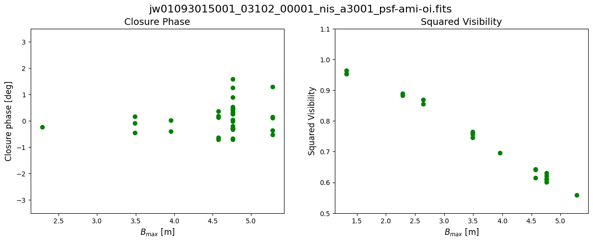
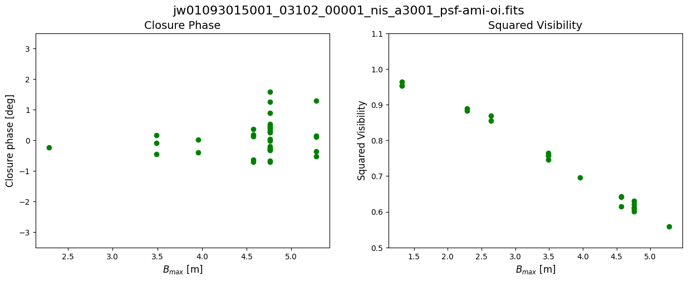

NIRISS AMI Pipeline Notebook#
Authors: R. Cooper
Last Updated: April 15, 2025
Pipeline Version: 1.18.0 (Build 11.3)
Purpose:
This notebook provides a framework for processing Near-Infrared
Imager and Slitless Spectrograph (NIRISS) Aperture Masking Interferometry (AMI) data through all
three James Webb Space Telescope (JWST) pipeline stages. Data is assumed
to be located in one observation folder according to paths set up below.
It should not be necessary to edit any cells other than in the
Configuration section unless modifying the standard
pipeline processing options.
Data: This notebook uses an example dataset from Program ID 1093 (PI: Thatte) which is the AMI commissioning program. For illustrative purposes, we will use a single target and reference star pair. Each exposure was taken in the F480W filter filter with the non-redundant mask (NRM) that enables AMI in the pupil. The observations used are observation 12 for the target and observation 15 for the reference star.
Example input data to use will be downloaded automatically unless disabled (i.e., to use local files instead).
JWST pipeline version and CRDS context:
This notebook was written for the above-specified pipeline version and associated
build context for this version of the JWST Calibration Pipeline. Information about
this and other contexts can be found in the JWST Calibration Reference Data System
(CRDS server). If you use different pipeline versions,
please refer to the table here
to determine what context to use. To learn more about the differences for the pipeline,
read the relevant
documentation.
Please note that pipeline software development is a continuous process, so results
in some cases may be slightly different if a subsequent version is used. For optimal
results, users are strongly encouraged to reprocess their data using the most recent
pipeline version and
associated CRDS context,
taking advantage of bug fixes and algorithm improvements.
Any known issues for this build are noted in the notebook.
Updates:
This notebook is regularly updated as improvements are made to the
pipeline. Find the most up to date version of this notebook at:
https://github.com/spacetelescope/jwst-pipeline-notebooks/
Recent Changes:
March 31, 2025: original notebook released
Table of Contents#
Configuration
Package Imports
Demo Mode Setup (ignore if not using demo data)
Directory Setup
Detector 1 Pipeline
Image2 Pipeline
AMI3 Pipeline
Visualize the data
1. Configuration#
Install dependencies and parameters#
To make sure that the pipeline version is compatabile with the steps
discussed below and the required dependencies and packages are installed,
you can create a fresh conda environment and install the provided
requirements.txt file:
conda create -n niriss_ami_pipeline python=3.11
conda activate niriss_ami_pipeline
pip install -r requirements.txt
Set the basic parameters to use with this notebook. These will affect what data is used, where data is located (if already in disk), and pipeline modules run in this data. The list of parameters are:
demo_mode
directories with data
pipeline modules
# Basic import necessary for configuration
import os
demo_mode must be set appropriately below.
Set demo_mode = True to run in demonstration mode. In this
mode this notebook will download example data from the Barbara A.
Mikulski Archive for Space Telescopes (MAST)
and process it through the
pipeline. This will all happen in a local directory unless modified
in Section 3
below.
Set demo_mode = False if you want to process your own data
that has already been downloaded and provide the location of the data.
# Set parameters for demo_mode, channel, band, data mode directories, and
# processing steps.
# -----------------------------Demo Mode---------------------------------
demo_mode = True
if demo_mode:
print('Running in demonstration mode using online example data!')
# --------------------------User Mode Directories------------------------
# If demo_mode = False, look for user data in these paths
if not demo_mode:
# Set directory paths for processing specific data; these will need
# to be changed to your local directory setup (below are given as
# examples)
basedir = os.path.join(os.getcwd(), '')
# Point to location of science observation data.
# Assumes both science and PSF reference data are in the same directory
# with uncalibrated data in sci_dir/uncal/ and results in stage1,
# stage2, stage3 directories
sci_dir = os.path.join(basedir, 'JWSTData/PID_1093/')
# Set which filter to process (empty will process all)
use_filter = '' # E.g., F480M
# --------------------------Set Processing Steps--------------------------
# Individual pipeline stages can be turned on/off here. Note that a later
# stage won't be able to run unless data products have already been
# produced from the prior stage.
# Science processing
dodet1 = True # calwebb_detector1
doimage2 = True # calwebb_image2
doami3 = True # calwebb_ami3
doviz = True # Visualize calwebb_ami3 output
Running in demonstration mode using online example data!
Set CRDS context and server#
Before importing CRDS and JWST modules, we need
to configure our environment. This includes defining a CRDS cache
directory in which to keep the reference files that will be used by the
calibration pipeline.
If the root directory for the local CRDS cache directory has not been set already, it will be set to create one in the home directory.
# ------------------------Set CRDS context and paths----------------------
# Each version of the calibration pipeline is associated with a specific CRDS
# context file. The pipeline will select the appropriate context file behind
# the scenes while running. However, if you wish to override the default context
# file and run the pipeline with a different context, you can set that using
# the CRDS_CONTEXT environment variable. Here we show how this is done,
# although we leave the line commented out in order to use the default context.
# If you wish to specify a different context, uncomment the line below.
#os.environ['CRDS_CONTEXT'] = 'jwst_1322.pmap' # CRDS context for 1.16.0
# Check whether the local CRDS cache directory has been set.
# If not, set it to the user home directory
if (os.getenv('CRDS_PATH') is None):
os.environ['CRDS_PATH'] = os.path.join(os.path.expanduser('~'), 'crds')
# Check whether the CRDS server URL has been set. If not, set it.
if (os.getenv('CRDS_SERVER_URL') is None):
os.environ['CRDS_SERVER_URL'] = 'https://jwst-crds.stsci.edu'
# Echo CRDS path in use
print(f"CRDS local filepath: {os.environ['CRDS_PATH']}")
print(f"CRDS file server: {os.environ['CRDS_SERVER_URL']}")
CRDS local filepath: /home/runner/crds
CRDS file server: https://jwst-crds.stsci.edu
2. Package Imports#
# Use the entire available screen width for this notebook
from IPython.display import display, HTML
display(HTML("<style>.container { width:95% !important; }</style>"))
# Basic system utilities for interacting with files
# ----------------------General Imports------------------------------------
import glob
import time
import json
from pathlib import Path
from collections import defaultdict
# Numpy for doing calculations
import numpy as np
# -----------------------Astroquery Imports--------------------------------
# ASCII files, and downloading demo files
from astroquery.mast import Observations
# For visualizing data
import matplotlib.pyplot as plt
from astropy.visualization import (MinMaxInterval, SqrtStretch,
ImageNormalize)
# For file manipulation
from astropy.io import fits
import asdf
# for JWST calibration pipeline
import jwst
import crds
from jwst.pipeline import Detector1Pipeline
from jwst.pipeline import Image2Pipeline
from jwst.pipeline import Ami3Pipeline
# JWST pipeline utilities
from jwst import datamodels
from jwst.associations import asn_from_list # Tools for creating association files
from jwst.associations.lib.rules_level3_base import DMS_Level3_Base # Definition of a Lvl3 association file
# Echo pipeline version and CRDS context in use
print(f"JWST Calibration Pipeline Version: {jwst.__version__}")
print(f"Using CRDS Context: {crds.get_context_name('jwst')}")
JWST Calibration Pipeline Version: 1.18.0
CRDS - INFO - Calibration SW Found: jwst 1.18.0 (/opt/hostedtoolcache/Python/3.11.12/x64/lib/python3.11/site-packages/jwst-1.18.0.dist-info)
Using CRDS Context: jwst_1364.pmap
Define convenience functions#
# Define a convenience function to select only files of a given filter from an input set
def select_filter_files(files, use_filter):
files_culled = []
if (use_filter != ''):
for file in files:
model = datamodels.open(file)
filt = model.meta.instrument.filter
if (filt == use_filter):
files_culled.append(file)
model.close()
else:
files_culled = files
return files_culled
# Define a convenience function to separate a list of input files into science and PSF reference exposures
def split_scipsf_files(files):
psffiles = []
scifiles = []
for file in files:
model = datamodels.open(file)
if model.meta.exposure.psf_reference is True:
psffiles.append(file)
else:
scifiles.append(file)
model.close()
return scifiles, psffiles
# Start a timer to keep track of runtime
time0 = time.perf_counter()
3. Demo Mode Setup (ignore if not using demo data)#
If running in demonstration mode, set up the program information to
retrieve the uncalibrated data automatically from MAST using
astroquery.
MAST has a dedicated service for JWST data retrieval, so the archive can
be searched by instrument keywords rather than just filenames or proposal IDs.
The list of searchable keywords for filtered JWST MAST queries
is here.
For illustrative purposes, we will use a single target and reference star pair. Each exposure was taken in the F480W filter filter with the non-redundant mask (NRM) that enables AMI in the pupil.
We will start with uncalibrated data products. The files are named
jw010930nn001_03102_00001_nis_uncal.fits, where nn refers to the
observation number: in this case, observation 12 for the target and
observation 15 for the reference star.
More information about the JWST file naming conventions can be found at: https://jwst-pipeline.readthedocs.io/en/latest/jwst/data_products/file_naming.html
# Set up the program information and paths for demo program
if demo_mode:
print('Running in demonstration mode and will download example data from MAST!')
# --------------Program and observation information--------------
program = '01093'
sci_observtn = ['012', '015'] # Obs 12 is the target, Obs 15 is the reference star
visit = '001'
visitgroup = '03'
seq_id = "1"
act_id = '02'
expnum = '00001'
# --------------Program and observation directories--------------
data_dir = os.path.join('.', 'nis_ami_demo_data')
sci_dir = os.path.join(data_dir, 'PID_1093')
uncal_dir = os.path.join(sci_dir, 'uncal') # Uncalibrated pipeline inputs should be here
if not os.path.exists(uncal_dir):
os.makedirs(uncal_dir)
# Create directory if it does not exist
if not os.path.isdir(data_dir):
os.mkdir(data_dir)
Running in demonstration mode and will download example data from MAST!
Identify list of science (SCI) uncalibrated files associated with visits.
# Obtain a list of observation IDs for the specified demo program
if demo_mode:
# Science data
sci_obs_id_table = Observations.query_criteria(instrument_name=["NIRISS/AMI"],
proposal_id=[program],
filters=['F480M;NRM'], # Data for Specific Filter
obs_id=['jw' + program + '*'])
# Turn the list of visits into a list of uncalibrated data files
if demo_mode:
# Define types of files to select
file_dict = {'uncal': {'product_type': 'SCIENCE',
'productSubGroupDescription': 'UNCAL',
'calib_level': [1]}}
# Science files
sci_files = []
# Loop over visits identifying uncalibrated files that are associated
# with them
for exposure in (sci_obs_id_table):
products = Observations.get_product_list(exposure)
for filetype, query_dict in file_dict.items():
filtered_products = Observations.filter_products(products, productType=query_dict['product_type'],
productSubGroupDescription=query_dict['productSubGroupDescription'],
calib_level=query_dict['calib_level'])
sci_files.extend(filtered_products['dataURI'])
# Select only the exposures we want to use based on filename
# Construct the filenames and select files based on them
filestrings = ['jw' + program + sciobs + visit + '_' + visitgroup + seq_id + act_id + '_' + expnum for sciobs in sci_observtn]
sci_files_to_download = [scifile for scifile in sci_files if any(filestr in scifile for filestr in filestrings)]
sci_files_to_download = sorted(set(sci_files_to_download))
print(f"Science files selected for downloading: {len(sci_files_to_download)}")
Science files selected for downloading: 2
Download all the uncal files and place them into the appropriate directories.
if demo_mode:
for filename in sci_files_to_download:
sci_manifest = Observations.download_file(filename,
local_path=os.path.join(uncal_dir, Path(filename).name))
Downloading URL https://mast.stsci.edu/api/v0.1/Download/file?uri=mast:JWST/product/jw01093012001_03102_00001_nis_uncal.fits to ./nis_ami_demo_data/PID_1093/uncal/jw01093012001_03102_00001_nis_uncal.fits ...
[Done]
Downloading URL https://mast.stsci.edu/api/v0.1/Download/file?uri=mast:JWST/product/jw01093015001_03102_00001_nis_uncal.fits to ./nis_ami_demo_data/PID_1093/uncal/jw01093015001_03102_00001_nis_uncal.fits ...
[Done]
4. Directory Setup#
Set up detailed paths to input/output stages here.
# Define output subdirectories to keep science data products organized
# -----------------------------Science Directories------------------------------
uncal_dir = os.path.join(sci_dir, 'uncal') # Uncalibrated pipeline inputs should be here
det1_dir = os.path.join(sci_dir, 'stage1') # calwebb_detector1 pipeline outputs will go here
image2_dir = os.path.join(sci_dir, 'stage2') # calwebb_image2 pipeline outputs will go here
ami3_dir = os.path.join(sci_dir, 'stage3') # calwebb_ami3 pipeline outputs will go here
# We need to check that the desired output directories exist, and if not create them
# Ensure filepaths for input data exist
if not os.path.exists(uncal_dir):
os.makedirs(uncal_dir)
if not os.path.exists(det1_dir):
os.makedirs(det1_dir)
if not os.path.exists(image2_dir):
os.makedirs(image2_dir)
if not os.path.exists(ami3_dir):
os.makedirs(ami3_dir)
Print the exposure parameters of all potential input files:
uncal_files = sorted(glob.glob(os.path.join(uncal_dir, '*_uncal.fits')))
# Restrict to selected filter if applicable
uncal_files = select_filter_files(uncal_files, use_filter)
for file in uncal_files:
model = datamodels.open(file)
# print file name
print(model.meta.filename)
# Print out exposure info
print(f"Instrument: {model.meta.instrument.name}")
print(f"Filter: {model.meta.instrument.filter}")
print(f"Pupil: {model.meta.instrument.pupil}")
print(f"Number of integrations: {model.meta.exposure.nints}")
print(f"Number of groups: {model.meta.exposure.ngroups}")
print(f"Readout pattern: {model.meta.exposure.readpatt}")
print(f"Dither position number: {model.meta.dither.position_number}")
print("\n")
model.close()
jw01093012001_03102_00001_nis_uncal.fits
Instrument: NIRISS
Filter: F480M
Pupil: NRM
Number of integrations: 69
Number of groups: 5
Readout pattern: NISRAPID
Dither position number: 1
jw01093015001_03102_00001_nis_uncal.fits
Instrument: NIRISS
Filter: F480M
Pupil: NRM
Number of integrations: 61
Number of groups: 12
Readout pattern: NISRAPID
Dither position number: 1
For the demo data, files should be for the NIRISS instrument
using the F480M filter in the Filter Wheel
and the NRM in the Pupil Wheel.
Likewise, both demo exposures use the NISRAPID readout pattern. The target has 5 groups per integration, and 69 integrations per exposure. The reference star has 12 groups per integration, and 61 integrations per exposure. They were taken at the same dither position; primary dither pattern position 1.
For more information about how JWST exposures are defined by up-the-ramp sampling, see the Understanding Exposure Times JDox article.
# Print out the time benchmark
time1 = time.perf_counter()
print(f"Runtime so far: {time1 - time0:0.0f} seconds")
Runtime so far: 40 seconds
5. Detector1 Pipeline#
Run the datasets through the
Detector1
stage of the pipeline to apply detector level calibrations and create a
countrate data product where slopes are fitted to the integration ramps.
These *_rateints.fits products are 3D (nintegrations x nrows x ncols)
and contain the fitted ramp slopes for each integration.
2D countrate data products (*_rate.fits) are also
created (nrows x ncols) which have been averaged over all
integrations.
By default, all steps in the Detector1 stage of the pipeline are run for
NIRISS except: the ipc correction step and the gain_scale step. Note
that while the persistence step
is set to run by default, this step does not automatically correct the
science data for persistence. The persistence step creates a
*_trapsfilled.fits file which is a model that records the number
of traps filled at each pixel at the end of an exposure. This file would be
used as an input to the persistence step, via the input_trapsfilled
argument, to correct a science exposure for persistence. Since persistence
is not well calibrated for NIRISS, we do not perform a persistence
correction and thus turn off this step to speed up calibration and to not
create files that will not be used in the subsequent analysis. This step
can be turned off when running the pipeline in Python by doing:
rate_result = Detector1Pipeline.call(uncal,steps={'persistence': {'skip': True}})
or as indicated in the cell bellow using a dictionary.
The charge_migration step
is particularly important for NIRISS images to mitigate apparent flux loss
in resampled images due to the spilling of charge from a central pixel into
its neighboring pixels (see Goudfrooij et al. 2023
for details). Charge migration occurs when the accumulated charge in a
central pixel exceeds a certain signal limit, which is ~25,000 ADU. This
step is turned on by default for NIRISS imaging mode when using CRDS
contexts of jwst_1159.pmap or later. Different signal limits for each filter are provided by the
pars-chargemigrationstep parameter files.
Users can specify a different signal limit by running this step with the
signal_threshold flag and entering another signal limit in units of ADU.
The effect is stronger when there is high contrast between a bright pixel and neighboring faint pixel,
as is the case for the strongly peaked AMI PSF.
For AMI mode, preliminary investigation shows that dark subtraction does not improve calibration, and may in fact have a detrimental effect, so we turn it off here.
# Set up a dictionary to define how the Detector1 pipeline should be configured
# Boilerplate dictionary setup
det1dict = defaultdict(dict)
# Step names are copied here for reference
det1_steps = ['group_scale', 'dq_init', 'saturation', 'ipc', 'superbias', 'refpix',
'linearity', 'persistence', 'dark_current', 'charge_migration',
'jump', 'ramp_fit', 'gain_scale']
# Overrides for whether or not certain steps should be skipped
# skipping the ipc, persistence, and dark steps
det1dict['ipc']['skip'] = True
det1dict['persistence']['skip'] = True
det1dict['dark_current']['skip'] = True
# Overrides for various reference files
# Files should be in the base local directory or provide full path
#det1dict['dq_init']['override_mask'] = 'myfile.fits' # Bad pixel mask
#det1dict['saturation']['override_saturation'] = 'myfile.fits' # Saturation
#det1dict['linearity']['override_linearity'] = 'myfile.fits' # Linearity
#det1dict['dark_current']['override_dark'] = 'myfile.fits' # Dark current subtraction
#det1dict['jump']['override_gain'] = 'myfile.fits' # Gain used by jump step
#det1dict['ramp_fit']['override_gain'] = 'myfile.fits' # Gain used by ramp fitting step
#det1dict['jump']['override_readnoise'] = 'myfile.fits' # Read noise used by jump step
#det1dict['ramp_fit']['override_readnoise'] = 'myfile.fits' # Read noise used by ramp fitting step
# Turn on multi-core processing (off by default). Choose what fraction of cores to use (quarter, half, or all)
det1dict['jump']['maximum_cores'] = 'half'
# Alter parameters of certain steps (example)
#det1dict['charge_migration']['signal_threshold'] = X
The clean_flicker_noise step removes 1/f noise from calibrated ramp images, after the jump step and prior to performing the ramp_fitting step. By default, this step is skipped in the calwebb_detector1 pipeline for all instruments and modes. Although available, this step has not been extensively tested for the NIRISS AMI subarray and is thus not recommended at the present time.
Run Detector1 stage of pipeline
# Run Detector1 stage of pipeline, specifying:
# output directory to save *_rateints.fits files
# save_results flag set to True so the *rateints.fits files are saved
# save_calibrated_ramp set to True so *ramp.fits files are saved
if dodet1:
for uncal in uncal_files:
rate_result = Detector1Pipeline.call(uncal,
output_dir=det1_dir,
steps=det1dict,
save_results=True,
save_calibrated_ramp=True)
else:
print('Skipping Detector1 processing')
2025-05-08 15:31:31,029 - CRDS - INFO - Fetching /home/runner/crds/mappings/jwst/jwst_system_datalvl_0002.rmap 694 bytes (1 / 204 files) (0 / 741.0 K bytes)
2025-05-08 15:31:31,112 - CRDS - INFO - Fetching /home/runner/crds/mappings/jwst/jwst_system_calver_0048.rmap 5.3 K bytes (2 / 204 files) (694 / 741.0 K bytes)
2025-05-08 15:31:31,187 - CRDS - INFO - Fetching /home/runner/crds/mappings/jwst/jwst_system_0047.imap 385 bytes (3 / 204 files) (6.0 K / 741.0 K bytes)
2025-05-08 15:31:31,345 - CRDS - INFO - Fetching /home/runner/crds/mappings/jwst/jwst_nirspec_wavelengthrange_0024.rmap 1.4 K bytes (4 / 204 files) (6.4 K / 741.0 K bytes)
2025-05-08 15:31:31,438 - CRDS - INFO - Fetching /home/runner/crds/mappings/jwst/jwst_nirspec_wavecorr_0005.rmap 884 bytes (5 / 204 files) (7.8 K / 741.0 K bytes)
2025-05-08 15:31:31,546 - CRDS - INFO - Fetching /home/runner/crds/mappings/jwst/jwst_nirspec_superbias_0079.rmap 36.0 K bytes (6 / 204 files) (8.6 K / 741.0 K bytes)
2025-05-08 15:31:31,663 - CRDS - INFO - Fetching /home/runner/crds/mappings/jwst/jwst_nirspec_sirskernel_0001.rmap 630 bytes (7 / 204 files) (44.6 K / 741.0 K bytes)
2025-05-08 15:31:31,726 - CRDS - INFO - Fetching /home/runner/crds/mappings/jwst/jwst_nirspec_sflat_0026.rmap 20.6 K bytes (8 / 204 files) (45.3 K / 741.0 K bytes)
2025-05-08 15:31:31,803 - CRDS - INFO - Fetching /home/runner/crds/mappings/jwst/jwst_nirspec_saturation_0018.rmap 2.0 K bytes (9 / 204 files) (65.9 K / 741.0 K bytes)
2025-05-08 15:31:31,865 - CRDS - INFO - Fetching /home/runner/crds/mappings/jwst/jwst_nirspec_refpix_0015.rmap 1.6 K bytes (10 / 204 files) (67.9 K / 741.0 K bytes)
2025-05-08 15:31:32,025 - CRDS - INFO - Fetching /home/runner/crds/mappings/jwst/jwst_nirspec_readnoise_0025.rmap 2.6 K bytes (11 / 204 files) (69.5 K / 741.0 K bytes)
2025-05-08 15:31:32,243 - CRDS - INFO - Fetching /home/runner/crds/mappings/jwst/jwst_nirspec_pictureframe_0001.rmap 675 bytes (12 / 204 files) (72.0 K / 741.0 K bytes)
2025-05-08 15:31:32,322 - CRDS - INFO - Fetching /home/runner/crds/mappings/jwst/jwst_nirspec_photom_0013.rmap 958 bytes (13 / 204 files) (72.7 K / 741.0 K bytes)
2025-05-08 15:31:32,420 - CRDS - INFO - Fetching /home/runner/crds/mappings/jwst/jwst_nirspec_pathloss_0008.rmap 1.2 K bytes (14 / 204 files) (73.7 K / 741.0 K bytes)
2025-05-08 15:31:32,506 - CRDS - INFO - Fetching /home/runner/crds/mappings/jwst/jwst_nirspec_pars-whitelightstep_0001.rmap 777 bytes (15 / 204 files) (74.9 K / 741.0 K bytes)
2025-05-08 15:31:32,569 - CRDS - INFO - Fetching /home/runner/crds/mappings/jwst/jwst_nirspec_pars-spec2pipeline_0013.rmap 2.1 K bytes (16 / 204 files) (75.6 K / 741.0 K bytes)
2025-05-08 15:31:32,632 - CRDS - INFO - Fetching /home/runner/crds/mappings/jwst/jwst_nirspec_pars-resamplespecstep_0002.rmap 709 bytes (17 / 204 files) (77.8 K / 741.0 K bytes)
2025-05-08 15:31:32,709 - CRDS - INFO - Fetching /home/runner/crds/mappings/jwst/jwst_nirspec_pars-outlierdetectionstep_0005.rmap 1.1 K bytes (18 / 204 files) (78.5 K / 741.0 K bytes)
2025-05-08 15:31:32,797 - CRDS - INFO - Fetching /home/runner/crds/mappings/jwst/jwst_nirspec_pars-jumpstep_0005.rmap 810 bytes (19 / 204 files) (79.6 K / 741.0 K bytes)
2025-05-08 15:31:32,874 - CRDS - INFO - Fetching /home/runner/crds/mappings/jwst/jwst_nirspec_pars-image2pipeline_0008.rmap 1.0 K bytes (20 / 204 files) (80.4 K / 741.0 K bytes)
2025-05-08 15:31:32,938 - CRDS - INFO - Fetching /home/runner/crds/mappings/jwst/jwst_nirspec_pars-detector1pipeline_0003.rmap 1.1 K bytes (21 / 204 files) (81.4 K / 741.0 K bytes)
2025-05-08 15:31:33,104 - CRDS - INFO - Fetching /home/runner/crds/mappings/jwst/jwst_nirspec_pars-darkpipeline_0003.rmap 872 bytes (22 / 204 files) (82.5 K / 741.0 K bytes)
2025-05-08 15:31:33,187 - CRDS - INFO - Fetching /home/runner/crds/mappings/jwst/jwst_nirspec_pars-darkcurrentstep_0003.rmap 1.8 K bytes (23 / 204 files) (83.4 K / 741.0 K bytes)
2025-05-08 15:31:33,253 - CRDS - INFO - Fetching /home/runner/crds/mappings/jwst/jwst_nirspec_ote_0030.rmap 1.3 K bytes (24 / 204 files) (85.2 K / 741.0 K bytes)
2025-05-08 15:31:33,407 - CRDS - INFO - Fetching /home/runner/crds/mappings/jwst/jwst_nirspec_msaoper_0016.rmap 1.5 K bytes (25 / 204 files) (86.4 K / 741.0 K bytes)
2025-05-08 15:31:33,469 - CRDS - INFO - Fetching /home/runner/crds/mappings/jwst/jwst_nirspec_msa_0027.rmap 1.3 K bytes (26 / 204 files) (87.9 K / 741.0 K bytes)
2025-05-08 15:31:33,542 - CRDS - INFO - Fetching /home/runner/crds/mappings/jwst/jwst_nirspec_mask_0043.rmap 3.5 K bytes (27 / 204 files) (89.2 K / 741.0 K bytes)
2025-05-08 15:31:33,612 - CRDS - INFO - Fetching /home/runner/crds/mappings/jwst/jwst_nirspec_linearity_0017.rmap 1.6 K bytes (28 / 204 files) (92.7 K / 741.0 K bytes)
2025-05-08 15:31:33,676 - CRDS - INFO - Fetching /home/runner/crds/mappings/jwst/jwst_nirspec_ipc_0006.rmap 876 bytes (29 / 204 files) (94.3 K / 741.0 K bytes)
2025-05-08 15:31:33,741 - CRDS - INFO - Fetching /home/runner/crds/mappings/jwst/jwst_nirspec_ifuslicer_0017.rmap 1.5 K bytes (30 / 204 files) (95.2 K / 741.0 K bytes)
2025-05-08 15:31:33,804 - CRDS - INFO - Fetching /home/runner/crds/mappings/jwst/jwst_nirspec_ifupost_0019.rmap 1.5 K bytes (31 / 204 files) (96.7 K / 741.0 K bytes)
2025-05-08 15:31:33,879 - CRDS - INFO - Fetching /home/runner/crds/mappings/jwst/jwst_nirspec_ifufore_0017.rmap 1.5 K bytes (32 / 204 files) (98.2 K / 741.0 K bytes)
2025-05-08 15:31:33,944 - CRDS - INFO - Fetching /home/runner/crds/mappings/jwst/jwst_nirspec_gain_0023.rmap 1.8 K bytes (33 / 204 files) (99.7 K / 741.0 K bytes)
2025-05-08 15:31:34,015 - CRDS - INFO - Fetching /home/runner/crds/mappings/jwst/jwst_nirspec_fpa_0028.rmap 1.3 K bytes (34 / 204 files) (101.5 K / 741.0 K bytes)
2025-05-08 15:31:34,077 - CRDS - INFO - Fetching /home/runner/crds/mappings/jwst/jwst_nirspec_fore_0026.rmap 5.0 K bytes (35 / 204 files) (102.7 K / 741.0 K bytes)
2025-05-08 15:31:34,138 - CRDS - INFO - Fetching /home/runner/crds/mappings/jwst/jwst_nirspec_flat_0015.rmap 3.8 K bytes (36 / 204 files) (107.7 K / 741.0 K bytes)
2025-05-08 15:31:34,202 - CRDS - INFO - Fetching /home/runner/crds/mappings/jwst/jwst_nirspec_fflat_0026.rmap 7.2 K bytes (37 / 204 files) (111.5 K / 741.0 K bytes)
2025-05-08 15:31:34,281 - CRDS - INFO - Fetching /home/runner/crds/mappings/jwst/jwst_nirspec_extract1d_0018.rmap 2.3 K bytes (38 / 204 files) (118.7 K / 741.0 K bytes)
2025-05-08 15:31:34,371 - CRDS - INFO - Fetching /home/runner/crds/mappings/jwst/jwst_nirspec_disperser_0028.rmap 5.7 K bytes (39 / 204 files) (121.0 K / 741.0 K bytes)
2025-05-08 15:31:34,439 - CRDS - INFO - Fetching /home/runner/crds/mappings/jwst/jwst_nirspec_dflat_0007.rmap 1.1 K bytes (40 / 204 files) (126.7 K / 741.0 K bytes)
2025-05-08 15:31:34,553 - CRDS - INFO - Fetching /home/runner/crds/mappings/jwst/jwst_nirspec_dark_0074.rmap 34.2 K bytes (41 / 204 files) (127.9 K / 741.0 K bytes)
2025-05-08 15:31:34,697 - CRDS - INFO - Fetching /home/runner/crds/mappings/jwst/jwst_nirspec_cubepar_0015.rmap 966 bytes (42 / 204 files) (162.1 K / 741.0 K bytes)
2025-05-08 15:31:34,762 - CRDS - INFO - Fetching /home/runner/crds/mappings/jwst/jwst_nirspec_collimator_0026.rmap 1.3 K bytes (43 / 204 files) (163.1 K / 741.0 K bytes)
2025-05-08 15:31:34,834 - CRDS - INFO - Fetching /home/runner/crds/mappings/jwst/jwst_nirspec_camera_0026.rmap 1.3 K bytes (44 / 204 files) (164.4 K / 741.0 K bytes)
2025-05-08 15:31:34,895 - CRDS - INFO - Fetching /home/runner/crds/mappings/jwst/jwst_nirspec_barshadow_0007.rmap 1.8 K bytes (45 / 204 files) (165.7 K / 741.0 K bytes)
2025-05-08 15:31:34,957 - CRDS - INFO - Fetching /home/runner/crds/mappings/jwst/jwst_nirspec_area_0018.rmap 6.3 K bytes (46 / 204 files) (167.5 K / 741.0 K bytes)
2025-05-08 15:31:35,020 - CRDS - INFO - Fetching /home/runner/crds/mappings/jwst/jwst_nirspec_apcorr_0009.rmap 5.6 K bytes (47 / 204 files) (173.8 K / 741.0 K bytes)
2025-05-08 15:31:35,083 - CRDS - INFO - Fetching /home/runner/crds/mappings/jwst/jwst_nirspec_0398.imap 5.8 K bytes (48 / 204 files) (179.3 K / 741.0 K bytes)
2025-05-08 15:31:35,153 - CRDS - INFO - Fetching /home/runner/crds/mappings/jwst/jwst_niriss_wfssbkg_0010.rmap 3.1 K bytes (49 / 204 files) (185.1 K / 741.0 K bytes)
2025-05-08 15:31:35,217 - CRDS - INFO - Fetching /home/runner/crds/mappings/jwst/jwst_niriss_wavelengthrange_0006.rmap 862 bytes (50 / 204 files) (188.2 K / 741.0 K bytes)
2025-05-08 15:31:35,285 - CRDS - INFO - Fetching /home/runner/crds/mappings/jwst/jwst_niriss_trappars_0004.rmap 753 bytes (51 / 204 files) (189.1 K / 741.0 K bytes)
2025-05-08 15:31:35,353 - CRDS - INFO - Fetching /home/runner/crds/mappings/jwst/jwst_niriss_trapdensity_0005.rmap 705 bytes (52 / 204 files) (189.9 K / 741.0 K bytes)
2025-05-08 15:31:35,415 - CRDS - INFO - Fetching /home/runner/crds/mappings/jwst/jwst_niriss_throughput_0005.rmap 1.3 K bytes (53 / 204 files) (190.6 K / 741.0 K bytes)
2025-05-08 15:31:35,478 - CRDS - INFO - Fetching /home/runner/crds/mappings/jwst/jwst_niriss_superbias_0030.rmap 7.4 K bytes (54 / 204 files) (191.8 K / 741.0 K bytes)
2025-05-08 15:31:35,540 - CRDS - INFO - Fetching /home/runner/crds/mappings/jwst/jwst_niriss_specwcs_0014.rmap 3.1 K bytes (55 / 204 files) (199.2 K / 741.0 K bytes)
2025-05-08 15:31:35,603 - CRDS - INFO - Fetching /home/runner/crds/mappings/jwst/jwst_niriss_specprofile_0008.rmap 2.4 K bytes (56 / 204 files) (202.4 K / 741.0 K bytes)
2025-05-08 15:31:35,670 - CRDS - INFO - Fetching /home/runner/crds/mappings/jwst/jwst_niriss_speckernel_0006.rmap 1.0 K bytes (57 / 204 files) (204.7 K / 741.0 K bytes)
2025-05-08 15:31:35,740 - CRDS - INFO - Fetching /home/runner/crds/mappings/jwst/jwst_niriss_sirskernel_0001.rmap 627 bytes (58 / 204 files) (205.8 K / 741.0 K bytes)
2025-05-08 15:31:35,801 - CRDS - INFO - Fetching /home/runner/crds/mappings/jwst/jwst_niriss_saturation_0015.rmap 829 bytes (59 / 204 files) (206.4 K / 741.0 K bytes)
2025-05-08 15:31:35,864 - CRDS - INFO - Fetching /home/runner/crds/mappings/jwst/jwst_niriss_readnoise_0011.rmap 987 bytes (60 / 204 files) (207.2 K / 741.0 K bytes)
2025-05-08 15:31:35,936 - CRDS - INFO - Fetching /home/runner/crds/mappings/jwst/jwst_niriss_photom_0036.rmap 1.3 K bytes (61 / 204 files) (208.2 K / 741.0 K bytes)
2025-05-08 15:31:36,006 - CRDS - INFO - Fetching /home/runner/crds/mappings/jwst/jwst_niriss_persat_0007.rmap 674 bytes (62 / 204 files) (209.5 K / 741.0 K bytes)
2025-05-08 15:31:36,082 - CRDS - INFO - Fetching /home/runner/crds/mappings/jwst/jwst_niriss_pathloss_0003.rmap 758 bytes (63 / 204 files) (210.1 K / 741.0 K bytes)
2025-05-08 15:31:36,146 - CRDS - INFO - Fetching /home/runner/crds/mappings/jwst/jwst_niriss_pastasoss_0004.rmap 818 bytes (64 / 204 files) (210.9 K / 741.0 K bytes)
2025-05-08 15:31:36,217 - CRDS - INFO - Fetching /home/runner/crds/mappings/jwst/jwst_niriss_pars-undersamplecorrectionstep_0001.rmap 904 bytes (65 / 204 files) (211.7 K / 741.0 K bytes)
2025-05-08 15:31:36,278 - CRDS - INFO - Fetching /home/runner/crds/mappings/jwst/jwst_niriss_pars-tweakregstep_0012.rmap 3.1 K bytes (66 / 204 files) (212.6 K / 741.0 K bytes)
2025-05-08 15:31:36,340 - CRDS - INFO - Fetching /home/runner/crds/mappings/jwst/jwst_niriss_pars-spec2pipeline_0008.rmap 984 bytes (67 / 204 files) (215.8 K / 741.0 K bytes)
2025-05-08 15:31:36,411 - CRDS - INFO - Fetching /home/runner/crds/mappings/jwst/jwst_niriss_pars-sourcecatalogstep_0002.rmap 2.3 K bytes (68 / 204 files) (216.7 K / 741.0 K bytes)
2025-05-08 15:31:36,474 - CRDS - INFO - Fetching /home/runner/crds/mappings/jwst/jwst_niriss_pars-resamplestep_0002.rmap 687 bytes (69 / 204 files) (219.1 K / 741.0 K bytes)
2025-05-08 15:31:36,546 - CRDS - INFO - Fetching /home/runner/crds/mappings/jwst/jwst_niriss_pars-outlierdetectionstep_0004.rmap 2.7 K bytes (70 / 204 files) (219.7 K / 741.0 K bytes)
2025-05-08 15:31:36,615 - CRDS - INFO - Fetching /home/runner/crds/mappings/jwst/jwst_niriss_pars-jumpstep_0007.rmap 6.4 K bytes (71 / 204 files) (222.4 K / 741.0 K bytes)
2025-05-08 15:31:36,678 - CRDS - INFO - Fetching /home/runner/crds/mappings/jwst/jwst_niriss_pars-image2pipeline_0005.rmap 1.0 K bytes (72 / 204 files) (228.8 K / 741.0 K bytes)
2025-05-08 15:31:36,743 - CRDS - INFO - Fetching /home/runner/crds/mappings/jwst/jwst_niriss_pars-detector1pipeline_0002.rmap 1.0 K bytes (73 / 204 files) (229.8 K / 741.0 K bytes)
2025-05-08 15:31:36,805 - CRDS - INFO - Fetching /home/runner/crds/mappings/jwst/jwst_niriss_pars-darkpipeline_0002.rmap 868 bytes (74 / 204 files) (230.8 K / 741.0 K bytes)
2025-05-08 15:31:36,868 - CRDS - INFO - Fetching /home/runner/crds/mappings/jwst/jwst_niriss_pars-darkcurrentstep_0001.rmap 591 bytes (75 / 204 files) (231.7 K / 741.0 K bytes)
2025-05-08 15:31:36,932 - CRDS - INFO - Fetching /home/runner/crds/mappings/jwst/jwst_niriss_pars-chargemigrationstep_0004.rmap 5.7 K bytes (76 / 204 files) (232.3 K / 741.0 K bytes)
2025-05-08 15:31:36,996 - CRDS - INFO - Fetching /home/runner/crds/mappings/jwst/jwst_niriss_nrm_0005.rmap 663 bytes (77 / 204 files) (237.9 K / 741.0 K bytes)
2025-05-08 15:31:37,130 - CRDS - INFO - Fetching /home/runner/crds/mappings/jwst/jwst_niriss_mask_0022.rmap 1.3 K bytes (78 / 204 files) (238.6 K / 741.0 K bytes)
2025-05-08 15:31:37,200 - CRDS - INFO - Fetching /home/runner/crds/mappings/jwst/jwst_niriss_linearity_0022.rmap 961 bytes (79 / 204 files) (239.9 K / 741.0 K bytes)
2025-05-08 15:31:37,262 - CRDS - INFO - Fetching /home/runner/crds/mappings/jwst/jwst_niriss_ipc_0007.rmap 651 bytes (80 / 204 files) (240.9 K / 741.0 K bytes)
2025-05-08 15:31:37,323 - CRDS - INFO - Fetching /home/runner/crds/mappings/jwst/jwst_niriss_gain_0011.rmap 797 bytes (81 / 204 files) (241.5 K / 741.0 K bytes)
2025-05-08 15:31:37,387 - CRDS - INFO - Fetching /home/runner/crds/mappings/jwst/jwst_niriss_flat_0023.rmap 5.9 K bytes (82 / 204 files) (242.3 K / 741.0 K bytes)
2025-05-08 15:31:37,450 - CRDS - INFO - Fetching /home/runner/crds/mappings/jwst/jwst_niriss_filteroffset_0010.rmap 853 bytes (83 / 204 files) (248.2 K / 741.0 K bytes)
2025-05-08 15:31:37,518 - CRDS - INFO - Fetching /home/runner/crds/mappings/jwst/jwst_niriss_extract1d_0007.rmap 905 bytes (84 / 204 files) (249.0 K / 741.0 K bytes)
2025-05-08 15:31:37,587 - CRDS - INFO - Fetching /home/runner/crds/mappings/jwst/jwst_niriss_drizpars_0004.rmap 519 bytes (85 / 204 files) (249.9 K / 741.0 K bytes)
2025-05-08 15:31:37,653 - CRDS - INFO - Fetching /home/runner/crds/mappings/jwst/jwst_niriss_distortion_0025.rmap 3.4 K bytes (86 / 204 files) (250.4 K / 741.0 K bytes)
2025-05-08 15:31:37,716 - CRDS - INFO - Fetching /home/runner/crds/mappings/jwst/jwst_niriss_dark_0034.rmap 7.5 K bytes (87 / 204 files) (253.9 K / 741.0 K bytes)
2025-05-08 15:31:37,777 - CRDS - INFO - Fetching /home/runner/crds/mappings/jwst/jwst_niriss_bkg_0002.rmap 2.9 K bytes (88 / 204 files) (261.4 K / 741.0 K bytes)
2025-05-08 15:31:37,838 - CRDS - INFO - Fetching /home/runner/crds/mappings/jwst/jwst_niriss_area_0014.rmap 2.7 K bytes (89 / 204 files) (264.3 K / 741.0 K bytes)
2025-05-08 15:31:37,911 - CRDS - INFO - Fetching /home/runner/crds/mappings/jwst/jwst_niriss_apcorr_0010.rmap 4.3 K bytes (90 / 204 files) (267.0 K / 741.0 K bytes)
2025-05-08 15:31:37,972 - CRDS - INFO - Fetching /home/runner/crds/mappings/jwst/jwst_niriss_abvegaoffset_0004.rmap 1.4 K bytes (91 / 204 files) (271.3 K / 741.0 K bytes)
2025-05-08 15:31:38,032 - CRDS - INFO - Fetching /home/runner/crds/mappings/jwst/jwst_niriss_0272.imap 5.8 K bytes (92 / 204 files) (272.7 K / 741.0 K bytes)
2025-05-08 15:31:38,099 - CRDS - INFO - Fetching /home/runner/crds/mappings/jwst/jwst_nircam_wfssbkg_0004.rmap 7.2 K bytes (93 / 204 files) (278.5 K / 741.0 K bytes)
2025-05-08 15:31:38,162 - CRDS - INFO - Fetching /home/runner/crds/mappings/jwst/jwst_nircam_wavelengthrange_0010.rmap 996 bytes (94 / 204 files) (285.7 K / 741.0 K bytes)
2025-05-08 15:31:38,230 - CRDS - INFO - Fetching /home/runner/crds/mappings/jwst/jwst_nircam_tsophot_0003.rmap 896 bytes (95 / 204 files) (286.7 K / 741.0 K bytes)
2025-05-08 15:31:38,300 - CRDS - INFO - Fetching /home/runner/crds/mappings/jwst/jwst_nircam_trappars_0003.rmap 1.6 K bytes (96 / 204 files) (287.6 K / 741.0 K bytes)
2025-05-08 15:31:38,368 - CRDS - INFO - Fetching /home/runner/crds/mappings/jwst/jwst_nircam_trapdensity_0003.rmap 1.6 K bytes (97 / 204 files) (289.2 K / 741.0 K bytes)
2025-05-08 15:31:38,429 - CRDS - INFO - Fetching /home/runner/crds/mappings/jwst/jwst_nircam_superbias_0019.rmap 18.9 K bytes (98 / 204 files) (290.8 K / 741.0 K bytes)
2025-05-08 15:31:38,503 - CRDS - INFO - Fetching /home/runner/crds/mappings/jwst/jwst_nircam_specwcs_0022.rmap 7.1 K bytes (99 / 204 files) (309.7 K / 741.0 K bytes)
2025-05-08 15:31:38,564 - CRDS - INFO - Fetching /home/runner/crds/mappings/jwst/jwst_nircam_sirskernel_0002.rmap 671 bytes (100 / 204 files) (316.8 K / 741.0 K bytes)
2025-05-08 15:31:38,627 - CRDS - INFO - Fetching /home/runner/crds/mappings/jwst/jwst_nircam_saturation_0011.rmap 2.8 K bytes (101 / 204 files) (317.5 K / 741.0 K bytes)
2025-05-08 15:31:38,699 - CRDS - INFO - Fetching /home/runner/crds/mappings/jwst/jwst_nircam_readnoise_0026.rmap 25.9 K bytes (102 / 204 files) (320.3 K / 741.0 K bytes)
2025-05-08 15:31:38,767 - CRDS - INFO - Fetching /home/runner/crds/mappings/jwst/jwst_nircam_psfmask_0008.rmap 28.4 K bytes (103 / 204 files) (346.2 K / 741.0 K bytes)
2025-05-08 15:31:38,837 - CRDS - INFO - Fetching /home/runner/crds/mappings/jwst/jwst_nircam_photom_0028.rmap 3.4 K bytes (104 / 204 files) (374.6 K / 741.0 K bytes)
2025-05-08 15:31:38,898 - CRDS - INFO - Fetching /home/runner/crds/mappings/jwst/jwst_nircam_persat_0005.rmap 1.6 K bytes (105 / 204 files) (377.9 K / 741.0 K bytes)
2025-05-08 15:31:38,961 - CRDS - INFO - Fetching /home/runner/crds/mappings/jwst/jwst_nircam_pars-whitelightstep_0004.rmap 2.0 K bytes (106 / 204 files) (379.5 K / 741.0 K bytes)
2025-05-08 15:31:39,025 - CRDS - INFO - Fetching /home/runner/crds/mappings/jwst/jwst_nircam_pars-tweakregstep_0003.rmap 4.5 K bytes (107 / 204 files) (381.5 K / 741.0 K bytes)
2025-05-08 15:31:39,093 - CRDS - INFO - Fetching /home/runner/crds/mappings/jwst/jwst_nircam_pars-spec2pipeline_0008.rmap 984 bytes (108 / 204 files) (386.0 K / 741.0 K bytes)
2025-05-08 15:31:39,246 - CRDS - INFO - Fetching /home/runner/crds/mappings/jwst/jwst_nircam_pars-sourcecatalogstep_0002.rmap 4.6 K bytes (109 / 204 files) (387.0 K / 741.0 K bytes)
2025-05-08 15:31:39,306 - CRDS - INFO - Fetching /home/runner/crds/mappings/jwst/jwst_nircam_pars-resamplestep_0002.rmap 687 bytes (110 / 204 files) (391.6 K / 741.0 K bytes)
2025-05-08 15:31:39,370 - CRDS - INFO - Fetching /home/runner/crds/mappings/jwst/jwst_nircam_pars-outlierdetectionstep_0003.rmap 940 bytes (111 / 204 files) (392.3 K / 741.0 K bytes)
2025-05-08 15:31:39,430 - CRDS - INFO - Fetching /home/runner/crds/mappings/jwst/jwst_nircam_pars-jumpstep_0005.rmap 806 bytes (112 / 204 files) (393.2 K / 741.0 K bytes)
2025-05-08 15:31:39,506 - CRDS - INFO - Fetching /home/runner/crds/mappings/jwst/jwst_nircam_pars-image2pipeline_0004.rmap 1.1 K bytes (113 / 204 files) (394.0 K / 741.0 K bytes)
2025-05-08 15:31:39,566 - CRDS - INFO - Fetching /home/runner/crds/mappings/jwst/jwst_nircam_pars-detector1pipeline_0005.rmap 1.3 K bytes (114 / 204 files) (395.2 K / 741.0 K bytes)
2025-05-08 15:31:39,635 - CRDS - INFO - Fetching /home/runner/crds/mappings/jwst/jwst_nircam_pars-darkpipeline_0002.rmap 868 bytes (115 / 204 files) (396.4 K / 741.0 K bytes)
2025-05-08 15:31:39,711 - CRDS - INFO - Fetching /home/runner/crds/mappings/jwst/jwst_nircam_pars-darkcurrentstep_0001.rmap 618 bytes (116 / 204 files) (397.3 K / 741.0 K bytes)
2025-05-08 15:31:39,779 - CRDS - INFO - Fetching /home/runner/crds/mappings/jwst/jwst_nircam_mask_0012.rmap 4.1 K bytes (117 / 204 files) (397.9 K / 741.0 K bytes)
2025-05-08 15:31:39,839 - CRDS - INFO - Fetching /home/runner/crds/mappings/jwst/jwst_nircam_linearity_0011.rmap 2.4 K bytes (118 / 204 files) (402.1 K / 741.0 K bytes)
2025-05-08 15:31:39,906 - CRDS - INFO - Fetching /home/runner/crds/mappings/jwst/jwst_nircam_ipc_0003.rmap 2.0 K bytes (119 / 204 files) (404.5 K / 741.0 K bytes)
2025-05-08 15:31:39,969 - CRDS - INFO - Fetching /home/runner/crds/mappings/jwst/jwst_nircam_gain_0016.rmap 2.1 K bytes (120 / 204 files) (406.4 K / 741.0 K bytes)
2025-05-08 15:31:40,034 - CRDS - INFO - Fetching /home/runner/crds/mappings/jwst/jwst_nircam_flat_0028.rmap 51.7 K bytes (121 / 204 files) (408.6 K / 741.0 K bytes)
2025-05-08 15:31:40,111 - CRDS - INFO - Fetching /home/runner/crds/mappings/jwst/jwst_nircam_filteroffset_0004.rmap 1.4 K bytes (122 / 204 files) (460.2 K / 741.0 K bytes)
2025-05-08 15:31:40,177 - CRDS - INFO - Fetching /home/runner/crds/mappings/jwst/jwst_nircam_extract1d_0005.rmap 1.2 K bytes (123 / 204 files) (461.7 K / 741.0 K bytes)
2025-05-08 15:31:40,241 - CRDS - INFO - Fetching /home/runner/crds/mappings/jwst/jwst_nircam_drizpars_0001.rmap 519 bytes (124 / 204 files) (462.9 K / 741.0 K bytes)
2025-05-08 15:31:40,308 - CRDS - INFO - Fetching /home/runner/crds/mappings/jwst/jwst_nircam_distortion_0033.rmap 53.4 K bytes (125 / 204 files) (463.4 K / 741.0 K bytes)
2025-05-08 15:31:40,392 - CRDS - INFO - Fetching /home/runner/crds/mappings/jwst/jwst_nircam_dark_0047.rmap 29.0 K bytes (126 / 204 files) (516.7 K / 741.0 K bytes)
2025-05-08 15:31:40,461 - CRDS - INFO - Fetching /home/runner/crds/mappings/jwst/jwst_nircam_area_0012.rmap 33.5 K bytes (127 / 204 files) (545.7 K / 741.0 K bytes)
2025-05-08 15:31:40,530 - CRDS - INFO - Fetching /home/runner/crds/mappings/jwst/jwst_nircam_apcorr_0008.rmap 4.3 K bytes (128 / 204 files) (579.2 K / 741.0 K bytes)
2025-05-08 15:31:40,599 - CRDS - INFO - Fetching /home/runner/crds/mappings/jwst/jwst_nircam_abvegaoffset_0003.rmap 1.3 K bytes (129 / 204 files) (583.5 K / 741.0 K bytes)
2025-05-08 15:31:40,664 - CRDS - INFO - Fetching /home/runner/crds/mappings/jwst/jwst_nircam_0314.imap 5.6 K bytes (130 / 204 files) (584.8 K / 741.0 K bytes)
2025-05-08 15:31:40,730 - CRDS - INFO - Fetching /home/runner/crds/mappings/jwst/jwst_miri_wavelengthrange_0027.rmap 929 bytes (131 / 204 files) (590.4 K / 741.0 K bytes)
2025-05-08 15:31:40,794 - CRDS - INFO - Fetching /home/runner/crds/mappings/jwst/jwst_miri_tsophot_0004.rmap 882 bytes (132 / 204 files) (591.3 K / 741.0 K bytes)
2025-05-08 15:31:40,863 - CRDS - INFO - Fetching /home/runner/crds/mappings/jwst/jwst_miri_straymask_0009.rmap 987 bytes (133 / 204 files) (592.2 K / 741.0 K bytes)
2025-05-08 15:31:40,926 - CRDS - INFO - Fetching /home/runner/crds/mappings/jwst/jwst_miri_specwcs_0043.rmap 5.8 K bytes (134 / 204 files) (593.2 K / 741.0 K bytes)
2025-05-08 15:31:40,995 - CRDS - INFO - Fetching /home/runner/crds/mappings/jwst/jwst_miri_saturation_0015.rmap 1.2 K bytes (135 / 204 files) (599.0 K / 741.0 K bytes)
2025-05-08 15:31:41,055 - CRDS - INFO - Fetching /home/runner/crds/mappings/jwst/jwst_miri_rscd_0008.rmap 1.0 K bytes (136 / 204 files) (600.1 K / 741.0 K bytes)
2025-05-08 15:31:41,117 - CRDS - INFO - Fetching /home/runner/crds/mappings/jwst/jwst_miri_resol_0006.rmap 790 bytes (137 / 204 files) (601.2 K / 741.0 K bytes)
2025-05-08 15:31:41,195 - CRDS - INFO - Fetching /home/runner/crds/mappings/jwst/jwst_miri_reset_0026.rmap 3.9 K bytes (138 / 204 files) (602.0 K / 741.0 K bytes)
2025-05-08 15:31:41,259 - CRDS - INFO - Fetching /home/runner/crds/mappings/jwst/jwst_miri_regions_0034.rmap 5.2 K bytes (139 / 204 files) (605.8 K / 741.0 K bytes)
2025-05-08 15:31:41,323 - CRDS - INFO - Fetching /home/runner/crds/mappings/jwst/jwst_miri_readnoise_0023.rmap 1.6 K bytes (140 / 204 files) (611.0 K / 741.0 K bytes)
2025-05-08 15:31:41,392 - CRDS - INFO - Fetching /home/runner/crds/mappings/jwst/jwst_miri_psfmask_0009.rmap 2.1 K bytes (141 / 204 files) (612.7 K / 741.0 K bytes)
2025-05-08 15:31:41,456 - CRDS - INFO - Fetching /home/runner/crds/mappings/jwst/jwst_miri_psf_0003.rmap 839 bytes (142 / 204 files) (614.8 K / 741.0 K bytes)
2025-05-08 15:31:41,524 - CRDS - INFO - Fetching /home/runner/crds/mappings/jwst/jwst_miri_photom_0056.rmap 3.7 K bytes (143 / 204 files) (615.6 K / 741.0 K bytes)
2025-05-08 15:31:41,585 - CRDS - INFO - Fetching /home/runner/crds/mappings/jwst/jwst_miri_pathloss_0005.rmap 866 bytes (144 / 204 files) (619.4 K / 741.0 K bytes)
2025-05-08 15:31:41,651 - CRDS - INFO - Fetching /home/runner/crds/mappings/jwst/jwst_miri_pars-whitelightstep_0003.rmap 912 bytes (145 / 204 files) (620.2 K / 741.0 K bytes)
2025-05-08 15:31:41,715 - CRDS - INFO - Fetching /home/runner/crds/mappings/jwst/jwst_miri_pars-tweakregstep_0003.rmap 1.8 K bytes (146 / 204 files) (621.2 K / 741.0 K bytes)
2025-05-08 15:31:41,781 - CRDS - INFO - Fetching /home/runner/crds/mappings/jwst/jwst_miri_pars-spec3pipeline_0009.rmap 816 bytes (147 / 204 files) (623.0 K / 741.0 K bytes)
2025-05-08 15:31:41,843 - CRDS - INFO - Fetching /home/runner/crds/mappings/jwst/jwst_miri_pars-spec2pipeline_0012.rmap 1.3 K bytes (148 / 204 files) (623.8 K / 741.0 K bytes)
2025-05-08 15:31:41,911 - CRDS - INFO - Fetching /home/runner/crds/mappings/jwst/jwst_miri_pars-sourcecatalogstep_0003.rmap 1.9 K bytes (149 / 204 files) (625.1 K / 741.0 K bytes)
2025-05-08 15:31:41,978 - CRDS - INFO - Fetching /home/runner/crds/mappings/jwst/jwst_miri_pars-resamplestep_0002.rmap 677 bytes (150 / 204 files) (627.0 K / 741.0 K bytes)
2025-05-08 15:31:42,043 - CRDS - INFO - Fetching /home/runner/crds/mappings/jwst/jwst_miri_pars-resamplespecstep_0002.rmap 706 bytes (151 / 204 files) (627.7 K / 741.0 K bytes)
2025-05-08 15:31:42,120 - CRDS - INFO - Fetching /home/runner/crds/mappings/jwst/jwst_miri_pars-outlierdetectionstep_0020.rmap 3.4 K bytes (152 / 204 files) (628.4 K / 741.0 K bytes)
2025-05-08 15:31:42,181 - CRDS - INFO - Fetching /home/runner/crds/mappings/jwst/jwst_miri_pars-jumpstep_0011.rmap 1.6 K bytes (153 / 204 files) (631.8 K / 741.0 K bytes)
2025-05-08 15:31:42,250 - CRDS - INFO - Fetching /home/runner/crds/mappings/jwst/jwst_miri_pars-image2pipeline_0010.rmap 1.1 K bytes (154 / 204 files) (633.4 K / 741.0 K bytes)
2025-05-08 15:31:42,322 - CRDS - INFO - Fetching /home/runner/crds/mappings/jwst/jwst_miri_pars-extract1dstep_0003.rmap 807 bytes (155 / 204 files) (634.5 K / 741.0 K bytes)
2025-05-08 15:31:42,390 - CRDS - INFO - Fetching /home/runner/crds/mappings/jwst/jwst_miri_pars-emicorrstep_0003.rmap 796 bytes (156 / 204 files) (635.3 K / 741.0 K bytes)
2025-05-08 15:31:42,453 - CRDS - INFO - Fetching /home/runner/crds/mappings/jwst/jwst_miri_pars-detector1pipeline_0010.rmap 1.6 K bytes (157 / 204 files) (636.1 K / 741.0 K bytes)
2025-05-08 15:31:42,516 - CRDS - INFO - Fetching /home/runner/crds/mappings/jwst/jwst_miri_pars-darkpipeline_0002.rmap 860 bytes (158 / 204 files) (637.7 K / 741.0 K bytes)
2025-05-08 15:31:42,578 - CRDS - INFO - Fetching /home/runner/crds/mappings/jwst/jwst_miri_pars-darkcurrentstep_0002.rmap 683 bytes (159 / 204 files) (638.5 K / 741.0 K bytes)
2025-05-08 15:31:42,650 - CRDS - INFO - Fetching /home/runner/crds/mappings/jwst/jwst_miri_mrsxartcorr_0002.rmap 2.2 K bytes (160 / 204 files) (639.2 K / 741.0 K bytes)
2025-05-08 15:31:42,723 - CRDS - INFO - Fetching /home/runner/crds/mappings/jwst/jwst_miri_mrsptcorr_0005.rmap 2.0 K bytes (161 / 204 files) (641.4 K / 741.0 K bytes)
2025-05-08 15:31:42,795 - CRDS - INFO - Fetching /home/runner/crds/mappings/jwst/jwst_miri_mask_0026.rmap 4.3 K bytes (162 / 204 files) (643.3 K / 741.0 K bytes)
2025-05-08 15:31:42,855 - CRDS - INFO - Fetching /home/runner/crds/mappings/jwst/jwst_miri_linearity_0018.rmap 2.8 K bytes (163 / 204 files) (647.6 K / 741.0 K bytes)
2025-05-08 15:31:42,922 - CRDS - INFO - Fetching /home/runner/crds/mappings/jwst/jwst_miri_ipc_0008.rmap 700 bytes (164 / 204 files) (650.4 K / 741.0 K bytes)
2025-05-08 15:31:42,987 - CRDS - INFO - Fetching /home/runner/crds/mappings/jwst/jwst_miri_gain_0013.rmap 3.9 K bytes (165 / 204 files) (651.1 K / 741.0 K bytes)
2025-05-08 15:31:43,051 - CRDS - INFO - Fetching /home/runner/crds/mappings/jwst/jwst_miri_fringefreq_0003.rmap 1.4 K bytes (166 / 204 files) (655.0 K / 741.0 K bytes)
2025-05-08 15:31:43,128 - CRDS - INFO - Fetching /home/runner/crds/mappings/jwst/jwst_miri_fringe_0019.rmap 3.9 K bytes (167 / 204 files) (656.5 K / 741.0 K bytes)
2025-05-08 15:31:43,197 - CRDS - INFO - Fetching /home/runner/crds/mappings/jwst/jwst_miri_flat_0066.rmap 15.7 K bytes (168 / 204 files) (660.4 K / 741.0 K bytes)
2025-05-08 15:31:43,271 - CRDS - INFO - Fetching /home/runner/crds/mappings/jwst/jwst_miri_filteroffset_0025.rmap 2.5 K bytes (169 / 204 files) (676.1 K / 741.0 K bytes)
2025-05-08 15:31:43,338 - CRDS - INFO - Fetching /home/runner/crds/mappings/jwst/jwst_miri_extract1d_0020.rmap 1.4 K bytes (170 / 204 files) (678.6 K / 741.0 K bytes)
2025-05-08 15:31:43,400 - CRDS - INFO - Fetching /home/runner/crds/mappings/jwst/jwst_miri_emicorr_0003.rmap 663 bytes (171 / 204 files) (679.9 K / 741.0 K bytes)
2025-05-08 15:31:43,460 - CRDS - INFO - Fetching /home/runner/crds/mappings/jwst/jwst_miri_drizpars_0002.rmap 511 bytes (172 / 204 files) (680.6 K / 741.0 K bytes)
2025-05-08 15:31:43,520 - CRDS - INFO - Fetching /home/runner/crds/mappings/jwst/jwst_miri_distortion_0040.rmap 4.9 K bytes (173 / 204 files) (681.1 K / 741.0 K bytes)
2025-05-08 15:31:43,589 - CRDS - INFO - Fetching /home/runner/crds/mappings/jwst/jwst_miri_dark_0036.rmap 4.4 K bytes (174 / 204 files) (686.0 K / 741.0 K bytes)
2025-05-08 15:31:43,654 - CRDS - INFO - Fetching /home/runner/crds/mappings/jwst/jwst_miri_cubepar_0017.rmap 800 bytes (175 / 204 files) (690.4 K / 741.0 K bytes)
2025-05-08 15:31:43,728 - CRDS - INFO - Fetching /home/runner/crds/mappings/jwst/jwst_miri_area_0015.rmap 866 bytes (176 / 204 files) (691.2 K / 741.0 K bytes)
2025-05-08 15:31:43,794 - CRDS - INFO - Fetching /home/runner/crds/mappings/jwst/jwst_miri_apcorr_0019.rmap 5.0 K bytes (177 / 204 files) (692.0 K / 741.0 K bytes)
2025-05-08 15:31:43,861 - CRDS - INFO - Fetching /home/runner/crds/mappings/jwst/jwst_miri_abvegaoffset_0003.rmap 1.3 K bytes (178 / 204 files) (697.0 K / 741.0 K bytes)
2025-05-08 15:31:43,924 - CRDS - INFO - Fetching /home/runner/crds/mappings/jwst/jwst_miri_0437.imap 5.8 K bytes (179 / 204 files) (698.3 K / 741.0 K bytes)
2025-05-08 15:31:43,985 - CRDS - INFO - Fetching /home/runner/crds/mappings/jwst/jwst_fgs_trappars_0004.rmap 903 bytes (180 / 204 files) (704.1 K / 741.0 K bytes)
2025-05-08 15:31:44,050 - CRDS - INFO - Fetching /home/runner/crds/mappings/jwst/jwst_fgs_trapdensity_0006.rmap 930 bytes (181 / 204 files) (705.0 K / 741.0 K bytes)
2025-05-08 15:31:44,113 - CRDS - INFO - Fetching /home/runner/crds/mappings/jwst/jwst_fgs_superbias_0017.rmap 3.8 K bytes (182 / 204 files) (706.0 K / 741.0 K bytes)
2025-05-08 15:31:44,176 - CRDS - INFO - Fetching /home/runner/crds/mappings/jwst/jwst_fgs_saturation_0009.rmap 779 bytes (183 / 204 files) (709.7 K / 741.0 K bytes)
2025-05-08 15:31:44,237 - CRDS - INFO - Fetching /home/runner/crds/mappings/jwst/jwst_fgs_readnoise_0014.rmap 1.3 K bytes (184 / 204 files) (710.5 K / 741.0 K bytes)
2025-05-08 15:31:44,297 - CRDS - INFO - Fetching /home/runner/crds/mappings/jwst/jwst_fgs_photom_0014.rmap 1.1 K bytes (185 / 204 files) (711.8 K / 741.0 K bytes)
2025-05-08 15:31:44,363 - CRDS - INFO - Fetching /home/runner/crds/mappings/jwst/jwst_fgs_persat_0006.rmap 884 bytes (186 / 204 files) (712.9 K / 741.0 K bytes)
2025-05-08 15:31:44,427 - CRDS - INFO - Fetching /home/runner/crds/mappings/jwst/jwst_fgs_pars-tweakregstep_0002.rmap 850 bytes (187 / 204 files) (713.8 K / 741.0 K bytes)
2025-05-08 15:31:44,489 - CRDS - INFO - Fetching /home/runner/crds/mappings/jwst/jwst_fgs_pars-sourcecatalogstep_0001.rmap 636 bytes (188 / 204 files) (714.6 K / 741.0 K bytes)
2025-05-08 15:31:44,550 - CRDS - INFO - Fetching /home/runner/crds/mappings/jwst/jwst_fgs_pars-outlierdetectionstep_0001.rmap 654 bytes (189 / 204 files) (715.3 K / 741.0 K bytes)
2025-05-08 15:31:44,612 - CRDS - INFO - Fetching /home/runner/crds/mappings/jwst/jwst_fgs_pars-image2pipeline_0005.rmap 974 bytes (190 / 204 files) (715.9 K / 741.0 K bytes)
2025-05-08 15:31:44,680 - CRDS - INFO - Fetching /home/runner/crds/mappings/jwst/jwst_fgs_pars-detector1pipeline_0002.rmap 1.0 K bytes (191 / 204 files) (716.9 K / 741.0 K bytes)
2025-05-08 15:31:44,743 - CRDS - INFO - Fetching /home/runner/crds/mappings/jwst/jwst_fgs_pars-darkpipeline_0002.rmap 856 bytes (192 / 204 files) (717.9 K / 741.0 K bytes)
2025-05-08 15:31:44,810 - CRDS - INFO - Fetching /home/runner/crds/mappings/jwst/jwst_fgs_mask_0023.rmap 1.1 K bytes (193 / 204 files) (718.8 K / 741.0 K bytes)
2025-05-08 15:31:44,882 - CRDS - INFO - Fetching /home/runner/crds/mappings/jwst/jwst_fgs_linearity_0015.rmap 925 bytes (194 / 204 files) (719.8 K / 741.0 K bytes)
2025-05-08 15:31:44,947 - CRDS - INFO - Fetching /home/runner/crds/mappings/jwst/jwst_fgs_ipc_0003.rmap 614 bytes (195 / 204 files) (720.8 K / 741.0 K bytes)
2025-05-08 15:31:45,011 - CRDS - INFO - Fetching /home/runner/crds/mappings/jwst/jwst_fgs_gain_0010.rmap 890 bytes (196 / 204 files) (721.4 K / 741.0 K bytes)
2025-05-08 15:31:45,074 - CRDS - INFO - Fetching /home/runner/crds/mappings/jwst/jwst_fgs_flat_0009.rmap 1.1 K bytes (197 / 204 files) (722.3 K / 741.0 K bytes)
2025-05-08 15:31:45,137 - CRDS - INFO - Fetching /home/runner/crds/mappings/jwst/jwst_fgs_distortion_0011.rmap 1.2 K bytes (198 / 204 files) (723.4 K / 741.0 K bytes)
2025-05-08 15:31:45,198 - CRDS - INFO - Fetching /home/runner/crds/mappings/jwst/jwst_fgs_dark_0017.rmap 4.3 K bytes (199 / 204 files) (724.6 K / 741.0 K bytes)
2025-05-08 15:31:45,267 - CRDS - INFO - Fetching /home/runner/crds/mappings/jwst/jwst_fgs_area_0010.rmap 1.2 K bytes (200 / 204 files) (728.9 K / 741.0 K bytes)
2025-05-08 15:31:45,333 - CRDS - INFO - Fetching /home/runner/crds/mappings/jwst/jwst_fgs_apcorr_0004.rmap 4.0 K bytes (201 / 204 files) (730.1 K / 741.0 K bytes)
2025-05-08 15:31:45,397 - CRDS - INFO - Fetching /home/runner/crds/mappings/jwst/jwst_fgs_abvegaoffset_0002.rmap 1.3 K bytes (202 / 204 files) (734.0 K / 741.0 K bytes)
2025-05-08 15:31:45,467 - CRDS - INFO - Fetching /home/runner/crds/mappings/jwst/jwst_fgs_0123.imap 5.1 K bytes (203 / 204 files) (735.3 K / 741.0 K bytes)
2025-05-08 15:31:45,530 - CRDS - INFO - Fetching /home/runner/crds/mappings/jwst/jwst_1364.pmap 580 bytes (204 / 204 files) (740.4 K / 741.0 K bytes)
2025-05-08 15:31:45,762 - CRDS - ERROR - Error determining best reference for 'pars-darkcurrentstep' = No match found.
2025-05-08 15:31:45,766 - CRDS - INFO - Fetching /home/runner/crds/references/jwst/niriss/jwst_niriss_pars-chargemigrationstep_0034.asdf 1.7 K bytes (1 / 1 files) (0 / 1.7 K bytes)
2025-05-08 15:31:45,841 - stpipe - INFO - PARS-CHARGEMIGRATIONSTEP parameters found: /home/runner/crds/references/jwst/niriss/jwst_niriss_pars-chargemigrationstep_0034.asdf
2025-05-08 15:31:45,853 - CRDS - INFO - Fetching /home/runner/crds/references/jwst/niriss/jwst_niriss_pars-jumpstep_0072.asdf 1.6 K bytes (1 / 1 files) (0 / 1.6 K bytes)
2025-05-08 15:31:45,916 - stpipe - INFO - PARS-JUMPSTEP parameters found: /home/runner/crds/references/jwst/niriss/jwst_niriss_pars-jumpstep_0072.asdf
2025-05-08 15:31:45,929 - CRDS - INFO - Fetching /home/runner/crds/references/jwst/niriss/jwst_niriss_pars-detector1pipeline_0001.asdf 1.1 K bytes (1 / 1 files) (0 / 1.1 K bytes)
2025-05-08 15:31:45,993 - stpipe - INFO - PARS-DETECTOR1PIPELINE parameters found: /home/runner/crds/references/jwst/niriss/jwst_niriss_pars-detector1pipeline_0001.asdf
2025-05-08 15:31:46,014 - stpipe.Detector1Pipeline - INFO - Detector1Pipeline instance created.
2025-05-08 15:31:46,015 - stpipe.Detector1Pipeline.group_scale - INFO - GroupScaleStep instance created.
2025-05-08 15:31:46,016 - stpipe.Detector1Pipeline.dq_init - INFO - DQInitStep instance created.
2025-05-08 15:31:46,018 - stpipe.Detector1Pipeline.emicorr - INFO - EmiCorrStep instance created.
2025-05-08 15:31:46,019 - stpipe.Detector1Pipeline.saturation - INFO - SaturationStep instance created.
2025-05-08 15:31:46,020 - stpipe.Detector1Pipeline.ipc - INFO - IPCStep instance created.
2025-05-08 15:31:46,021 - stpipe.Detector1Pipeline.superbias - INFO - SuperBiasStep instance created.
2025-05-08 15:31:46,023 - stpipe.Detector1Pipeline.refpix - INFO - RefPixStep instance created.
2025-05-08 15:31:46,024 - stpipe.Detector1Pipeline.rscd - INFO - RscdStep instance created.
2025-05-08 15:31:46,025 - stpipe.Detector1Pipeline.firstframe - INFO - FirstFrameStep instance created.
2025-05-08 15:31:46,026 - stpipe.Detector1Pipeline.lastframe - INFO - LastFrameStep instance created.
2025-05-08 15:31:46,027 - stpipe.Detector1Pipeline.linearity - INFO - LinearityStep instance created.
2025-05-08 15:31:46,028 - stpipe.Detector1Pipeline.dark_current - INFO - DarkCurrentStep instance created.
2025-05-08 15:31:46,029 - stpipe.Detector1Pipeline.reset - INFO - ResetStep instance created.
2025-05-08 15:31:46,030 - stpipe.Detector1Pipeline.persistence - INFO - PersistenceStep instance created.
2025-05-08 15:31:46,031 - stpipe.Detector1Pipeline.charge_migration - INFO - ChargeMigrationStep instance created.
2025-05-08 15:31:46,033 - stpipe.Detector1Pipeline.jump - INFO - JumpStep instance created.
2025-05-08 15:31:46,034 - stpipe.Detector1Pipeline.clean_flicker_noise - INFO - CleanFlickerNoiseStep instance created.
2025-05-08 15:31:46,035 - stpipe.Detector1Pipeline.ramp_fit - INFO - RampFitStep instance created.
2025-05-08 15:31:46,036 - stpipe.Detector1Pipeline.gain_scale - INFO - GainScaleStep instance created.
2025-05-08 15:31:46,149 - stpipe.Detector1Pipeline - INFO - Step Detector1Pipeline running with args ('./nis_ami_demo_data/PID_1093/uncal/jw01093012001_03102_00001_nis_uncal.fits',).
2025-05-08 15:31:46,172 - stpipe.Detector1Pipeline - INFO - Step Detector1Pipeline parameters are:
pre_hooks: []
post_hooks: []
output_file: None
output_dir: ./nis_ami_demo_data/PID_1093/stage1
output_ext: .fits
output_use_model: False
output_use_index: True
save_results: True
skip: False
suffix: None
search_output_file: True
input_dir: ''
save_calibrated_ramp: True
steps:
group_scale:
pre_hooks: []
post_hooks: []
output_file: None
output_dir: None
output_ext: .fits
output_use_model: False
output_use_index: True
save_results: False
skip: False
suffix: None
search_output_file: True
input_dir: ''
dq_init:
pre_hooks: []
post_hooks: []
output_file: None
output_dir: None
output_ext: .fits
output_use_model: False
output_use_index: True
save_results: False
skip: False
suffix: None
search_output_file: True
input_dir: ''
emicorr:
pre_hooks: []
post_hooks: []
output_file: None
output_dir: None
output_ext: .fits
output_use_model: False
output_use_index: True
save_results: False
skip: True
suffix: None
search_output_file: True
input_dir: ''
algorithm: sequential
nints_to_phase: None
nbins: None
scale_reference: True
onthefly_corr_freq: None
use_n_cycles: 3
fit_ints_separately: False
user_supplied_reffile: None
save_intermediate_results: False
saturation:
pre_hooks: []
post_hooks: []
output_file: None
output_dir: None
output_ext: .fits
output_use_model: False
output_use_index: True
save_results: False
skip: False
suffix: None
search_output_file: True
input_dir: ''
n_pix_grow_sat: 1
use_readpatt: True
ipc:
pre_hooks: []
post_hooks: []
output_file: None
output_dir: None
output_ext: .fits
output_use_model: False
output_use_index: True
save_results: False
skip: True
suffix: None
search_output_file: True
input_dir: ''
superbias:
pre_hooks: []
post_hooks: []
output_file: None
output_dir: None
output_ext: .fits
output_use_model: False
output_use_index: True
save_results: False
skip: False
suffix: None
search_output_file: True
input_dir: ''
refpix:
pre_hooks: []
post_hooks: []
output_file: None
output_dir: None
output_ext: .fits
output_use_model: False
output_use_index: True
save_results: False
skip: False
suffix: None
search_output_file: True
input_dir: ''
odd_even_columns: True
use_side_ref_pixels: True
side_smoothing_length: 11
side_gain: 1.0
odd_even_rows: True
ovr_corr_mitigation_ftr: 3.0
preserve_irs2_refpix: False
irs2_mean_subtraction: False
refpix_algorithm: median
sigreject: 4.0
gaussmooth: 1.0
halfwidth: 30
rscd:
pre_hooks: []
post_hooks: []
output_file: None
output_dir: None
output_ext: .fits
output_use_model: False
output_use_index: True
save_results: False
skip: False
suffix: None
search_output_file: True
input_dir: ''
type: baseline
firstframe:
pre_hooks: []
post_hooks: []
output_file: None
output_dir: None
output_ext: .fits
output_use_model: False
output_use_index: True
save_results: False
skip: False
suffix: None
search_output_file: True
input_dir: ''
bright_use_group1: False
lastframe:
pre_hooks: []
post_hooks: []
output_file: None
output_dir: None
output_ext: .fits
output_use_model: False
output_use_index: True
save_results: False
skip: False
suffix: None
search_output_file: True
input_dir: ''
linearity:
pre_hooks: []
post_hooks: []
output_file: None
output_dir: None
output_ext: .fits
output_use_model: False
output_use_index: True
save_results: False
skip: False
suffix: None
search_output_file: True
input_dir: ''
dark_current:
pre_hooks: []
post_hooks: []
output_file: None
output_dir: None
output_ext: .fits
output_use_model: False
output_use_index: True
save_results: False
skip: True
suffix: None
search_output_file: True
input_dir: ''
dark_output: None
average_dark_current: None
reset:
pre_hooks: []
post_hooks: []
output_file: None
output_dir: None
output_ext: .fits
output_use_model: False
output_use_index: True
save_results: False
skip: False
suffix: None
search_output_file: True
input_dir: ''
persistence:
pre_hooks: []
post_hooks: []
output_file: None
output_dir: None
output_ext: .fits
output_use_model: False
output_use_index: True
save_results: False
skip: True
suffix: None
search_output_file: True
input_dir: ''
input_trapsfilled: ''
flag_pers_cutoff: 40.0
save_persistence: False
save_trapsfilled: True
modify_input: False
charge_migration:
pre_hooks: []
post_hooks: []
output_file: None
output_dir: None
output_ext: .fits
output_use_model: False
output_use_index: True
save_results: False
skip: False
suffix: None
search_output_file: True
input_dir: ''
signal_threshold: 16227.0
jump:
pre_hooks: []
post_hooks: []
output_file: None
output_dir: None
output_ext: .fits
output_use_model: False
output_use_index: True
save_results: False
skip: False
suffix: None
search_output_file: True
input_dir: ''
rejection_threshold: 4.0
three_group_rejection_threshold: 6.0
four_group_rejection_threshold: 5.0
maximum_cores: half
flag_4_neighbors: False
max_jump_to_flag_neighbors: 200.0
min_jump_to_flag_neighbors: 10.0
after_jump_flag_dn1: 1000
after_jump_flag_time1: 90
after_jump_flag_dn2: 0
after_jump_flag_time2: 0
expand_large_events: True
min_sat_area: 5
min_jump_area: 15.0
expand_factor: 1.75
use_ellipses: False
sat_required_snowball: True
min_sat_radius_extend: 5.0
sat_expand: 0
edge_size: 20
mask_snowball_core_next_int: True
snowball_time_masked_next_int: 4000
find_showers: False
max_shower_amplitude: 4.0
extend_snr_threshold: 1.2
extend_min_area: 90
extend_inner_radius: 1.0
extend_outer_radius: 2.6
extend_ellipse_expand_ratio: 1.1
time_masked_after_shower: 15.0
min_diffs_single_pass: 10
max_extended_radius: 100
minimum_groups: 3
minimum_sigclip_groups: 100
only_use_ints: True
clean_flicker_noise:
pre_hooks: []
post_hooks: []
output_file: None
output_dir: None
output_ext: .fits
output_use_model: False
output_use_index: True
save_results: False
skip: True
suffix: None
search_output_file: True
input_dir: ''
fit_method: median
fit_by_channel: False
background_method: median
background_box_size: None
mask_science_regions: False
apply_flat_field: False
n_sigma: 2.0
fit_histogram: False
single_mask: True
user_mask: None
save_mask: False
save_background: False
save_noise: False
ramp_fit:
pre_hooks: []
post_hooks: []
output_file: None
output_dir: None
output_ext: .fits
output_use_model: False
output_use_index: True
save_results: False
skip: False
suffix: None
search_output_file: True
input_dir: ''
algorithm: OLS_C
int_name: ''
save_opt: False
opt_name: ''
suppress_one_group: True
firstgroup: None
lastgroup: None
maximum_cores: '1'
gain_scale:
pre_hooks: []
post_hooks: []
output_file: None
output_dir: None
output_ext: .fits
output_use_model: False
output_use_index: True
save_results: False
skip: False
suffix: None
search_output_file: True
input_dir: ''
2025-05-08 15:31:46,225 - stpipe.Detector1Pipeline - INFO - Prefetching reference files for dataset: 'jw01093012001_03102_00001_nis_uncal.fits' reftypes = ['gain', 'linearity', 'mask', 'readnoise', 'refpix', 'reset', 'rscd', 'saturation', 'sirskernel', 'superbias']
2025-05-08 15:31:46,229 - CRDS - INFO - Fetching /home/runner/crds/references/jwst/niriss/jwst_niriss_gain_0006.fits 16.8 M bytes (1 / 6 files) (0 / 289.6 M bytes)
2025-05-08 15:31:46,470 - CRDS - INFO - Fetching /home/runner/crds/references/jwst/niriss/jwst_niriss_linearity_0017.fits 205.5 M bytes (2 / 6 files) (16.8 M / 289.6 M bytes)
2025-05-08 15:31:48,399 - CRDS - INFO - Fetching /home/runner/crds/references/jwst/niriss/jwst_niriss_mask_0016.fits 16.8 M bytes (3 / 6 files) (222.3 M / 289.6 M bytes)
2025-05-08 15:31:48,692 - CRDS - INFO - Fetching /home/runner/crds/references/jwst/niriss/jwst_niriss_readnoise_0005.fits 16.8 M bytes (4 / 6 files) (239.1 M / 289.6 M bytes)
2025-05-08 15:31:48,932 - CRDS - INFO - Fetching /home/runner/crds/references/jwst/niriss/jwst_niriss_saturation_0015.fits 33.6 M bytes (5 / 6 files) (255.9 M / 289.6 M bytes)
2025-05-08 15:31:49,379 - CRDS - INFO - Fetching /home/runner/crds/references/jwst/niriss/jwst_niriss_superbias_0182.fits 97.9 K bytes (6 / 6 files) (289.5 M / 289.6 M bytes)
2025-05-08 15:31:49,475 - stpipe.Detector1Pipeline - INFO - Prefetch for GAIN reference file is '/home/runner/crds/references/jwst/niriss/jwst_niriss_gain_0006.fits'.
2025-05-08 15:31:49,475 - stpipe.Detector1Pipeline - INFO - Prefetch for LINEARITY reference file is '/home/runner/crds/references/jwst/niriss/jwst_niriss_linearity_0017.fits'.
2025-05-08 15:31:49,476 - stpipe.Detector1Pipeline - INFO - Prefetch for MASK reference file is '/home/runner/crds/references/jwst/niriss/jwst_niriss_mask_0016.fits'.
2025-05-08 15:31:49,476 - stpipe.Detector1Pipeline - INFO - Prefetch for READNOISE reference file is '/home/runner/crds/references/jwst/niriss/jwst_niriss_readnoise_0005.fits'.
2025-05-08 15:31:49,477 - stpipe.Detector1Pipeline - INFO - Prefetch for REFPIX reference file is 'N/A'.
2025-05-08 15:31:49,477 - stpipe.Detector1Pipeline - INFO - Prefetch for RESET reference file is 'N/A'.
2025-05-08 15:31:49,478 - stpipe.Detector1Pipeline - INFO - Prefetch for RSCD reference file is 'N/A'.
2025-05-08 15:31:49,478 - stpipe.Detector1Pipeline - INFO - Prefetch for SATURATION reference file is '/home/runner/crds/references/jwst/niriss/jwst_niriss_saturation_0015.fits'.
2025-05-08 15:31:49,479 - stpipe.Detector1Pipeline - INFO - Prefetch for SIRSKERNEL reference file is 'N/A'.
2025-05-08 15:31:49,479 - stpipe.Detector1Pipeline - INFO - Prefetch for SUPERBIAS reference file is '/home/runner/crds/references/jwst/niriss/jwst_niriss_superbias_0182.fits'.
2025-05-08 15:31:49,480 - stpipe.Detector1Pipeline - INFO - Starting calwebb_detector1 ...
2025-05-08 15:31:49,689 - stpipe.Detector1Pipeline.group_scale - INFO - Step group_scale running with args (<RampModel(69, 5, 80, 80) from jw01093012001_03102_00001_nis_uncal.fits>,).
2025-05-08 15:31:49,697 - stpipe.Detector1Pipeline.group_scale - INFO - NFRAMES and FRMDIVSR are equal; correction not needed
2025-05-08 15:31:49,698 - stpipe.Detector1Pipeline.group_scale - INFO - Step will be skipped
2025-05-08 15:31:49,700 - stpipe.Detector1Pipeline.group_scale - INFO - Step group_scale done
2025-05-08 15:31:49,804 - stpipe.Detector1Pipeline.dq_init - INFO - Step dq_init running with args (<RampModel(69, 5, 80, 80) from jw01093012001_03102_00001_nis_uncal.fits>,).
2025-05-08 15:31:49,824 - stpipe.Detector1Pipeline.dq_init - INFO - Using MASK reference file /home/runner/crds/references/jwst/niriss/jwst_niriss_mask_0016.fits
2025-05-08 15:31:49,906 - stpipe.Detector1Pipeline.dq_init - WARNING - Keyword NON_LINEAR does not correspond to an existing DQ mnemonic, so will be ignored
2025-05-08 15:31:49,939 - stpipe.Detector1Pipeline.dq_init - INFO - Extracting mask subarray to match science data
2025-05-08 15:31:49,952 - CRDS - INFO - Calibration SW Found: jwst 1.18.0 (/opt/hostedtoolcache/Python/3.11.12/x64/lib/python3.11/site-packages/jwst-1.18.0.dist-info)
2025-05-08 15:31:50,023 - stpipe.Detector1Pipeline.dq_init - INFO - Step dq_init done
2025-05-08 15:31:50,129 - stpipe.Detector1Pipeline.saturation - INFO - Step saturation running with args (<RampModel(69, 5, 80, 80) from jw01093012001_03102_00001_nis_uncal.fits>,).
2025-05-08 15:31:50,151 - stpipe.Detector1Pipeline.saturation - INFO - Using SATURATION reference file /home/runner/crds/references/jwst/niriss/jwst_niriss_saturation_0015.fits
2025-05-08 15:31:50,182 - stpipe.Detector1Pipeline.saturation - WARNING - Keyword LOWILLUM does not correspond to an existing DQ mnemonic, so will be ignored
2025-05-08 15:31:50,183 - stpipe.Detector1Pipeline.saturation - WARNING - Keyword LOWRESP does not correspond to an existing DQ mnemonic, so will be ignored
2025-05-08 15:31:50,189 - stpipe.Detector1Pipeline.saturation - WARNING - Keyword UNCERTAIN does not correspond to an existing DQ mnemonic, so will be ignored
2025-05-08 15:31:50,203 - stpipe.Detector1Pipeline.saturation - INFO - Extracting reference file subarray to match science data
2025-05-08 15:31:50,211 - stpipe.Detector1Pipeline.saturation - INFO - Using read_pattern with nframes 1
2025-05-08 15:31:50,286 - stpipe.Detector1Pipeline.saturation - INFO - Detected 0 saturated pixels
2025-05-08 15:31:50,287 - stpipe.Detector1Pipeline.saturation - INFO - Detected 0 A/D floor pixels
2025-05-08 15:31:50,291 - stpipe.Detector1Pipeline.saturation - INFO - Step saturation done
2025-05-08 15:31:50,397 - stpipe.Detector1Pipeline.ipc - INFO - Step ipc running with args (<RampModel(69, 5, 80, 80) from jw01093012001_03102_00001_nis_uncal.fits>,).
2025-05-08 15:31:50,398 - stpipe.Detector1Pipeline.ipc - INFO - Step skipped.
2025-05-08 15:31:50,496 - stpipe.Detector1Pipeline.superbias - INFO - Step superbias running with args (<RampModel(69, 5, 80, 80) from jw01093012001_03102_00001_nis_uncal.fits>,).
2025-05-08 15:31:50,520 - stpipe.Detector1Pipeline.superbias - INFO - Using SUPERBIAS reference file /home/runner/crds/references/jwst/niriss/jwst_niriss_superbias_0182.fits
2025-05-08 15:31:50,564 - stpipe.Detector1Pipeline.superbias - INFO - Step superbias done
2025-05-08 15:31:50,669 - stpipe.Detector1Pipeline.refpix - INFO - Step refpix running with args (<RampModel(69, 5, 80, 80) from jw01093012001_03102_00001_nis_uncal.fits>,).
2025-05-08 15:31:50,690 - stpipe.Detector1Pipeline.refpix - INFO - NIR subarray data
2025-05-08 15:31:50,695 - stpipe.Detector1Pipeline.refpix - INFO - Single readout amplifier used
2025-05-08 15:31:50,695 - stpipe.Detector1Pipeline.refpix - INFO - No valid reference pixels. This step will have no effect.
2025-05-08 15:31:51,435 - stpipe.Detector1Pipeline.refpix - INFO - Step refpix done
2025-05-08 15:31:51,541 - stpipe.Detector1Pipeline.linearity - INFO - Step linearity running with args (<RampModel(69, 5, 80, 80) from jw01093012001_03102_00001_nis_uncal.fits>,).
2025-05-08 15:31:51,575 - stpipe.Detector1Pipeline.linearity - INFO - Using Linearity reference file /home/runner/crds/references/jwst/niriss/jwst_niriss_linearity_0017.fits
2025-05-08 15:31:51,631 - stpipe.Detector1Pipeline.linearity - WARNING - Keyword LOWILLUM does not correspond to an existing DQ mnemonic, so will be ignored
2025-05-08 15:31:51,632 - stpipe.Detector1Pipeline.linearity - WARNING - Keyword LOWRESP does not correspond to an existing DQ mnemonic, so will be ignored
2025-05-08 15:31:51,641 - stpipe.Detector1Pipeline.linearity - WARNING - Keyword UNCERTAIN does not correspond to an existing DQ mnemonic, so will be ignored
2025-05-08 15:31:51,681 - stpipe.Detector1Pipeline.linearity - INFO - Step linearity done
2025-05-08 15:31:51,782 - stpipe.Detector1Pipeline.persistence - INFO - Step persistence running with args (<RampModel(69, 5, 80, 80) from jw01093012001_03102_00001_nis_uncal.fits>,).
2025-05-08 15:31:51,783 - stpipe.Detector1Pipeline.persistence - INFO - Step skipped.
2025-05-08 15:31:51,877 - stpipe.Detector1Pipeline.dark_current - INFO - Step dark_current running with args (<RampModel(69, 5, 80, 80) from jw01093012001_03102_00001_nis_uncal.fits>,).
2025-05-08 15:31:51,878 - stpipe.Detector1Pipeline.dark_current - INFO - Step skipped.
2025-05-08 15:31:51,975 - stpipe.Detector1Pipeline.charge_migration - INFO - Step charge_migration running with args (<RampModel(69, 5, 80, 80) from jw01093012001_03102_00001_nis_uncal.fits>,).
2025-05-08 15:31:51,995 - stpipe.Detector1Pipeline.charge_migration - INFO - Using signal_threshold: 16227.00
2025-05-08 15:31:52,004 - stpipe.Detector1Pipeline.charge_migration - INFO - Step charge_migration done
2025-05-08 15:31:52,110 - stpipe.Detector1Pipeline.jump - INFO - Step jump running with args (<RampModel(69, 5, 80, 80) from jw01093012001_03102_00001_nis_uncal.fits>,).
2025-05-08 15:31:52,118 - stpipe.Detector1Pipeline.jump - INFO - CR rejection threshold = 4 sigma
2025-05-08 15:31:52,119 - stpipe.Detector1Pipeline.jump - INFO - Maximum cores to use = half
2025-05-08 15:31:52,147 - stpipe.Detector1Pipeline.jump - INFO - Using GAIN reference file: /home/runner/crds/references/jwst/niriss/jwst_niriss_gain_0006.fits
2025-05-08 15:31:52,156 - stpipe.Detector1Pipeline.jump - INFO - Using READNOISE reference file: /home/runner/crds/references/jwst/niriss/jwst_niriss_readnoise_0005.fits
2025-05-08 15:31:52,189 - stpipe.Detector1Pipeline.jump - INFO - Extracting gain subarray to match science data
2025-05-08 15:31:52,195 - stpipe.Detector1Pipeline.jump - INFO - Extracting readnoise subarray to match science data
2025-05-08 15:31:52,205 - stpipe.Detector1Pipeline.jump - INFO - Executing two-point difference method
2025-05-08 15:31:52,205 - stpipe.Detector1Pipeline.jump - INFO - Creating 2 processes for jump detection
2025-05-08 15:31:53,355 - stpipe.Detector1Pipeline.jump - INFO - Flagging Snowballs
2025-05-08 15:31:53,366 - stpipe.Detector1Pipeline.jump - INFO - Total snowballs = 0
2025-05-08 15:31:53,367 - stpipe.Detector1Pipeline.jump - INFO - Total elapsed time = 1.1616 sec
2025-05-08 15:31:53,374 - stpipe.Detector1Pipeline.jump - INFO - The execution time in seconds: 1.255151
2025-05-08 15:31:53,378 - stpipe.Detector1Pipeline.jump - INFO - Step jump done
2025-05-08 15:31:53,478 - stpipe.Detector1Pipeline.clean_flicker_noise - INFO - Step clean_flicker_noise running with args (<RampModel(69, 5, 80, 80) from jw01093012001_03102_00001_nis_uncal.fits>,).
2025-05-08 15:31:53,478 - stpipe.Detector1Pipeline.clean_flicker_noise - INFO - Step skipped.
2025-05-08 15:31:53,554 - stpipe.Detector1Pipeline - INFO - Saved model in ./nis_ami_demo_data/PID_1093/stage1/jw01093012001_03102_00001_nis_ramp.fits
2025-05-08 15:31:53,652 - stpipe.Detector1Pipeline.ramp_fit - INFO - Step ramp_fit running with args (<RampModel(69, 5, 80, 80) from jw01093012001_03102_00001_nis_ramp.fits>,).
2025-05-08 15:31:53,699 - stpipe.Detector1Pipeline.ramp_fit - INFO - Using READNOISE reference file: /home/runner/crds/references/jwst/niriss/jwst_niriss_readnoise_0005.fits
2025-05-08 15:31:53,699 - stpipe.Detector1Pipeline.ramp_fit - INFO - Using GAIN reference file: /home/runner/crds/references/jwst/niriss/jwst_niriss_gain_0006.fits
2025-05-08 15:31:53,732 - stpipe.Detector1Pipeline.ramp_fit - INFO - Extracting gain subarray to match science data
2025-05-08 15:31:53,738 - stpipe.Detector1Pipeline.ramp_fit - INFO - Extracting readnoise subarray to match science data
2025-05-08 15:31:53,744 - stpipe.Detector1Pipeline.ramp_fit - INFO - Using algorithm = OLS_C
2025-05-08 15:31:53,745 - stpipe.Detector1Pipeline.ramp_fit - INFO - Using weighting = optimal
2025-05-08 15:31:53,776 - stpipe.Detector1Pipeline.ramp_fit - INFO - Number of multiprocessing slices: 1
2025-05-08 15:31:53,922 - stpipe.Detector1Pipeline.ramp_fit - INFO - Ramp Fitting C Time: 0.14552855491638184
2025-05-08 15:31:53,975 - stpipe.Detector1Pipeline.ramp_fit - INFO - Step ramp_fit done
2025-05-08 15:31:54,084 - stpipe.Detector1Pipeline.gain_scale - INFO - Step gain_scale running with args (<ImageModel(80, 80) from jw01093012001_03102_00001_nis_ramp.fits>,).
2025-05-08 15:31:54,120 - stpipe.Detector1Pipeline.gain_scale - INFO - GAINFACT not found in gain reference file
2025-05-08 15:31:54,121 - stpipe.Detector1Pipeline.gain_scale - INFO - Step will be skipped
2025-05-08 15:31:54,123 - stpipe.Detector1Pipeline.gain_scale - INFO - Step gain_scale done
2025-05-08 15:31:54,224 - stpipe.Detector1Pipeline.gain_scale - INFO - Step gain_scale running with args (<CubeModel(69, 80, 80) from jw01093012001_03102_00001_nis_ramp.fits>,).
2025-05-08 15:31:54,253 - stpipe.Detector1Pipeline.gain_scale - INFO - GAINFACT not found in gain reference file
2025-05-08 15:31:54,254 - stpipe.Detector1Pipeline.gain_scale - INFO - Step will be skipped
2025-05-08 15:31:54,256 - stpipe.Detector1Pipeline.gain_scale - INFO - Step gain_scale done
2025-05-08 15:31:54,319 - stpipe.Detector1Pipeline - INFO - Saved model in ./nis_ami_demo_data/PID_1093/stage1/jw01093012001_03102_00001_nis_rateints.fits
2025-05-08 15:31:54,320 - stpipe.Detector1Pipeline - INFO - ... ending calwebb_detector1
2025-05-08 15:31:54,321 - stpipe.Detector1Pipeline - INFO - Results used CRDS context: jwst_1364.pmap
2025-05-08 15:31:54,377 - stpipe.Detector1Pipeline - INFO - Saved model in ./nis_ami_demo_data/PID_1093/stage1/jw01093012001_03102_00001_nis_rate.fits
2025-05-08 15:31:54,378 - stpipe.Detector1Pipeline - INFO - Step Detector1Pipeline done
2025-05-08 15:31:54,378 - stpipe - INFO - Results used jwst version: 1.18.0
2025-05-08 15:31:54,445 - CRDS - ERROR - Error determining best reference for 'pars-darkcurrentstep' = No match found.
2025-05-08 15:31:54,449 - stpipe - INFO - PARS-CHARGEMIGRATIONSTEP parameters found: /home/runner/crds/references/jwst/niriss/jwst_niriss_pars-chargemigrationstep_0034.asdf
2025-05-08 15:31:54,461 - stpipe - INFO - PARS-JUMPSTEP parameters found: /home/runner/crds/references/jwst/niriss/jwst_niriss_pars-jumpstep_0072.asdf
2025-05-08 15:31:54,474 - stpipe - INFO - PARS-DETECTOR1PIPELINE parameters found: /home/runner/crds/references/jwst/niriss/jwst_niriss_pars-detector1pipeline_0001.asdf
2025-05-08 15:31:54,493 - stpipe.Detector1Pipeline - INFO - Detector1Pipeline instance created.
2025-05-08 15:31:54,494 - stpipe.Detector1Pipeline.group_scale - INFO - GroupScaleStep instance created.
2025-05-08 15:31:54,496 - stpipe.Detector1Pipeline.dq_init - INFO - DQInitStep instance created.
2025-05-08 15:31:54,497 - stpipe.Detector1Pipeline.emicorr - INFO - EmiCorrStep instance created.
2025-05-08 15:31:54,498 - stpipe.Detector1Pipeline.saturation - INFO - SaturationStep instance created.
2025-05-08 15:31:54,500 - stpipe.Detector1Pipeline.ipc - INFO - IPCStep instance created.
2025-05-08 15:31:54,501 - stpipe.Detector1Pipeline.superbias - INFO - SuperBiasStep instance created.
2025-05-08 15:31:54,502 - stpipe.Detector1Pipeline.refpix - INFO - RefPixStep instance created.
2025-05-08 15:31:54,503 - stpipe.Detector1Pipeline.rscd - INFO - RscdStep instance created.
2025-05-08 15:31:54,504 - stpipe.Detector1Pipeline.firstframe - INFO - FirstFrameStep instance created.
2025-05-08 15:31:54,505 - stpipe.Detector1Pipeline.lastframe - INFO - LastFrameStep instance created.
2025-05-08 15:31:54,506 - stpipe.Detector1Pipeline.linearity - INFO - LinearityStep instance created.
2025-05-08 15:31:54,507 - stpipe.Detector1Pipeline.dark_current - INFO - DarkCurrentStep instance created.
2025-05-08 15:31:54,508 - stpipe.Detector1Pipeline.reset - INFO - ResetStep instance created.
2025-05-08 15:31:54,509 - stpipe.Detector1Pipeline.persistence - INFO - PersistenceStep instance created.
2025-05-08 15:31:54,511 - stpipe.Detector1Pipeline.charge_migration - INFO - ChargeMigrationStep instance created.
2025-05-08 15:31:54,513 - stpipe.Detector1Pipeline.jump - INFO - JumpStep instance created.
2025-05-08 15:31:54,515 - stpipe.Detector1Pipeline.clean_flicker_noise - INFO - CleanFlickerNoiseStep instance created.
2025-05-08 15:31:54,516 - stpipe.Detector1Pipeline.ramp_fit - INFO - RampFitStep instance created.
2025-05-08 15:31:54,517 - stpipe.Detector1Pipeline.gain_scale - INFO - GainScaleStep instance created.
2025-05-08 15:31:54,623 - stpipe.Detector1Pipeline - INFO - Step Detector1Pipeline running with args ('./nis_ami_demo_data/PID_1093/uncal/jw01093015001_03102_00001_nis_uncal.fits',).
2025-05-08 15:31:54,646 - stpipe.Detector1Pipeline - INFO - Step Detector1Pipeline parameters are:
pre_hooks: []
post_hooks: []
output_file: None
output_dir: ./nis_ami_demo_data/PID_1093/stage1
output_ext: .fits
output_use_model: False
output_use_index: True
save_results: True
skip: False
suffix: None
search_output_file: True
input_dir: ''
save_calibrated_ramp: True
steps:
group_scale:
pre_hooks: []
post_hooks: []
output_file: None
output_dir: None
output_ext: .fits
output_use_model: False
output_use_index: True
save_results: False
skip: False
suffix: None
search_output_file: True
input_dir: ''
dq_init:
pre_hooks: []
post_hooks: []
output_file: None
output_dir: None
output_ext: .fits
output_use_model: False
output_use_index: True
save_results: False
skip: False
suffix: None
search_output_file: True
input_dir: ''
emicorr:
pre_hooks: []
post_hooks: []
output_file: None
output_dir: None
output_ext: .fits
output_use_model: False
output_use_index: True
save_results: False
skip: True
suffix: None
search_output_file: True
input_dir: ''
algorithm: sequential
nints_to_phase: None
nbins: None
scale_reference: True
onthefly_corr_freq: None
use_n_cycles: 3
fit_ints_separately: False
user_supplied_reffile: None
save_intermediate_results: False
saturation:
pre_hooks: []
post_hooks: []
output_file: None
output_dir: None
output_ext: .fits
output_use_model: False
output_use_index: True
save_results: False
skip: False
suffix: None
search_output_file: True
input_dir: ''
n_pix_grow_sat: 1
use_readpatt: True
ipc:
pre_hooks: []
post_hooks: []
output_file: None
output_dir: None
output_ext: .fits
output_use_model: False
output_use_index: True
save_results: False
skip: True
suffix: None
search_output_file: True
input_dir: ''
superbias:
pre_hooks: []
post_hooks: []
output_file: None
output_dir: None
output_ext: .fits
output_use_model: False
output_use_index: True
save_results: False
skip: False
suffix: None
search_output_file: True
input_dir: ''
refpix:
pre_hooks: []
post_hooks: []
output_file: None
output_dir: None
output_ext: .fits
output_use_model: False
output_use_index: True
save_results: False
skip: False
suffix: None
search_output_file: True
input_dir: ''
odd_even_columns: True
use_side_ref_pixels: True
side_smoothing_length: 11
side_gain: 1.0
odd_even_rows: True
ovr_corr_mitigation_ftr: 3.0
preserve_irs2_refpix: False
irs2_mean_subtraction: False
refpix_algorithm: median
sigreject: 4.0
gaussmooth: 1.0
halfwidth: 30
rscd:
pre_hooks: []
post_hooks: []
output_file: None
output_dir: None
output_ext: .fits
output_use_model: False
output_use_index: True
save_results: False
skip: False
suffix: None
search_output_file: True
input_dir: ''
type: baseline
firstframe:
pre_hooks: []
post_hooks: []
output_file: None
output_dir: None
output_ext: .fits
output_use_model: False
output_use_index: True
save_results: False
skip: False
suffix: None
search_output_file: True
input_dir: ''
bright_use_group1: False
lastframe:
pre_hooks: []
post_hooks: []
output_file: None
output_dir: None
output_ext: .fits
output_use_model: False
output_use_index: True
save_results: False
skip: False
suffix: None
search_output_file: True
input_dir: ''
linearity:
pre_hooks: []
post_hooks: []
output_file: None
output_dir: None
output_ext: .fits
output_use_model: False
output_use_index: True
save_results: False
skip: False
suffix: None
search_output_file: True
input_dir: ''
dark_current:
pre_hooks: []
post_hooks: []
output_file: None
output_dir: None
output_ext: .fits
output_use_model: False
output_use_index: True
save_results: False
skip: True
suffix: None
search_output_file: True
input_dir: ''
dark_output: None
average_dark_current: None
reset:
pre_hooks: []
post_hooks: []
output_file: None
output_dir: None
output_ext: .fits
output_use_model: False
output_use_index: True
save_results: False
skip: False
suffix: None
search_output_file: True
input_dir: ''
persistence:
pre_hooks: []
post_hooks: []
output_file: None
output_dir: None
output_ext: .fits
output_use_model: False
output_use_index: True
save_results: False
skip: True
suffix: None
search_output_file: True
input_dir: ''
input_trapsfilled: ''
flag_pers_cutoff: 40.0
save_persistence: False
save_trapsfilled: True
modify_input: False
charge_migration:
pre_hooks: []
post_hooks: []
output_file: None
output_dir: None
output_ext: .fits
output_use_model: False
output_use_index: True
save_results: False
skip: False
suffix: None
search_output_file: True
input_dir: ''
signal_threshold: 16227.0
jump:
pre_hooks: []
post_hooks: []
output_file: None
output_dir: None
output_ext: .fits
output_use_model: False
output_use_index: True
save_results: False
skip: False
suffix: None
search_output_file: True
input_dir: ''
rejection_threshold: 4.0
three_group_rejection_threshold: 6.0
four_group_rejection_threshold: 5.0
maximum_cores: half
flag_4_neighbors: False
max_jump_to_flag_neighbors: 200.0
min_jump_to_flag_neighbors: 10.0
after_jump_flag_dn1: 1000
after_jump_flag_time1: 90
after_jump_flag_dn2: 0
after_jump_flag_time2: 0
expand_large_events: True
min_sat_area: 5
min_jump_area: 15.0
expand_factor: 1.75
use_ellipses: False
sat_required_snowball: True
min_sat_radius_extend: 5.0
sat_expand: 0
edge_size: 20
mask_snowball_core_next_int: True
snowball_time_masked_next_int: 4000
find_showers: False
max_shower_amplitude: 4.0
extend_snr_threshold: 1.2
extend_min_area: 90
extend_inner_radius: 1.0
extend_outer_radius: 2.6
extend_ellipse_expand_ratio: 1.1
time_masked_after_shower: 15.0
min_diffs_single_pass: 10
max_extended_radius: 100
minimum_groups: 3
minimum_sigclip_groups: 100
only_use_ints: True
clean_flicker_noise:
pre_hooks: []
post_hooks: []
output_file: None
output_dir: None
output_ext: .fits
output_use_model: False
output_use_index: True
save_results: False
skip: True
suffix: None
search_output_file: True
input_dir: ''
fit_method: median
fit_by_channel: False
background_method: median
background_box_size: None
mask_science_regions: False
apply_flat_field: False
n_sigma: 2.0
fit_histogram: False
single_mask: True
user_mask: None
save_mask: False
save_background: False
save_noise: False
ramp_fit:
pre_hooks: []
post_hooks: []
output_file: None
output_dir: None
output_ext: .fits
output_use_model: False
output_use_index: True
save_results: False
skip: False
suffix: None
search_output_file: True
input_dir: ''
algorithm: OLS_C
int_name: ''
save_opt: False
opt_name: ''
suppress_one_group: True
firstgroup: None
lastgroup: None
maximum_cores: '1'
gain_scale:
pre_hooks: []
post_hooks: []
output_file: None
output_dir: None
output_ext: .fits
output_use_model: False
output_use_index: True
save_results: False
skip: False
suffix: None
search_output_file: True
input_dir: ''
2025-05-08 15:31:54,702 - stpipe.Detector1Pipeline - INFO - Prefetching reference files for dataset: 'jw01093015001_03102_00001_nis_uncal.fits' reftypes = ['gain', 'linearity', 'mask', 'readnoise', 'refpix', 'reset', 'rscd', 'saturation', 'sirskernel', 'superbias']
2025-05-08 15:31:54,705 - stpipe.Detector1Pipeline - INFO - Prefetch for GAIN reference file is '/home/runner/crds/references/jwst/niriss/jwst_niriss_gain_0006.fits'.
2025-05-08 15:31:54,706 - stpipe.Detector1Pipeline - INFO - Prefetch for LINEARITY reference file is '/home/runner/crds/references/jwst/niriss/jwst_niriss_linearity_0017.fits'.
2025-05-08 15:31:54,706 - stpipe.Detector1Pipeline - INFO - Prefetch for MASK reference file is '/home/runner/crds/references/jwst/niriss/jwst_niriss_mask_0016.fits'.
2025-05-08 15:31:54,707 - stpipe.Detector1Pipeline - INFO - Prefetch for READNOISE reference file is '/home/runner/crds/references/jwst/niriss/jwst_niriss_readnoise_0005.fits'.
2025-05-08 15:31:54,707 - stpipe.Detector1Pipeline - INFO - Prefetch for REFPIX reference file is 'N/A'.
2025-05-08 15:31:54,708 - stpipe.Detector1Pipeline - INFO - Prefetch for RESET reference file is 'N/A'.
2025-05-08 15:31:54,708 - stpipe.Detector1Pipeline - INFO - Prefetch for RSCD reference file is 'N/A'.
2025-05-08 15:31:54,708 - stpipe.Detector1Pipeline - INFO - Prefetch for SATURATION reference file is '/home/runner/crds/references/jwst/niriss/jwst_niriss_saturation_0015.fits'.
2025-05-08 15:31:54,709 - stpipe.Detector1Pipeline - INFO - Prefetch for SIRSKERNEL reference file is 'N/A'.
2025-05-08 15:31:54,709 - stpipe.Detector1Pipeline - INFO - Prefetch for SUPERBIAS reference file is '/home/runner/crds/references/jwst/niriss/jwst_niriss_superbias_0182.fits'.
2025-05-08 15:31:54,710 - stpipe.Detector1Pipeline - INFO - Starting calwebb_detector1 ...
2025-05-08 15:31:54,920 - stpipe.Detector1Pipeline.group_scale - INFO - Step group_scale running with args (<RampModel(61, 12, 80, 80) from jw01093015001_03102_00001_nis_uncal.fits>,).
2025-05-08 15:31:54,928 - stpipe.Detector1Pipeline.group_scale - INFO - NFRAMES and FRMDIVSR are equal; correction not needed
2025-05-08 15:31:54,928 - stpipe.Detector1Pipeline.group_scale - INFO - Step will be skipped
2025-05-08 15:31:54,930 - stpipe.Detector1Pipeline.group_scale - INFO - Step group_scale done
2025-05-08 15:31:55,027 - stpipe.Detector1Pipeline.dq_init - INFO - Step dq_init running with args (<RampModel(61, 12, 80, 80) from jw01093015001_03102_00001_nis_uncal.fits>,).
2025-05-08 15:31:55,045 - stpipe.Detector1Pipeline.dq_init - INFO - Using MASK reference file /home/runner/crds/references/jwst/niriss/jwst_niriss_mask_0016.fits
2025-05-08 15:31:55,115 - stpipe.Detector1Pipeline.dq_init - WARNING - Keyword NON_LINEAR does not correspond to an existing DQ mnemonic, so will be ignored
2025-05-08 15:31:55,149 - stpipe.Detector1Pipeline.dq_init - INFO - Extracting mask subarray to match science data
2025-05-08 15:31:55,166 - stpipe.Detector1Pipeline.dq_init - INFO - Step dq_init done
2025-05-08 15:31:55,272 - stpipe.Detector1Pipeline.saturation - INFO - Step saturation running with args (<RampModel(61, 12, 80, 80) from jw01093015001_03102_00001_nis_uncal.fits>,).
2025-05-08 15:31:55,289 - stpipe.Detector1Pipeline.saturation - INFO - Using SATURATION reference file /home/runner/crds/references/jwst/niriss/jwst_niriss_saturation_0015.fits
2025-05-08 15:31:55,320 - stpipe.Detector1Pipeline.saturation - WARNING - Keyword LOWILLUM does not correspond to an existing DQ mnemonic, so will be ignored
2025-05-08 15:31:55,321 - stpipe.Detector1Pipeline.saturation - WARNING - Keyword LOWRESP does not correspond to an existing DQ mnemonic, so will be ignored
2025-05-08 15:31:55,328 - stpipe.Detector1Pipeline.saturation - WARNING - Keyword UNCERTAIN does not correspond to an existing DQ mnemonic, so will be ignored
2025-05-08 15:31:55,343 - stpipe.Detector1Pipeline.saturation - INFO - Extracting reference file subarray to match science data
2025-05-08 15:31:55,351 - stpipe.Detector1Pipeline.saturation - INFO - Using read_pattern with nframes 1
2025-05-08 15:31:55,500 - stpipe.Detector1Pipeline.saturation - INFO - Detected 0 saturated pixels
2025-05-08 15:31:55,501 - stpipe.Detector1Pipeline.saturation - INFO - Detected 0 A/D floor pixels
2025-05-08 15:31:55,505 - stpipe.Detector1Pipeline.saturation - INFO - Step saturation done
2025-05-08 15:31:55,610 - stpipe.Detector1Pipeline.ipc - INFO - Step ipc running with args (<RampModel(61, 12, 80, 80) from jw01093015001_03102_00001_nis_uncal.fits>,).
2025-05-08 15:31:55,611 - stpipe.Detector1Pipeline.ipc - INFO - Step skipped.
2025-05-08 15:31:55,709 - stpipe.Detector1Pipeline.superbias - INFO - Step superbias running with args (<RampModel(61, 12, 80, 80) from jw01093015001_03102_00001_nis_uncal.fits>,).
2025-05-08 15:31:55,726 - stpipe.Detector1Pipeline.superbias - INFO - Using SUPERBIAS reference file /home/runner/crds/references/jwst/niriss/jwst_niriss_superbias_0182.fits
2025-05-08 15:31:55,772 - stpipe.Detector1Pipeline.superbias - INFO - Step superbias done
2025-05-08 15:31:55,882 - stpipe.Detector1Pipeline.refpix - INFO - Step refpix running with args (<RampModel(61, 12, 80, 80) from jw01093015001_03102_00001_nis_uncal.fits>,).
2025-05-08 15:31:55,904 - stpipe.Detector1Pipeline.refpix - INFO - NIR subarray data
2025-05-08 15:31:55,907 - stpipe.Detector1Pipeline.refpix - INFO - Single readout amplifier used
2025-05-08 15:31:55,907 - stpipe.Detector1Pipeline.refpix - INFO - No valid reference pixels. This step will have no effect.
2025-05-08 15:31:57,522 - stpipe.Detector1Pipeline.refpix - INFO - Step refpix done
2025-05-08 15:31:57,626 - stpipe.Detector1Pipeline.linearity - INFO - Step linearity running with args (<RampModel(61, 12, 80, 80) from jw01093015001_03102_00001_nis_uncal.fits>,).
2025-05-08 15:31:57,643 - stpipe.Detector1Pipeline.linearity - INFO - Using Linearity reference file /home/runner/crds/references/jwst/niriss/jwst_niriss_linearity_0017.fits
2025-05-08 15:31:57,696 - stpipe.Detector1Pipeline.linearity - WARNING - Keyword LOWILLUM does not correspond to an existing DQ mnemonic, so will be ignored
2025-05-08 15:31:57,697 - stpipe.Detector1Pipeline.linearity - WARNING - Keyword LOWRESP does not correspond to an existing DQ mnemonic, so will be ignored
2025-05-08 15:31:57,701 - stpipe.Detector1Pipeline.linearity - WARNING - Keyword UNCERTAIN does not correspond to an existing DQ mnemonic, so will be ignored
2025-05-08 15:31:57,761 - stpipe.Detector1Pipeline.linearity - INFO - Step linearity done
2025-05-08 15:31:57,863 - stpipe.Detector1Pipeline.persistence - INFO - Step persistence running with args (<RampModel(61, 12, 80, 80) from jw01093015001_03102_00001_nis_uncal.fits>,).
2025-05-08 15:31:57,864 - stpipe.Detector1Pipeline.persistence - INFO - Step skipped.
2025-05-08 15:31:57,960 - stpipe.Detector1Pipeline.dark_current - INFO - Step dark_current running with args (<RampModel(61, 12, 80, 80) from jw01093015001_03102_00001_nis_uncal.fits>,).
2025-05-08 15:31:57,961 - stpipe.Detector1Pipeline.dark_current - INFO - Step skipped.
2025-05-08 15:31:58,056 - stpipe.Detector1Pipeline.charge_migration - INFO - Step charge_migration running with args (<RampModel(61, 12, 80, 80) from jw01093015001_03102_00001_nis_uncal.fits>,).
2025-05-08 15:31:58,077 - stpipe.Detector1Pipeline.charge_migration - INFO - Using signal_threshold: 16227.00
2025-05-08 15:31:58,092 - stpipe.Detector1Pipeline.charge_migration - INFO - Step charge_migration done
2025-05-08 15:31:58,196 - stpipe.Detector1Pipeline.jump - INFO - Step jump running with args (<RampModel(61, 12, 80, 80) from jw01093015001_03102_00001_nis_uncal.fits>,).
2025-05-08 15:31:58,204 - stpipe.Detector1Pipeline.jump - INFO - CR rejection threshold = 4 sigma
2025-05-08 15:31:58,205 - stpipe.Detector1Pipeline.jump - INFO - Maximum cores to use = half
2025-05-08 15:31:58,226 - stpipe.Detector1Pipeline.jump - INFO - Using GAIN reference file: /home/runner/crds/references/jwst/niriss/jwst_niriss_gain_0006.fits
2025-05-08 15:31:58,235 - stpipe.Detector1Pipeline.jump - INFO - Using READNOISE reference file: /home/runner/crds/references/jwst/niriss/jwst_niriss_readnoise_0005.fits
2025-05-08 15:31:58,263 - stpipe.Detector1Pipeline.jump - INFO - Extracting gain subarray to match science data
2025-05-08 15:31:58,270 - stpipe.Detector1Pipeline.jump - INFO - Extracting readnoise subarray to match science data
2025-05-08 15:31:58,281 - stpipe.Detector1Pipeline.jump - INFO - Executing two-point difference method
2025-05-08 15:31:58,282 - stpipe.Detector1Pipeline.jump - INFO - Creating 2 processes for jump detection
2025-05-08 15:31:58,885 - stpipe.Detector1Pipeline.jump - INFO - Flagging Snowballs
2025-05-08 15:31:58,910 - stpipe.Detector1Pipeline.jump - INFO - Total snowballs = 0
2025-05-08 15:31:58,911 - stpipe.Detector1Pipeline.jump - INFO - Total elapsed time = 0.628408 sec
2025-05-08 15:31:58,921 - stpipe.Detector1Pipeline.jump - INFO - The execution time in seconds: 0.716623
2025-05-08 15:31:58,924 - stpipe.Detector1Pipeline.jump - INFO - Step jump done
2025-05-08 15:31:59,025 - stpipe.Detector1Pipeline.clean_flicker_noise - INFO - Step clean_flicker_noise running with args (<RampModel(61, 12, 80, 80) from jw01093015001_03102_00001_nis_uncal.fits>,).
2025-05-08 15:31:59,026 - stpipe.Detector1Pipeline.clean_flicker_noise - INFO - Step skipped.
2025-05-08 15:31:59,107 - stpipe.Detector1Pipeline - INFO - Saved model in ./nis_ami_demo_data/PID_1093/stage1/jw01093015001_03102_00001_nis_ramp.fits
2025-05-08 15:31:59,209 - stpipe.Detector1Pipeline.ramp_fit - INFO - Step ramp_fit running with args (<RampModel(61, 12, 80, 80) from jw01093015001_03102_00001_nis_ramp.fits>,).
2025-05-08 15:31:59,246 - stpipe.Detector1Pipeline.ramp_fit - INFO - Using READNOISE reference file: /home/runner/crds/references/jwst/niriss/jwst_niriss_readnoise_0005.fits
2025-05-08 15:31:59,246 - stpipe.Detector1Pipeline.ramp_fit - INFO - Using GAIN reference file: /home/runner/crds/references/jwst/niriss/jwst_niriss_gain_0006.fits
2025-05-08 15:31:59,278 - stpipe.Detector1Pipeline.ramp_fit - INFO - Extracting gain subarray to match science data
2025-05-08 15:31:59,284 - stpipe.Detector1Pipeline.ramp_fit - INFO - Extracting readnoise subarray to match science data
2025-05-08 15:31:59,290 - stpipe.Detector1Pipeline.ramp_fit - INFO - Using algorithm = OLS_C
2025-05-08 15:31:59,291 - stpipe.Detector1Pipeline.ramp_fit - INFO - Using weighting = optimal
2025-05-08 15:31:59,338 - stpipe.Detector1Pipeline.ramp_fit - INFO - Number of multiprocessing slices: 1
2025-05-08 15:31:59,625 - stpipe.Detector1Pipeline.ramp_fit - INFO - Ramp Fitting C Time: 0.28574347496032715
2025-05-08 15:31:59,669 - stpipe.Detector1Pipeline.ramp_fit - INFO - Step ramp_fit done
2025-05-08 15:31:59,771 - stpipe.Detector1Pipeline.gain_scale - INFO - Step gain_scale running with args (<ImageModel(80, 80) from jw01093015001_03102_00001_nis_ramp.fits>,).
2025-05-08 15:31:59,798 - stpipe.Detector1Pipeline.gain_scale - INFO - GAINFACT not found in gain reference file
2025-05-08 15:31:59,799 - stpipe.Detector1Pipeline.gain_scale - INFO - Step will be skipped
2025-05-08 15:31:59,801 - stpipe.Detector1Pipeline.gain_scale - INFO - Step gain_scale done
2025-05-08 15:31:59,904 - stpipe.Detector1Pipeline.gain_scale - INFO - Step gain_scale running with args (<CubeModel(61, 80, 80) from jw01093015001_03102_00001_nis_ramp.fits>,).
2025-05-08 15:31:59,933 - stpipe.Detector1Pipeline.gain_scale - INFO - GAINFACT not found in gain reference file
2025-05-08 15:31:59,934 - stpipe.Detector1Pipeline.gain_scale - INFO - Step will be skipped
2025-05-08 15:31:59,936 - stpipe.Detector1Pipeline.gain_scale - INFO - Step gain_scale done
2025-05-08 15:31:59,997 - stpipe.Detector1Pipeline - INFO - Saved model in ./nis_ami_demo_data/PID_1093/stage1/jw01093015001_03102_00001_nis_rateints.fits
2025-05-08 15:31:59,998 - stpipe.Detector1Pipeline - INFO - ... ending calwebb_detector1
2025-05-08 15:31:59,998 - stpipe.Detector1Pipeline - INFO - Results used CRDS context: jwst_1364.pmap
2025-05-08 15:32:00,053 - stpipe.Detector1Pipeline - INFO - Saved model in ./nis_ami_demo_data/PID_1093/stage1/jw01093015001_03102_00001_nis_rate.fits
2025-05-08 15:32:00,054 - stpipe.Detector1Pipeline - INFO - Step Detector1Pipeline done
2025-05-08 15:32:00,055 - stpipe - INFO - Results used jwst version: 1.18.0
# Print out the time benchmark
time1 = time.perf_counter()
print(f"Runtime for Detector1: {time1 - time0:0.0f} seconds")
Runtime for Detector1: 70 seconds
Exploring the data#
Identify *_rateints.fits files and verify which pipeline steps were run and
which calibration reference files were applied.
The header contains information about which calibration steps were completed and skipped and which reference files were used to process the data.
if dodet1:
# find rateints files
rateints_files = sorted(glob.glob(os.path.join(det1_dir, '*_rateints.fits')))
# Restrict to selected filter if applicable
rateints_files = select_filter_files(rateints_files, use_filter)
# Read in the first file as datamodel as an example
rateints = datamodels.open(rateints_files[0])
# Check which steps were run
for step, status in rateints.meta.cal_step.instance.items():
print(f"{step}: {status}")
charge_migration: COMPLETE
clean_flicker_noise: SKIPPED
dq_init: COMPLETE
gain_scale: SKIPPED
group_scale: SKIPPED
ipc: SKIPPED
jump: COMPLETE
linearity: COMPLETE
persistence: SKIPPED
ramp_fit: COMPLETE
refpix: COMPLETE
saturation: COMPLETE
superbias: COMPLETE
Check which CRDS version and reference files were used to calibrate the dataset:
if dodet1:
for key, val in rateints.meta.ref_file.instance.items():
print(f"{key}:")
for param in rateints.meta.ref_file.instance[key]:
print(f"\t{rateints.meta.ref_file.instance[key][param]}")
crds:
jwst_1364.pmap
12.1.5
gain:
crds://jwst_niriss_gain_0006.fits
linearity:
crds://jwst_niriss_linearity_0017.fits
mask:
crds://jwst_niriss_mask_0016.fits
readnoise:
crds://jwst_niriss_readnoise_0005.fits
saturation:
crds://jwst_niriss_saturation_0015.fits
superbias:
crds://jwst_niriss_superbias_0182.fits
6. Image2 Pipeline#
In the Image2 stage of the pipeline,
calibrated data products are created (*_cal.fits or
*_calints.fits files, depending on whether the input files are
*_rate.fits or *_rateints.fits).
In this pipeline processing stage, the data are flat fielded. For AMI, we do not perform any of the other Image2 steps such as photometric calibration, so our output data products still have units of countrate (ADU/s).
time_image2 = time.perf_counter()
# Set up a dictionary to define how the Image2 pipeline should be configured.
# Boilerplate dictionary setup
image2dict = defaultdict(dict)
image2steps = ['assign_wcs', 'flat_field', 'photom', 'resample']
# Overrides for whether or not certain steps should be skipped (example)
image2dict['photom']['skip'] = True
image2dict['resample']['skip'] = True
# Overrides for various reference files
# Files should be in the base local directory or provide full path
#image2dict['flat_field']['override_flat'] = 'myfile.fits' # Pixel flatfield
Find and sort the input files, ensuring use of absolute paths:
# Use files from the detector1 output folder
rateints_files = sorted(glob.glob(os.path.join(det1_dir, 'jw*rateints.fits')))
# Restrict to selected filter if applicable
rateints_files = select_filter_files(rateints_files, use_filter)
for ii in range(len(rateints_files)):
rateints_files[ii] = os.path.abspath(rateints_files[ii])
print(f"Found {str(len(rateints_files))} science files")
Found 2 science files
# Run Image2 stage of pipeline, specifying:
# output directory to save *_calints.fits files
# save_results flag set to True so the calints files are saved
if doimage2:
for rateints in rateints_files:
calints_result = Image2Pipeline.call(rateints,
output_dir=image2_dir,
steps=image2dict,
save_results=True)
else:
print("Skipping Image2 processing.")
2025-05-08 15:32:00,193 - CRDS - INFO - Fetching /home/runner/crds/references/jwst/niriss/jwst_niriss_pars-resamplestep_0001.asdf 1.2 K bytes (1 / 1 files) (0 / 1.2 K bytes)
2025-05-08 15:32:00,255 - stpipe - INFO - PARS-RESAMPLESTEP parameters found: /home/runner/crds/references/jwst/niriss/jwst_niriss_pars-resamplestep_0001.asdf
2025-05-08 15:32:00,264 - CRDS - INFO - Fetching /home/runner/crds/references/jwst/niriss/jwst_niriss_pars-image2pipeline_0001.asdf 1.0 K bytes (1 / 1 files) (0 / 1.0 K bytes)
2025-05-08 15:32:00,372 - stpipe - INFO - PARS-IMAGE2PIPELINE parameters found: /home/runner/crds/references/jwst/niriss/jwst_niriss_pars-image2pipeline_0001.asdf
2025-05-08 15:32:00,385 - stpipe.Image2Pipeline - INFO - Image2Pipeline instance created.
2025-05-08 15:32:00,386 - stpipe.Image2Pipeline.bkg_subtract - INFO - BackgroundStep instance created.
2025-05-08 15:32:00,388 - stpipe.Image2Pipeline.assign_wcs - INFO - AssignWcsStep instance created.
2025-05-08 15:32:00,389 - stpipe.Image2Pipeline.flat_field - INFO - FlatFieldStep instance created.
2025-05-08 15:32:00,390 - stpipe.Image2Pipeline.photom - INFO - PhotomStep instance created.
2025-05-08 15:32:00,391 - stpipe.Image2Pipeline.resample - INFO - ResampleStep instance created.
2025-05-08 15:32:00,493 - stpipe.Image2Pipeline - INFO - Step Image2Pipeline running with args ('/home/runner/work/jwst-pipeline-notebooks/jwst-pipeline-notebooks/notebooks/NIRISS/AMI/nis_ami_demo_data/PID_1093/stage1/jw01093012001_03102_00001_nis_rateints.fits',).
2025-05-08 15:32:00,501 - stpipe.Image2Pipeline - INFO - Step Image2Pipeline parameters are:
pre_hooks: []
post_hooks: []
output_file: None
output_dir: ./nis_ami_demo_data/PID_1093/stage2
output_ext: .fits
output_use_model: False
output_use_index: True
save_results: True
skip: False
suffix: None
search_output_file: True
input_dir: ''
save_bsub: False
steps:
bkg_subtract:
pre_hooks: []
post_hooks: []
output_file: None
output_dir: None
output_ext: .fits
output_use_model: False
output_use_index: True
save_results: False
skip: False
suffix: None
search_output_file: True
input_dir: ''
save_combined_background: False
sigma: 3.0
maxiters: None
wfss_mmag_extract: None
wfss_maxiter: 5
wfss_rms_stop: 0.0
wfss_outlier_percent: 1.0
assign_wcs:
pre_hooks: []
post_hooks: []
output_file: None
output_dir: None
output_ext: .fits
output_use_model: False
output_use_index: True
save_results: False
skip: False
suffix: None
search_output_file: True
input_dir: ''
sip_approx: True
sip_max_pix_error: 0.01
sip_degree: None
sip_max_inv_pix_error: 0.01
sip_inv_degree: None
sip_npoints: 12
slit_y_low: -0.55
slit_y_high: 0.55
flat_field:
pre_hooks: []
post_hooks: []
output_file: None
output_dir: None
output_ext: .fits
output_use_model: False
output_use_index: True
save_results: False
skip: False
suffix: None
search_output_file: True
input_dir: ''
save_interpolated_flat: False
user_supplied_flat: None
inverse: False
photom:
pre_hooks: []
post_hooks: []
output_file: None
output_dir: None
output_ext: .fits
output_use_model: False
output_use_index: True
save_results: False
skip: True
suffix: None
search_output_file: True
input_dir: ''
inverse: False
source_type: None
mrs_time_correction: True
resample:
pre_hooks: []
post_hooks: []
output_file: None
output_dir: None
output_ext: .fits
output_use_model: False
output_use_index: True
save_results: False
skip: True
suffix: None
search_output_file: True
input_dir: ''
pixfrac: 1.0
kernel: square
fillval: NAN
weight_type: ivm
output_shape: None
crpix: None
crval: None
rotation: None
pixel_scale_ratio: 1.0
pixel_scale: None
output_wcs: ''
single: False
blendheaders: True
in_memory: True
2025-05-08 15:32:00,549 - stpipe.Image2Pipeline - INFO - Prefetching reference files for dataset: 'jw01093012001_03102_00001_nis_rateints.fits' reftypes = ['camera', 'collimator', 'dflat', 'disperser', 'distortion', 'fflat', 'filteroffset', 'flat', 'fore', 'fpa', 'ifufore', 'ifupost', 'ifuslicer', 'msa', 'ote', 'regions', 'sflat', 'specwcs', 'wavelengthrange', 'wfssbkg']
2025-05-08 15:32:00,553 - CRDS - INFO - Fetching /home/runner/crds/references/jwst/niriss/jwst_niriss_distortion_0023.asdf 9.6 K bytes (1 / 3 files) (0 / 67.1 M bytes)
2025-05-08 15:32:00,628 - CRDS - INFO - Fetching /home/runner/crds/references/jwst/niriss/jwst_niriss_filteroffset_0006.asdf 5.4 K bytes (2 / 3 files) (9.6 K / 67.1 M bytes)
2025-05-08 15:32:00,692 - CRDS - INFO - Fetching /home/runner/crds/references/jwst/niriss/jwst_niriss_flat_0277.fits 67.1 M bytes (3 / 3 files) (15.0 K / 67.1 M bytes)
2025-05-08 15:32:05,023 - stpipe.Image2Pipeline - INFO - Prefetch for CAMERA reference file is 'N/A'.
2025-05-08 15:32:05,024 - stpipe.Image2Pipeline - INFO - Prefetch for COLLIMATOR reference file is 'N/A'.
2025-05-08 15:32:05,024 - stpipe.Image2Pipeline - INFO - Prefetch for DFLAT reference file is 'N/A'.
2025-05-08 15:32:05,024 - stpipe.Image2Pipeline - INFO - Prefetch for DISPERSER reference file is 'N/A'.
2025-05-08 15:32:05,025 - stpipe.Image2Pipeline - INFO - Prefetch for DISTORTION reference file is '/home/runner/crds/references/jwst/niriss/jwst_niriss_distortion_0023.asdf'.
2025-05-08 15:32:05,025 - stpipe.Image2Pipeline - INFO - Prefetch for FFLAT reference file is 'N/A'.
2025-05-08 15:32:05,026 - stpipe.Image2Pipeline - INFO - Prefetch for FILTEROFFSET reference file is '/home/runner/crds/references/jwst/niriss/jwst_niriss_filteroffset_0006.asdf'.
2025-05-08 15:32:05,027 - stpipe.Image2Pipeline - INFO - Prefetch for FLAT reference file is '/home/runner/crds/references/jwst/niriss/jwst_niriss_flat_0277.fits'.
2025-05-08 15:32:05,028 - stpipe.Image2Pipeline - INFO - Prefetch for FORE reference file is 'N/A'.
2025-05-08 15:32:05,028 - stpipe.Image2Pipeline - INFO - Prefetch for FPA reference file is 'N/A'.
2025-05-08 15:32:05,029 - stpipe.Image2Pipeline - INFO - Prefetch for IFUFORE reference file is 'N/A'.
2025-05-08 15:32:05,029 - stpipe.Image2Pipeline - INFO - Prefetch for IFUPOST reference file is 'N/A'.
2025-05-08 15:32:05,030 - stpipe.Image2Pipeline - INFO - Prefetch for IFUSLICER reference file is 'N/A'.
2025-05-08 15:32:05,031 - stpipe.Image2Pipeline - INFO - Prefetch for MSA reference file is 'N/A'.
2025-05-08 15:32:05,031 - stpipe.Image2Pipeline - INFO - Prefetch for OTE reference file is 'N/A'.
2025-05-08 15:32:05,032 - stpipe.Image2Pipeline - INFO - Prefetch for REGIONS reference file is 'N/A'.
2025-05-08 15:32:05,032 - stpipe.Image2Pipeline - INFO - Prefetch for SFLAT reference file is 'N/A'.
2025-05-08 15:32:05,032 - stpipe.Image2Pipeline - INFO - Prefetch for SPECWCS reference file is 'N/A'.
2025-05-08 15:32:05,033 - stpipe.Image2Pipeline - INFO - Prefetch for WAVELENGTHRANGE reference file is 'N/A'.
2025-05-08 15:32:05,033 - stpipe.Image2Pipeline - INFO - Prefetch for WFSSBKG reference file is 'N/A'.
2025-05-08 15:32:05,034 - stpipe.Image2Pipeline - INFO - Starting calwebb_image2 ...
2025-05-08 15:32:05,035 - stpipe.Image2Pipeline - INFO - Processing product /home/runner/work/jwst-pipeline-notebooks/jwst-pipeline-notebooks/notebooks/NIRISS/AMI/nis_ami_demo_data/PID_1093/stage1/jw01093012001_03102_00001_nis
2025-05-08 15:32:05,035 - stpipe.Image2Pipeline - INFO - Working on input /home/runner/work/jwst-pipeline-notebooks/jwst-pipeline-notebooks/notebooks/NIRISS/AMI/nis_ami_demo_data/PID_1093/stage1/jw01093012001_03102_00001_nis_rateints.fits ...
2025-05-08 15:32:05,183 - stpipe.Image2Pipeline.assign_wcs - INFO - Step assign_wcs running with args (<CubeModel(69, 80, 80) from ./nis_ami_demo_data/PID_1093/stage2/jw01093012001_03102_00001_nis_image2pipeline.fits>,).
2025-05-08 15:32:05,371 - stpipe.Image2Pipeline.assign_wcs - WARNING - Expected to find one matching row in table, found 0.
2025-05-08 15:32:05,422 - stpipe.Image2Pipeline.assign_wcs - INFO - Update S_REGION to POLYGON ICRS 82.185417669 -65.447025859 82.185879072 -65.448473726 82.189340358 -65.448276671 82.188878937 -65.446828756
2025-05-08 15:32:05,423 - stpipe.Image2Pipeline.assign_wcs - INFO - assign_wcs updated S_REGION to POLYGON ICRS 82.185417669 -65.447025859 82.185879072 -65.448473726 82.189340358 -65.448276671 82.188878937 -65.446828756
2025-05-08 15:32:05,424 - stpipe.Image2Pipeline.assign_wcs - INFO - COMPLETED assign_wcs
2025-05-08 15:32:05,456 - stpipe.Image2Pipeline.assign_wcs - INFO - Step assign_wcs done
2025-05-08 15:32:05,562 - stpipe.Image2Pipeline.flat_field - INFO - Step flat_field running with args (<CubeModel(69, 80, 80) from ./nis_ami_demo_data/PID_1093/stage2/jw01093012001_03102_00001_nis_image2pipeline.fits>,).
2025-05-08 15:32:05,678 - stpipe.Image2Pipeline.flat_field - INFO - Using FLAT reference file: /home/runner/crds/references/jwst/niriss/jwst_niriss_flat_0277.fits
2025-05-08 15:32:05,679 - stpipe.Image2Pipeline.flat_field - INFO - No reference found for type FFLAT
2025-05-08 15:32:05,679 - stpipe.Image2Pipeline.flat_field - INFO - No reference found for type SFLAT
2025-05-08 15:32:05,680 - stpipe.Image2Pipeline.flat_field - INFO - No reference found for type DFLAT
2025-05-08 15:32:05,708 - stpipe.Image2Pipeline.flat_field - INFO - Extracting matching subarray from flat
2025-05-08 15:32:05,727 - stpipe.Image2Pipeline.flat_field - INFO - Step flat_field done
2025-05-08 15:32:05,840 - stpipe.Image2Pipeline.photom - INFO - Step photom running with args (<CubeModel(69, 80, 80) from ./nis_ami_demo_data/PID_1093/stage2/jw01093012001_03102_00001_nis_image2pipeline.fits>,).
2025-05-08 15:32:05,840 - stpipe.Image2Pipeline.photom - INFO - Step skipped.
2025-05-08 15:32:05,842 - stpipe.Image2Pipeline - INFO - Finished processing product /home/runner/work/jwst-pipeline-notebooks/jwst-pipeline-notebooks/notebooks/NIRISS/AMI/nis_ami_demo_data/PID_1093/stage1/jw01093012001_03102_00001_nis
2025-05-08 15:32:05,843 - stpipe.Image2Pipeline - INFO - ... ending calwebb_image2
2025-05-08 15:32:05,844 - stpipe.Image2Pipeline - INFO - Results used CRDS context: jwst_1364.pmap
2025-05-08 15:32:05,958 - stpipe.Image2Pipeline - INFO - Saved model in ./nis_ami_demo_data/PID_1093/stage2/jw01093012001_03102_00001_nis_calints.fits
2025-05-08 15:32:05,959 - stpipe.Image2Pipeline - INFO - Step Image2Pipeline done
2025-05-08 15:32:05,960 - stpipe - INFO - Results used jwst version: 1.18.0
2025-05-08 15:32:06,011 - stpipe - INFO - PARS-RESAMPLESTEP parameters found: /home/runner/crds/references/jwst/niriss/jwst_niriss_pars-resamplestep_0001.asdf
2025-05-08 15:32:06,021 - stpipe - INFO - PARS-IMAGE2PIPELINE parameters found: /home/runner/crds/references/jwst/niriss/jwst_niriss_pars-image2pipeline_0001.asdf
2025-05-08 15:32:06,032 - stpipe.Image2Pipeline - INFO - Image2Pipeline instance created.
2025-05-08 15:32:06,034 - stpipe.Image2Pipeline.bkg_subtract - INFO - BackgroundStep instance created.
2025-05-08 15:32:06,035 - stpipe.Image2Pipeline.assign_wcs - INFO - AssignWcsStep instance created.
2025-05-08 15:32:06,037 - stpipe.Image2Pipeline.flat_field - INFO - FlatFieldStep instance created.
2025-05-08 15:32:06,038 - stpipe.Image2Pipeline.photom - INFO - PhotomStep instance created.
2025-05-08 15:32:06,039 - stpipe.Image2Pipeline.resample - INFO - ResampleStep instance created.
2025-05-08 15:32:06,157 - stpipe.Image2Pipeline - INFO - Step Image2Pipeline running with args ('/home/runner/work/jwst-pipeline-notebooks/jwst-pipeline-notebooks/notebooks/NIRISS/AMI/nis_ami_demo_data/PID_1093/stage1/jw01093015001_03102_00001_nis_rateints.fits',).
2025-05-08 15:32:06,165 - stpipe.Image2Pipeline - INFO - Step Image2Pipeline parameters are:
pre_hooks: []
post_hooks: []
output_file: None
output_dir: ./nis_ami_demo_data/PID_1093/stage2
output_ext: .fits
output_use_model: False
output_use_index: True
save_results: True
skip: False
suffix: None
search_output_file: True
input_dir: ''
save_bsub: False
steps:
bkg_subtract:
pre_hooks: []
post_hooks: []
output_file: None
output_dir: None
output_ext: .fits
output_use_model: False
output_use_index: True
save_results: False
skip: False
suffix: None
search_output_file: True
input_dir: ''
save_combined_background: False
sigma: 3.0
maxiters: None
wfss_mmag_extract: None
wfss_maxiter: 5
wfss_rms_stop: 0.0
wfss_outlier_percent: 1.0
assign_wcs:
pre_hooks: []
post_hooks: []
output_file: None
output_dir: None
output_ext: .fits
output_use_model: False
output_use_index: True
save_results: False
skip: False
suffix: None
search_output_file: True
input_dir: ''
sip_approx: True
sip_max_pix_error: 0.01
sip_degree: None
sip_max_inv_pix_error: 0.01
sip_inv_degree: None
sip_npoints: 12
slit_y_low: -0.55
slit_y_high: 0.55
flat_field:
pre_hooks: []
post_hooks: []
output_file: None
output_dir: None
output_ext: .fits
output_use_model: False
output_use_index: True
save_results: False
skip: False
suffix: None
search_output_file: True
input_dir: ''
save_interpolated_flat: False
user_supplied_flat: None
inverse: False
photom:
pre_hooks: []
post_hooks: []
output_file: None
output_dir: None
output_ext: .fits
output_use_model: False
output_use_index: True
save_results: False
skip: True
suffix: None
search_output_file: True
input_dir: ''
inverse: False
source_type: None
mrs_time_correction: True
resample:
pre_hooks: []
post_hooks: []
output_file: None
output_dir: None
output_ext: .fits
output_use_model: False
output_use_index: True
save_results: False
skip: True
suffix: None
search_output_file: True
input_dir: ''
pixfrac: 1.0
kernel: square
fillval: NAN
weight_type: ivm
output_shape: None
crpix: None
crval: None
rotation: None
pixel_scale_ratio: 1.0
pixel_scale: None
output_wcs: ''
single: False
blendheaders: True
in_memory: True
2025-05-08 15:32:06,213 - stpipe.Image2Pipeline - INFO - Prefetching reference files for dataset: 'jw01093015001_03102_00001_nis_rateints.fits' reftypes = ['camera', 'collimator', 'dflat', 'disperser', 'distortion', 'fflat', 'filteroffset', 'flat', 'fore', 'fpa', 'ifufore', 'ifupost', 'ifuslicer', 'msa', 'ote', 'regions', 'sflat', 'specwcs', 'wavelengthrange', 'wfssbkg']
2025-05-08 15:32:06,216 - stpipe.Image2Pipeline - INFO - Prefetch for CAMERA reference file is 'N/A'.
2025-05-08 15:32:06,217 - stpipe.Image2Pipeline - INFO - Prefetch for COLLIMATOR reference file is 'N/A'.
2025-05-08 15:32:06,218 - stpipe.Image2Pipeline - INFO - Prefetch for DFLAT reference file is 'N/A'.
2025-05-08 15:32:06,218 - stpipe.Image2Pipeline - INFO - Prefetch for DISPERSER reference file is 'N/A'.
2025-05-08 15:32:06,219 - stpipe.Image2Pipeline - INFO - Prefetch for DISTORTION reference file is '/home/runner/crds/references/jwst/niriss/jwst_niriss_distortion_0023.asdf'.
2025-05-08 15:32:06,219 - stpipe.Image2Pipeline - INFO - Prefetch for FFLAT reference file is 'N/A'.
2025-05-08 15:32:06,220 - stpipe.Image2Pipeline - INFO - Prefetch for FILTEROFFSET reference file is '/home/runner/crds/references/jwst/niriss/jwst_niriss_filteroffset_0006.asdf'.
2025-05-08 15:32:06,220 - stpipe.Image2Pipeline - INFO - Prefetch for FLAT reference file is '/home/runner/crds/references/jwst/niriss/jwst_niriss_flat_0277.fits'.
2025-05-08 15:32:06,221 - stpipe.Image2Pipeline - INFO - Prefetch for FORE reference file is 'N/A'.
2025-05-08 15:32:06,221 - stpipe.Image2Pipeline - INFO - Prefetch for FPA reference file is 'N/A'.
2025-05-08 15:32:06,222 - stpipe.Image2Pipeline - INFO - Prefetch for IFUFORE reference file is 'N/A'.
2025-05-08 15:32:06,222 - stpipe.Image2Pipeline - INFO - Prefetch for IFUPOST reference file is 'N/A'.
2025-05-08 15:32:06,223 - stpipe.Image2Pipeline - INFO - Prefetch for IFUSLICER reference file is 'N/A'.
2025-05-08 15:32:06,223 - stpipe.Image2Pipeline - INFO - Prefetch for MSA reference file is 'N/A'.
2025-05-08 15:32:06,224 - stpipe.Image2Pipeline - INFO - Prefetch for OTE reference file is 'N/A'.
2025-05-08 15:32:06,225 - stpipe.Image2Pipeline - INFO - Prefetch for REGIONS reference file is 'N/A'.
2025-05-08 15:32:06,225 - stpipe.Image2Pipeline - INFO - Prefetch for SFLAT reference file is 'N/A'.
2025-05-08 15:32:06,226 - stpipe.Image2Pipeline - INFO - Prefetch for SPECWCS reference file is 'N/A'.
2025-05-08 15:32:06,226 - stpipe.Image2Pipeline - INFO - Prefetch for WAVELENGTHRANGE reference file is 'N/A'.
2025-05-08 15:32:06,227 - stpipe.Image2Pipeline - INFO - Prefetch for WFSSBKG reference file is 'N/A'.
2025-05-08 15:32:06,230 - stpipe.Image2Pipeline - INFO - Starting calwebb_image2 ...
2025-05-08 15:32:06,230 - stpipe.Image2Pipeline - INFO - Processing product /home/runner/work/jwst-pipeline-notebooks/jwst-pipeline-notebooks/notebooks/NIRISS/AMI/nis_ami_demo_data/PID_1093/stage1/jw01093015001_03102_00001_nis
2025-05-08 15:32:06,231 - stpipe.Image2Pipeline - INFO - Working on input /home/runner/work/jwst-pipeline-notebooks/jwst-pipeline-notebooks/notebooks/NIRISS/AMI/nis_ami_demo_data/PID_1093/stage1/jw01093015001_03102_00001_nis_rateints.fits ...
2025-05-08 15:32:06,387 - stpipe.Image2Pipeline.assign_wcs - INFO - Step assign_wcs running with args (<CubeModel(61, 80, 80) from ./nis_ami_demo_data/PID_1093/stage2/jw01093015001_03102_00001_nis_image2pipeline.fits>,).
2025-05-08 15:32:06,564 - stpipe.Image2Pipeline.assign_wcs - WARNING - Expected to find one matching row in table, found 0.
2025-05-08 15:32:06,613 - stpipe.Image2Pipeline.assign_wcs - INFO - Update S_REGION to POLYGON ICRS 82.782385810 -65.127657325 82.782869144 -65.129103613 82.786284904 -65.128895076 82.785801554 -65.127448740
2025-05-08 15:32:06,614 - stpipe.Image2Pipeline.assign_wcs - INFO - assign_wcs updated S_REGION to POLYGON ICRS 82.782385810 -65.127657325 82.782869144 -65.129103613 82.786284904 -65.128895076 82.785801554 -65.127448740
2025-05-08 15:32:06,615 - stpipe.Image2Pipeline.assign_wcs - INFO - COMPLETED assign_wcs
2025-05-08 15:32:06,645 - stpipe.Image2Pipeline.assign_wcs - INFO - Step assign_wcs done
2025-05-08 15:32:06,755 - stpipe.Image2Pipeline.flat_field - INFO - Step flat_field running with args (<CubeModel(61, 80, 80) from ./nis_ami_demo_data/PID_1093/stage2/jw01093015001_03102_00001_nis_image2pipeline.fits>,).
2025-05-08 15:32:06,858 - stpipe.Image2Pipeline.flat_field - INFO - Using FLAT reference file: /home/runner/crds/references/jwst/niriss/jwst_niriss_flat_0277.fits
2025-05-08 15:32:06,859 - stpipe.Image2Pipeline.flat_field - INFO - No reference found for type FFLAT
2025-05-08 15:32:06,859 - stpipe.Image2Pipeline.flat_field - INFO - No reference found for type SFLAT
2025-05-08 15:32:06,860 - stpipe.Image2Pipeline.flat_field - INFO - No reference found for type DFLAT
2025-05-08 15:32:06,888 - stpipe.Image2Pipeline.flat_field - INFO - Extracting matching subarray from flat
2025-05-08 15:32:06,907 - stpipe.Image2Pipeline.flat_field - INFO - Step flat_field done
2025-05-08 15:32:07,026 - stpipe.Image2Pipeline.photom - INFO - Step photom running with args (<CubeModel(61, 80, 80) from ./nis_ami_demo_data/PID_1093/stage2/jw01093015001_03102_00001_nis_image2pipeline.fits>,).
2025-05-08 15:32:07,027 - stpipe.Image2Pipeline.photom - INFO - Step skipped.
2025-05-08 15:32:07,029 - stpipe.Image2Pipeline - INFO - Finished processing product /home/runner/work/jwst-pipeline-notebooks/jwst-pipeline-notebooks/notebooks/NIRISS/AMI/nis_ami_demo_data/PID_1093/stage1/jw01093015001_03102_00001_nis
2025-05-08 15:32:07,030 - stpipe.Image2Pipeline - INFO - ... ending calwebb_image2
2025-05-08 15:32:07,031 - stpipe.Image2Pipeline - INFO - Results used CRDS context: jwst_1364.pmap
2025-05-08 15:32:07,140 - stpipe.Image2Pipeline - INFO - Saved model in ./nis_ami_demo_data/PID_1093/stage2/jw01093015001_03102_00001_nis_calints.fits
2025-05-08 15:32:07,141 - stpipe.Image2Pipeline - INFO - Step Image2Pipeline done
2025-05-08 15:32:07,142 - stpipe - INFO - Results used jwst version: 1.18.0
# Print out the time benchmark
time1 = time.perf_counter()
print(f"Runtime so far: {time1 - time0:0.0f} seconds")
print(f"Runtime for Image2: {time1 - time_image2:0.0f} seconds")
Runtime so far: 77 seconds
Runtime for Image2: 7 seconds
Verify which pipeline steps were run:
if doimage2:
# Identify *_calints.fits files
calints_files = sorted(glob.glob(os.path.join(image2_dir, '*_calints.fits')))
# Restrict to selected filter if applicable
calints_files = select_filter_files(calints_files, use_filter)
# Read in the first file as datamodel as an example
calints = datamodels.open(calints_files[0])
# Check which steps were run
for step, status in calints.meta.cal_step.instance.items():
print(f"{step}: {status}")
assign_wcs: COMPLETE
charge_migration: COMPLETE
clean_flicker_noise: SKIPPED
dq_init: COMPLETE
flat_field: COMPLETE
gain_scale: SKIPPED
group_scale: SKIPPED
ipc: SKIPPED
jump: COMPLETE
linearity: COMPLETE
persistence: SKIPPED
photom: SKIPPED
ramp_fit: COMPLETE
refpix: COMPLETE
saturation: COMPLETE
superbias: COMPLETE
Check which reference files were used to calibrate the dataset:
if doimage2:
for key, val in calints.meta.ref_file.instance.items():
print(f"{key}:")
for param in calints.meta.ref_file.instance[key]:
print(f"\t{calints.meta.ref_file.instance[key][param]}")
camera:
N/A
collimator:
N/A
crds:
jwst_1364.pmap
12.1.5
dflat:
N/A
disperser:
N/A
distortion:
crds://jwst_niriss_distortion_0023.asdf
fflat:
N/A
filteroffset:
crds://jwst_niriss_filteroffset_0006.asdf
flat:
crds://jwst_niriss_flat_0277.fits
fore:
N/A
fpa:
N/A
gain:
crds://jwst_niriss_gain_0006.fits
ifufore:
N/A
ifupost:
N/A
ifuslicer:
N/A
linearity:
crds://jwst_niriss_linearity_0017.fits
mask:
crds://jwst_niriss_mask_0016.fits
msa:
N/A
ote:
N/A
readnoise:
crds://jwst_niriss_readnoise_0005.fits
regions:
N/A
saturation:
crds://jwst_niriss_saturation_0015.fits
sflat:
N/A
specwcs:
N/A
superbias:
crds://jwst_niriss_superbias_0182.fits
wavelengthrange:
N/A
7. AMI3 Pipeline#
In the AMI3 stage of the pipeline,
the target and reference star *_calints.fits files are analyzed to extract interferometric observables, and then the target’s observables are normalized by those of the reference star to produce a final set of calibrated observables.
In order to run the AMI3 stage, an Association file needs to be created to inform the pipeline which exposures should be treated as targets and which as reference stars.
By default, the AMI3 stage of the pipeline performs the following steps on NIRISS data:
ami_analyze - fits a model to each integration of the input image and computes interferometric observables (fringe phases, amplitudes, and derived quantities).
ami_normalize - normalizes the target’s observables by the reference star observables.
While a previous version of the AMI3 pipeline included an intermediate step to average together the observables from multiple exposures (ami_average), the step is not currently supported.
time_ami3 = time.perf_counter()
Create ASDF File#
The ami_analyze step has several optional arguments, some can be provided in an ASDF file containing a particular data tree. In here we will modify this file to provide an specific affine distortion matrix (affine2d).
For affine2d the default parameters from commissioning are accessed with a special string: ‘commissioning.’ If affine2d = None, it will perform a search for the best-fit rotation only. To use a different affine distortion, such as one measured directly from the data or an ideal distortion, it must be specified in an ASDF file as shown here.
# Example of writing an ASDF file specifying an affine distortion matrix to use
# Create an ASDF file
asdf_affine2d = os.path.join(sci_dir, 'affine2d_ideal.asdf')
aff_tree = {'mx': 1., # dimensionless x-magnification
'my': 1., # dimensionless y-magnification
'sx': 0., # dimensionless x shear
'sy': 0., # dimensionless y shear
'xo': 0., # x-offset in pupil space
'yo': 0., # y-offset in pupil space
'rotradccw': None}
with open(asdf_affine2d, 'wb') as fh:
af = asdf.AsdfFile(aff_tree)
af.write_to(fh)
af.close()
An example of using the affine distortion ASDF file created above is shown below.
# Set up a dictionary to define how the AMI3 pipeline should be configured
# Boilerplate dictionary setup
ami3dict = defaultdict(dict)
# Options for ami_analyze step
#ami3dict['ami_analyze']['firstfew'] = 5 # Analyze only the first 5 integrations to speed up demo
#ami3dict['ami_analyze']['affine2d'] = 11 # Increase oversampling of image plane fit (increases runtime)
#ami3dict['ami_analyze']['bandpass'] = 'myfile.asdf' # Provide a custom bandpass (e.g., from synphot)
ami3dict['ami_analyze']['affine2d'] = asdf_affine2d # Use the affine distortion ASDF file we created
ami3dict['ami_analyze']['save_results'] = True # Turn on optional output results for display purposes
# Overrides for whether or not certain steps should be skipped (example)
#ami3dict['ami_normalize']['skip'] = True
# Overrides for various reference files
# Files should be in the base local directory or provide full path
#ami3dict['ami_analyze']['override_nrm'] = 'mynrmfile.fits' # NRM mask geometry file
Find and sort all of the input files, ensuring use of absolute paths
# AMI3 takes the calints.fits files
calints_files = sorted(glob.glob(os.path.join(image2_dir, 'jw*calints.fits')))
# Restrict to selected filter if applicable
calints_files = select_filter_files(calints_files, use_filter)
calints_files = [os.path.abspath(calints) for calints in calints_files]
print(f'Found {str(len(calints_files))} science files to process')
Found 2 science files to process
Create Association Files#
An association file lists the exposures to calibrate together in Stage 3
of the pipeline. Note that an association file is available for download
from MAST, with a filename of *_asn.json, though it may require additional manipulation for AMI.
Here we create association files for each pairing of input science and reference PSF exposures.
Note that the final output products will have a rootname that is specified by the product_name
in the association file.
# Create Level 3 Associations
if doami3:
# Separate inputs into science and PSF reference exposures
scifiles, psffiles = split_scipsf_files(calints_files)
# Make an association file for every valid science/psf file pair
for sci in scifiles:
hdr = fits.getheader(sci)
thisfilter = hdr['FILTER']
# Potential PSF calibration files are those for which filter matches
psfoptions = select_filter_files(psffiles, thisfilter)
for psf in psfoptions:
# Construct product name from the input headers
prodname = 'ami3_' + hdr['TARGPROP'] + '_' + hdr['FILTER'] + '_' + hdr['ACT_ID']
prodname = prodname.replace(" ", "")
asn = asn_from_list.asn_from_list([sci],
rule=DMS_Level3_Base,
product_name=prodname)
# Set the second observation as the psf reference star
asn['products'][0]['members'].append({'expname': psf, 'exptype': 'psf'})
asn.data['asn_type'] = 'ami3'
asn.data['program'] = hdr['PROGRAM']
# Format association as .json file
asn_filename = prodname + '_asn.json'
_, serialized = asn.dump(format="json")
# Write out association file
association_ami3 = os.path.join(sci_dir, asn_filename)
with open(association_ami3, "w") as fd:
fd.write(serialized)
# List all associations
all_asn = sorted(glob.glob(os.path.join(sci_dir, '*_asn.json')))
2025-05-08 15:32:07,593 - stpipe - WARNING - /opt/hostedtoolcache/Python/3.11.12/x64/lib/python3.11/site-packages/jwst/associations/association.py:215: UserWarning: Input association file contains path information; note that this can complicate usage and/or sharing of such files.
warnings.warn(err_str, UserWarning)
Check that file paths have been correctly updated.
# Open an ASN file as an example.
if doami3:
if isinstance(all_asn, str):
with open(all_asn, 'r') as f_obj:
asnfile_data = json.load(f_obj)
elif isinstance(all_asn, list):
with open(all_asn[0], 'r') as f_obj:
asnfile_data = json.load(f_obj)
expanded_json = json.dumps(asnfile_data, indent=2) # 'expanded=True' maps to 'indent'
print(expanded_json)
{
"asn_type": "ami3",
"asn_rule": "DMS_Level3_Base",
"version_id": null,
"code_version": "1.18.0",
"degraded_status": "No known degraded exposures in association.",
"program": "01093",
"constraints": "No constraints",
"asn_id": "a3001",
"target": "none",
"asn_pool": "none",
"products": [
{
"name": "ami3_AB-DOR_F480M_02",
"members": [
{
"expname": "/home/runner/work/jwst-pipeline-notebooks/jwst-pipeline-notebooks/notebooks/NIRISS/AMI/nis_ami_demo_data/PID_1093/stage2/jw01093012001_03102_00001_nis_calints.fits",
"exptype": "science"
},
{
"expname": "/home/runner/work/jwst-pipeline-notebooks/jwst-pipeline-notebooks/notebooks/NIRISS/AMI/nis_ami_demo_data/PID_1093/stage2/jw01093015001_03102_00001_nis_calints.fits",
"exptype": "psf"
}
]
}
]
}
Run AMI3 stage of the pipeline#
For the target and reference star exposures listed in the association file, the
AMI3 stage of the pipeline will produce:
*ami-oi.fitsfiles (one for the target, one for the reference star) from theami_analyzestep containing averaged interferometric observables*aminorm-oi.fitsfile from theami_normalizestep containing normalized interferometric observables
The *ami-oi.fits and *aminorm-oi.fits files adhere to the OIFITS2 format, which is a registered FITS standard for optical and infrared interferometry data.
# Run Stage 3
if doami3:
for asn in all_asn:
ami3_result = Ami3Pipeline.call(asn,
output_dir=ami3_dir,
steps=ami3dict)
else:
print('Skipping AMI3 processing')
2025-05-08 15:32:07,754 - stpipe.Ami3Pipeline - INFO - Ami3Pipeline instance created.
2025-05-08 15:32:07,755 - stpipe.Ami3Pipeline.ami_analyze - INFO - AmiAnalyzeStep instance created.
2025-05-08 15:32:07,756 - stpipe.Ami3Pipeline.ami_normalize - INFO - AmiNormalizeStep instance created.
2025-05-08 15:32:07,876 - stpipe.Ami3Pipeline - INFO - Step Ami3Pipeline running with args ('./nis_ami_demo_data/PID_1093/ami3_AB-DOR_F480M_02_asn.json',).
2025-05-08 15:32:07,880 - stpipe.Ami3Pipeline - INFO - Step Ami3Pipeline parameters are:
pre_hooks: []
post_hooks: []
output_file: None
output_dir: ./nis_ami_demo_data/PID_1093/stage3
output_ext: .fits
output_use_model: False
output_use_index: True
save_results: False
skip: False
suffix: None
search_output_file: True
input_dir: ''
steps:
ami_analyze:
pre_hooks: []
post_hooks: []
output_file: None
output_dir: None
output_ext: .fits
output_use_model: False
output_use_index: True
save_results: True
skip: False
suffix: None
search_output_file: True
input_dir: ''
oversample: 3
rotation: 0.0
psf_offset: 0.0 0.0
rotation_search: -3 3 1
bandpass: None
usebp: True
firstfew: None
chooseholes: None
affine2d: ./nis_ami_demo_data/PID_1093/affine2d_ideal.asdf
run_bpfix: True
ami_normalize:
pre_hooks: []
post_hooks: []
output_file: None
output_dir: None
output_ext: .fits
output_use_model: False
output_use_index: True
save_results: False
skip: False
suffix: aminorm-oi
search_output_file: True
input_dir: ''
2025-05-08 15:32:07,890 - stpipe.Ami3Pipeline - WARNING - /opt/hostedtoolcache/Python/3.11.12/x64/lib/python3.11/site-packages/jwst/associations/association.py:215: UserWarning: Input association file contains path information; note that this can complicate usage and/or sharing of such files.
warnings.warn(err_str, UserWarning)
2025-05-08 15:32:08,005 - stpipe.Ami3Pipeline - INFO - Prefetching reference files for dataset: 'jw01093012001_03102_00001_nis_calints.fits' reftypes = ['nrm', 'throughput']
2025-05-08 15:32:08,008 - CRDS - INFO - Fetching /home/runner/crds/references/jwst/niriss/jwst_niriss_nrm_0004.fits 4.2 M bytes (1 / 2 files) (0 / 4.3 M bytes)
2025-05-08 15:32:08,198 - CRDS - INFO - Fetching /home/runner/crds/references/jwst/niriss/jwst_niriss_throughput_0012.fits 86.4 K bytes (2 / 2 files) (4.2 M / 4.3 M bytes)
2025-05-08 15:32:08,305 - stpipe.Ami3Pipeline - INFO - Prefetch for NRM reference file is '/home/runner/crds/references/jwst/niriss/jwst_niriss_nrm_0004.fits'.
2025-05-08 15:32:08,306 - stpipe.Ami3Pipeline - INFO - Prefetch for THROUGHPUT reference file is '/home/runner/crds/references/jwst/niriss/jwst_niriss_throughput_0012.fits'.
2025-05-08 15:32:08,307 - stpipe.Ami3Pipeline - INFO - Starting calwebb_ami3
2025-05-08 15:32:08,316 - stpipe.Ami3Pipeline - WARNING - /opt/hostedtoolcache/Python/3.11.12/x64/lib/python3.11/site-packages/jwst/associations/association.py:215: UserWarning: Input association file contains path information; note that this can complicate usage and/or sharing of such files.
warnings.warn(err_str, UserWarning)
2025-05-08 15:32:08,435 - stpipe.Ami3Pipeline.ami_analyze - INFO - Step ami_analyze running with args ('/home/runner/work/jwst-pipeline-notebooks/jwst-pipeline-notebooks/notebooks/NIRISS/AMI/nis_ami_demo_data/PID_1093/stage2/jw01093012001_03102_00001_nis_calints.fits',).
2025-05-08 15:32:08,436 - stpipe.Ami3Pipeline.ami_analyze - INFO - Oversampling factor = 3
2025-05-08 15:32:08,436 - stpipe.Ami3Pipeline.ami_analyze - INFO - Initial rotation guess = 0.0 deg
2025-05-08 15:32:08,437 - stpipe.Ami3Pipeline.ami_analyze - INFO - Initial values to use for psf offset = [0.0, 0.0]
2025-05-08 15:32:08,544 - stpipe.Ami3Pipeline.ami_analyze - INFO - Using filter throughput reference file /home/runner/crds/references/jwst/niriss/jwst_niriss_throughput_0012.fits
2025-05-08 15:32:08,550 - stpipe.Ami3Pipeline.ami_analyze - INFO - Using affine transform from ASDF file ./nis_ami_demo_data/PID_1093/affine2d_ideal.asdf
2025-05-08 15:32:08,559 - stpipe.Ami3Pipeline.ami_analyze - INFO - Using NRM reference file /home/runner/crds/references/jwst/niriss/jwst_niriss_nrm_0004.fits
2025-05-08 15:32:08,630 - stpipe.Ami3Pipeline.ami_analyze - INFO - Reading throughput model data for F480M.
2025-05-08 15:32:08,989 - stpipe.Ami3Pipeline.ami_analyze - INFO - Using flat spectrum model.
2025-05-08 15:32:09,211 - stpipe.Ami3Pipeline.ami_analyze - INFO - Using affine transform with parameters:
2025-05-08 15:32:09,212 - stpipe.Ami3Pipeline.ami_analyze - INFO - mx=1.000000 my=1.000000
2025-05-08 15:32:09,213 - stpipe.Ami3Pipeline.ami_analyze - INFO - sx=0.000000 sy=0.000000
2025-05-08 15:32:09,213 - stpipe.Ami3Pipeline.ami_analyze - INFO - xo=0.000000 yo=0.000000
2025-05-08 15:32:09,214 - stpipe.Ami3Pipeline.ami_analyze - INFO - rotradccw=None
2025-05-08 15:32:09,215 - stpipe.Ami3Pipeline.ami_analyze - INFO - leastsqnrm.matrix_operations() - equally-weighted
2025-05-08 15:32:09,217 - stpipe.Ami3Pipeline.ami_analyze - INFO - Rotating mask hole centers clockwise by 172.436 degrees
2025-05-08 15:32:09,228 - stpipe.Ami3Pipeline.ami_analyze - INFO - 0 additional pixels >10-sig from median of stack found
2025-05-08 15:32:09,229 - stpipe.Ami3Pipeline.ami_analyze - INFO - 0 DO_NOT_USE flags added to DQ array for found outlier pixels
2025-05-08 15:32:09,230 - stpipe.Ami3Pipeline.ami_analyze - INFO - Cropping all integrations to 69x69 pixels around peak (40,45)
2025-05-08 15:32:09,230 - stpipe.Ami3Pipeline.ami_analyze - INFO - Applying Fourier bad pixel correction to cropped data, updating DQ array
2025-05-08 15:32:09,232 - stpipe.Ami3Pipeline.ami_analyze - INFO - 2532 pixels flagged DO_NOT_USE in cropped data
2025-05-08 15:32:09,234 - stpipe.Ami3Pipeline.ami_analyze - INFO - Identified 2484 NaN pixels to correct
2025-05-08 15:32:09,237 - stpipe.Ami3Pipeline.ami_analyze - INFO - FOV = 4.5 arcsec, Fourier sampling = 0.223 m/pix
2025-05-08 15:32:09,237 - stpipe.Ami3Pipeline.ami_analyze - INFO - F480M: 4.817 to 4.986 micron
2025-05-08 15:32:09,284 - stpipe.Ami3Pipeline.ami_analyze - INFO - Frame 1 of 69
2025-05-08 15:32:09,295 - stpipe.Ami3Pipeline.ami_analyze - INFO - Identified 0 bad pixels (0.00%)
2025-05-08 15:32:09,295 - stpipe.Ami3Pipeline.ami_analyze - INFO - 10.255
2025-05-08 15:32:09,296 - stpipe.Ami3Pipeline.ami_analyze - INFO - Iteration 1: 0 new bad pixels, sdev of norm noise = 1.395
2025-05-08 15:32:09,303 - stpipe.Ami3Pipeline.ami_analyze - INFO - Frame 2 of 69
2025-05-08 15:32:09,312 - stpipe.Ami3Pipeline.ami_analyze - INFO - Identified 0 bad pixels (0.00%)
2025-05-08 15:32:09,313 - stpipe.Ami3Pipeline.ami_analyze - INFO - 10.274
2025-05-08 15:32:09,314 - stpipe.Ami3Pipeline.ami_analyze - INFO - Iteration 1: 0 new bad pixels, sdev of norm noise = 1.412
2025-05-08 15:32:09,320 - stpipe.Ami3Pipeline.ami_analyze - INFO - Frame 3 of 69
2025-05-08 15:32:09,329 - stpipe.Ami3Pipeline.ami_analyze - INFO - Identified 0 bad pixels (0.00%)
2025-05-08 15:32:09,330 - stpipe.Ami3Pipeline.ami_analyze - INFO - 13.814
2025-05-08 15:32:09,331 - stpipe.Ami3Pipeline.ami_analyze - INFO - Iteration 1: 0 new bad pixels, sdev of norm noise = 1.450
2025-05-08 15:32:09,338 - stpipe.Ami3Pipeline.ami_analyze - INFO - Frame 4 of 69
2025-05-08 15:32:09,346 - stpipe.Ami3Pipeline.ami_analyze - INFO - Identified 0 bad pixels (0.00%)
2025-05-08 15:32:09,347 - stpipe.Ami3Pipeline.ami_analyze - INFO - 12.151
2025-05-08 15:32:09,348 - stpipe.Ami3Pipeline.ami_analyze - INFO - Iteration 1: 0 new bad pixels, sdev of norm noise = 1.394
2025-05-08 15:32:09,354 - stpipe.Ami3Pipeline.ami_analyze - INFO - Frame 5 of 69
2025-05-08 15:32:09,364 - stpipe.Ami3Pipeline.ami_analyze - INFO - Identified 0 bad pixels (0.00%)
2025-05-08 15:32:09,365 - stpipe.Ami3Pipeline.ami_analyze - INFO - 11.177
2025-05-08 15:32:09,365 - stpipe.Ami3Pipeline.ami_analyze - INFO - Iteration 1: 0 new bad pixels, sdev of norm noise = 1.378
2025-05-08 15:32:09,372 - stpipe.Ami3Pipeline.ami_analyze - INFO - Frame 6 of 69
2025-05-08 15:32:09,381 - stpipe.Ami3Pipeline.ami_analyze - INFO - Identified 0 bad pixels (0.00%)
2025-05-08 15:32:09,382 - stpipe.Ami3Pipeline.ami_analyze - INFO - 9.747
2025-05-08 15:32:09,382 - stpipe.Ami3Pipeline.ami_analyze - INFO - Iteration 1: 0 new bad pixels, sdev of norm noise = 1.403
2025-05-08 15:32:09,389 - stpipe.Ami3Pipeline.ami_analyze - INFO - Frame 7 of 69
2025-05-08 15:32:09,398 - stpipe.Ami3Pipeline.ami_analyze - INFO - Identified 0 bad pixels (0.00%)
2025-05-08 15:32:09,399 - stpipe.Ami3Pipeline.ami_analyze - INFO - 14.470
2025-05-08 15:32:09,400 - stpipe.Ami3Pipeline.ami_analyze - INFO - Iteration 1: 0 new bad pixels, sdev of norm noise = 1.384
2025-05-08 15:32:09,406 - stpipe.Ami3Pipeline.ami_analyze - INFO - Frame 8 of 69
2025-05-08 15:32:09,415 - stpipe.Ami3Pipeline.ami_analyze - INFO - Identified 0 bad pixels (0.00%)
2025-05-08 15:32:09,416 - stpipe.Ami3Pipeline.ami_analyze - INFO - 7.791
2025-05-08 15:32:09,417 - stpipe.Ami3Pipeline.ami_analyze - INFO - Iteration 1: 0 new bad pixels, sdev of norm noise = 1.420
2025-05-08 15:32:09,423 - stpipe.Ami3Pipeline.ami_analyze - INFO - Frame 9 of 69
2025-05-08 15:32:09,432 - stpipe.Ami3Pipeline.ami_analyze - INFO - Identified 0 bad pixels (0.00%)
2025-05-08 15:32:09,433 - stpipe.Ami3Pipeline.ami_analyze - INFO - 10.857
2025-05-08 15:32:09,434 - stpipe.Ami3Pipeline.ami_analyze - INFO - Iteration 1: 0 new bad pixels, sdev of norm noise = 1.425
2025-05-08 15:32:09,441 - stpipe.Ami3Pipeline.ami_analyze - INFO - Frame 10 of 69
2025-05-08 15:32:09,449 - stpipe.Ami3Pipeline.ami_analyze - INFO - Identified 0 bad pixels (0.00%)
2025-05-08 15:32:09,450 - stpipe.Ami3Pipeline.ami_analyze - INFO - 10.781
2025-05-08 15:32:09,451 - stpipe.Ami3Pipeline.ami_analyze - INFO - Iteration 1: 0 new bad pixels, sdev of norm noise = 1.450
2025-05-08 15:32:09,457 - stpipe.Ami3Pipeline.ami_analyze - INFO - Frame 11 of 69
2025-05-08 15:32:09,465 - stpipe.Ami3Pipeline.ami_analyze - INFO - Identified 0 bad pixels (0.00%)
2025-05-08 15:32:09,466 - stpipe.Ami3Pipeline.ami_analyze - INFO - 8.789
2025-05-08 15:32:09,467 - stpipe.Ami3Pipeline.ami_analyze - INFO - Iteration 1: 0 new bad pixels, sdev of norm noise = 1.410
2025-05-08 15:32:09,473 - stpipe.Ami3Pipeline.ami_analyze - INFO - Frame 12 of 69
2025-05-08 15:32:09,482 - stpipe.Ami3Pipeline.ami_analyze - INFO - Identified 0 bad pixels (0.00%)
2025-05-08 15:32:09,483 - stpipe.Ami3Pipeline.ami_analyze - INFO - 11.827
2025-05-08 15:32:09,483 - stpipe.Ami3Pipeline.ami_analyze - INFO - Iteration 1: 0 new bad pixels, sdev of norm noise = 1.394
2025-05-08 15:32:09,490 - stpipe.Ami3Pipeline.ami_analyze - INFO - Frame 13 of 69
2025-05-08 15:32:09,499 - stpipe.Ami3Pipeline.ami_analyze - INFO - Identified 0 bad pixels (0.00%)
2025-05-08 15:32:09,500 - stpipe.Ami3Pipeline.ami_analyze - INFO - 10.276
2025-05-08 15:32:09,500 - stpipe.Ami3Pipeline.ami_analyze - INFO - Iteration 1: 0 new bad pixels, sdev of norm noise = 1.403
2025-05-08 15:32:09,507 - stpipe.Ami3Pipeline.ami_analyze - INFO - Frame 14 of 69
2025-05-08 15:32:09,515 - stpipe.Ami3Pipeline.ami_analyze - INFO - Identified 0 bad pixels (0.00%)
2025-05-08 15:32:09,516 - stpipe.Ami3Pipeline.ami_analyze - INFO - 8.218
2025-05-08 15:32:09,517 - stpipe.Ami3Pipeline.ami_analyze - INFO - Iteration 1: 0 new bad pixels, sdev of norm noise = 1.357
2025-05-08 15:32:09,523 - stpipe.Ami3Pipeline.ami_analyze - INFO - Frame 15 of 69
2025-05-08 15:32:09,532 - stpipe.Ami3Pipeline.ami_analyze - INFO - Identified 0 bad pixels (0.00%)
2025-05-08 15:32:09,533 - stpipe.Ami3Pipeline.ami_analyze - INFO - 9.431
2025-05-08 15:32:09,533 - stpipe.Ami3Pipeline.ami_analyze - INFO - Iteration 1: 0 new bad pixels, sdev of norm noise = 1.419
2025-05-08 15:32:09,540 - stpipe.Ami3Pipeline.ami_analyze - INFO - Frame 16 of 69
2025-05-08 15:32:09,548 - stpipe.Ami3Pipeline.ami_analyze - INFO - Identified 0 bad pixels (0.00%)
2025-05-08 15:32:09,549 - stpipe.Ami3Pipeline.ami_analyze - INFO - 7.687
2025-05-08 15:32:09,550 - stpipe.Ami3Pipeline.ami_analyze - INFO - Iteration 1: 0 new bad pixels, sdev of norm noise = 1.400
2025-05-08 15:32:09,556 - stpipe.Ami3Pipeline.ami_analyze - INFO - Frame 17 of 69
2025-05-08 15:32:09,565 - stpipe.Ami3Pipeline.ami_analyze - INFO - Identified 0 bad pixels (0.00%)
2025-05-08 15:32:09,565 - stpipe.Ami3Pipeline.ami_analyze - INFO - 11.562
2025-05-08 15:32:09,566 - stpipe.Ami3Pipeline.ami_analyze - INFO - Iteration 1: 0 new bad pixels, sdev of norm noise = 1.440
2025-05-08 15:32:09,573 - stpipe.Ami3Pipeline.ami_analyze - INFO - Frame 18 of 69
2025-05-08 15:32:09,581 - stpipe.Ami3Pipeline.ami_analyze - INFO - Identified 0 bad pixels (0.00%)
2025-05-08 15:32:09,582 - stpipe.Ami3Pipeline.ami_analyze - INFO - 9.706
2025-05-08 15:32:09,583 - stpipe.Ami3Pipeline.ami_analyze - INFO - Iteration 1: 0 new bad pixels, sdev of norm noise = 1.410
2025-05-08 15:32:09,589 - stpipe.Ami3Pipeline.ami_analyze - INFO - Frame 19 of 69
2025-05-08 15:32:09,597 - stpipe.Ami3Pipeline.ami_analyze - INFO - Identified 0 bad pixels (0.00%)
2025-05-08 15:32:09,598 - stpipe.Ami3Pipeline.ami_analyze - INFO - 10.589
2025-05-08 15:32:09,599 - stpipe.Ami3Pipeline.ami_analyze - INFO - Iteration 1: 0 new bad pixels, sdev of norm noise = 1.453
2025-05-08 15:32:09,605 - stpipe.Ami3Pipeline.ami_analyze - INFO - Frame 20 of 69
2025-05-08 15:32:09,614 - stpipe.Ami3Pipeline.ami_analyze - INFO - Identified 0 bad pixels (0.00%)
2025-05-08 15:32:09,615 - stpipe.Ami3Pipeline.ami_analyze - INFO - 10.697
2025-05-08 15:32:09,615 - stpipe.Ami3Pipeline.ami_analyze - INFO - Iteration 1: 0 new bad pixels, sdev of norm noise = 1.410
2025-05-08 15:32:09,622 - stpipe.Ami3Pipeline.ami_analyze - INFO - Frame 21 of 69
2025-05-08 15:32:09,631 - stpipe.Ami3Pipeline.ami_analyze - INFO - Identified 0 bad pixels (0.00%)
2025-05-08 15:32:09,632 - stpipe.Ami3Pipeline.ami_analyze - INFO - 8.807
2025-05-08 15:32:09,632 - stpipe.Ami3Pipeline.ami_analyze - INFO - Iteration 1: 0 new bad pixels, sdev of norm noise = 1.417
2025-05-08 15:32:09,639 - stpipe.Ami3Pipeline.ami_analyze - INFO - Frame 22 of 69
2025-05-08 15:32:09,647 - stpipe.Ami3Pipeline.ami_analyze - INFO - Identified 0 bad pixels (0.00%)
2025-05-08 15:32:09,648 - stpipe.Ami3Pipeline.ami_analyze - INFO - 9.202
2025-05-08 15:32:09,649 - stpipe.Ami3Pipeline.ami_analyze - INFO - Iteration 1: 0 new bad pixels, sdev of norm noise = 1.429
2025-05-08 15:32:09,655 - stpipe.Ami3Pipeline.ami_analyze - INFO - Frame 23 of 69
2025-05-08 15:32:09,664 - stpipe.Ami3Pipeline.ami_analyze - INFO - Identified 0 bad pixels (0.00%)
2025-05-08 15:32:09,664 - stpipe.Ami3Pipeline.ami_analyze - INFO - 10.956
2025-05-08 15:32:09,665 - stpipe.Ami3Pipeline.ami_analyze - INFO - Iteration 1: 0 new bad pixels, sdev of norm noise = 1.458
2025-05-08 15:32:09,672 - stpipe.Ami3Pipeline.ami_analyze - INFO - Frame 24 of 69
2025-05-08 15:32:09,680 - stpipe.Ami3Pipeline.ami_analyze - INFO - Identified 0 bad pixels (0.00%)
2025-05-08 15:32:09,681 - stpipe.Ami3Pipeline.ami_analyze - INFO - 8.083
2025-05-08 15:32:09,682 - stpipe.Ami3Pipeline.ami_analyze - INFO - Iteration 1: 0 new bad pixels, sdev of norm noise = 1.378
2025-05-08 15:32:09,689 - stpipe.Ami3Pipeline.ami_analyze - INFO - Frame 25 of 69
2025-05-08 15:32:09,697 - stpipe.Ami3Pipeline.ami_analyze - INFO - Identified 0 bad pixels (0.00%)
2025-05-08 15:32:09,698 - stpipe.Ami3Pipeline.ami_analyze - INFO - 11.296
2025-05-08 15:32:09,699 - stpipe.Ami3Pipeline.ami_analyze - INFO - Iteration 1: 0 new bad pixels, sdev of norm noise = 1.375
2025-05-08 15:32:09,706 - stpipe.Ami3Pipeline.ami_analyze - INFO - Frame 26 of 69
2025-05-08 15:32:09,714 - stpipe.Ami3Pipeline.ami_analyze - INFO - Identified 0 bad pixels (0.00%)
2025-05-08 15:32:09,715 - stpipe.Ami3Pipeline.ami_analyze - INFO - 9.569
2025-05-08 15:32:09,715 - stpipe.Ami3Pipeline.ami_analyze - INFO - Iteration 1: 0 new bad pixels, sdev of norm noise = 1.401
2025-05-08 15:32:09,722 - stpipe.Ami3Pipeline.ami_analyze - INFO - Frame 27 of 69
2025-05-08 15:32:09,731 - stpipe.Ami3Pipeline.ami_analyze - INFO - Identified 0 bad pixels (0.00%)
2025-05-08 15:32:09,731 - stpipe.Ami3Pipeline.ami_analyze - INFO - 9.662
2025-05-08 15:32:09,732 - stpipe.Ami3Pipeline.ami_analyze - INFO - Iteration 1: 0 new bad pixels, sdev of norm noise = 1.466
2025-05-08 15:32:09,739 - stpipe.Ami3Pipeline.ami_analyze - INFO - Frame 28 of 69
2025-05-08 15:32:09,747 - stpipe.Ami3Pipeline.ami_analyze - INFO - Identified 0 bad pixels (0.00%)
2025-05-08 15:32:09,748 - stpipe.Ami3Pipeline.ami_analyze - INFO - 9.088
2025-05-08 15:32:09,749 - stpipe.Ami3Pipeline.ami_analyze - INFO - Iteration 1: 0 new bad pixels, sdev of norm noise = 1.426
2025-05-08 15:32:09,755 - stpipe.Ami3Pipeline.ami_analyze - INFO - Frame 29 of 69
2025-05-08 15:32:09,764 - stpipe.Ami3Pipeline.ami_analyze - INFO - Identified 0 bad pixels (0.00%)
2025-05-08 15:32:09,764 - stpipe.Ami3Pipeline.ami_analyze - INFO - 9.439
2025-05-08 15:32:09,765 - stpipe.Ami3Pipeline.ami_analyze - INFO - Iteration 1: 0 new bad pixels, sdev of norm noise = 1.400
2025-05-08 15:32:09,772 - stpipe.Ami3Pipeline.ami_analyze - INFO - Frame 30 of 69
2025-05-08 15:32:09,781 - stpipe.Ami3Pipeline.ami_analyze - INFO - Identified 0 bad pixels (0.00%)
2025-05-08 15:32:09,782 - stpipe.Ami3Pipeline.ami_analyze - INFO - 8.279
2025-05-08 15:32:09,783 - stpipe.Ami3Pipeline.ami_analyze - INFO - Iteration 1: 0 new bad pixels, sdev of norm noise = 1.427
2025-05-08 15:32:09,791 - stpipe.Ami3Pipeline.ami_analyze - INFO - Frame 31 of 69
2025-05-08 15:32:09,799 - stpipe.Ami3Pipeline.ami_analyze - INFO - Identified 0 bad pixels (0.00%)
2025-05-08 15:32:09,800 - stpipe.Ami3Pipeline.ami_analyze - INFO - 8.819
2025-05-08 15:32:09,801 - stpipe.Ami3Pipeline.ami_analyze - INFO - Iteration 1: 0 new bad pixels, sdev of norm noise = 1.415
2025-05-08 15:32:09,808 - stpipe.Ami3Pipeline.ami_analyze - INFO - Frame 32 of 69
2025-05-08 15:32:09,816 - stpipe.Ami3Pipeline.ami_analyze - INFO - Identified 0 bad pixels (0.00%)
2025-05-08 15:32:09,817 - stpipe.Ami3Pipeline.ami_analyze - INFO - 9.946
2025-05-08 15:32:09,817 - stpipe.Ami3Pipeline.ami_analyze - INFO - Iteration 1: 0 new bad pixels, sdev of norm noise = 1.366
2025-05-08 15:32:09,824 - stpipe.Ami3Pipeline.ami_analyze - INFO - Frame 33 of 69
2025-05-08 15:32:09,832 - stpipe.Ami3Pipeline.ami_analyze - INFO - Identified 0 bad pixels (0.00%)
2025-05-08 15:32:09,833 - stpipe.Ami3Pipeline.ami_analyze - INFO - 11.812
2025-05-08 15:32:09,834 - stpipe.Ami3Pipeline.ami_analyze - INFO - Iteration 1: 0 new bad pixels, sdev of norm noise = 1.398
2025-05-08 15:32:09,841 - stpipe.Ami3Pipeline.ami_analyze - INFO - Frame 34 of 69
2025-05-08 15:32:09,849 - stpipe.Ami3Pipeline.ami_analyze - INFO - Identified 0 bad pixels (0.00%)
2025-05-08 15:32:09,850 - stpipe.Ami3Pipeline.ami_analyze - INFO - 8.726
2025-05-08 15:32:09,851 - stpipe.Ami3Pipeline.ami_analyze - INFO - Iteration 1: 0 new bad pixels, sdev of norm noise = 1.385
2025-05-08 15:32:09,857 - stpipe.Ami3Pipeline.ami_analyze - INFO - Frame 35 of 69
2025-05-08 15:32:09,866 - stpipe.Ami3Pipeline.ami_analyze - INFO - Identified 0 bad pixels (0.00%)
2025-05-08 15:32:09,867 - stpipe.Ami3Pipeline.ami_analyze - INFO - 8.670
2025-05-08 15:32:09,867 - stpipe.Ami3Pipeline.ami_analyze - INFO - Iteration 1: 0 new bad pixels, sdev of norm noise = 1.438
2025-05-08 15:32:09,874 - stpipe.Ami3Pipeline.ami_analyze - INFO - Frame 36 of 69
2025-05-08 15:32:09,882 - stpipe.Ami3Pipeline.ami_analyze - INFO - Identified 0 bad pixels (0.00%)
2025-05-08 15:32:09,883 - stpipe.Ami3Pipeline.ami_analyze - INFO - 10.684
2025-05-08 15:32:09,884 - stpipe.Ami3Pipeline.ami_analyze - INFO - Iteration 1: 0 new bad pixels, sdev of norm noise = 1.426
2025-05-08 15:32:09,890 - stpipe.Ami3Pipeline.ami_analyze - INFO - Frame 37 of 69
2025-05-08 15:32:09,899 - stpipe.Ami3Pipeline.ami_analyze - INFO - Identified 0 bad pixels (0.00%)
2025-05-08 15:32:09,900 - stpipe.Ami3Pipeline.ami_analyze - INFO - 8.709
2025-05-08 15:32:09,900 - stpipe.Ami3Pipeline.ami_analyze - INFO - Iteration 1: 0 new bad pixels, sdev of norm noise = 1.442
2025-05-08 15:32:09,907 - stpipe.Ami3Pipeline.ami_analyze - INFO - Frame 38 of 69
2025-05-08 15:32:09,915 - stpipe.Ami3Pipeline.ami_analyze - INFO - Identified 0 bad pixels (0.00%)
2025-05-08 15:32:09,916 - stpipe.Ami3Pipeline.ami_analyze - INFO - 10.066
2025-05-08 15:32:09,916 - stpipe.Ami3Pipeline.ami_analyze - INFO - Iteration 1: 0 new bad pixels, sdev of norm noise = 1.425
2025-05-08 15:32:09,923 - stpipe.Ami3Pipeline.ami_analyze - INFO - Frame 39 of 69
2025-05-08 15:32:09,932 - stpipe.Ami3Pipeline.ami_analyze - INFO - Identified 0 bad pixels (0.00%)
2025-05-08 15:32:09,932 - stpipe.Ami3Pipeline.ami_analyze - INFO - 10.917
2025-05-08 15:32:09,933 - stpipe.Ami3Pipeline.ami_analyze - INFO - Iteration 1: 0 new bad pixels, sdev of norm noise = 1.414
2025-05-08 15:32:09,940 - stpipe.Ami3Pipeline.ami_analyze - INFO - Frame 40 of 69
2025-05-08 15:32:09,948 - stpipe.Ami3Pipeline.ami_analyze - INFO - Identified 0 bad pixels (0.00%)
2025-05-08 15:32:09,949 - stpipe.Ami3Pipeline.ami_analyze - INFO - 11.821
2025-05-08 15:32:09,949 - stpipe.Ami3Pipeline.ami_analyze - INFO - Iteration 1: 0 new bad pixels, sdev of norm noise = 1.383
2025-05-08 15:32:09,956 - stpipe.Ami3Pipeline.ami_analyze - INFO - Frame 41 of 69
2025-05-08 15:32:09,964 - stpipe.Ami3Pipeline.ami_analyze - INFO - Identified 0 bad pixels (0.00%)
2025-05-08 15:32:09,965 - stpipe.Ami3Pipeline.ami_analyze - INFO - 9.687
2025-05-08 15:32:09,966 - stpipe.Ami3Pipeline.ami_analyze - INFO - Iteration 1: 0 new bad pixels, sdev of norm noise = 1.403
2025-05-08 15:32:09,972 - stpipe.Ami3Pipeline.ami_analyze - INFO - Frame 42 of 69
2025-05-08 15:32:09,981 - stpipe.Ami3Pipeline.ami_analyze - INFO - Identified 0 bad pixels (0.00%)
2025-05-08 15:32:09,982 - stpipe.Ami3Pipeline.ami_analyze - INFO - 11.754
2025-05-08 15:32:09,982 - stpipe.Ami3Pipeline.ami_analyze - INFO - Iteration 1: 0 new bad pixels, sdev of norm noise = 1.439
2025-05-08 15:32:09,989 - stpipe.Ami3Pipeline.ami_analyze - INFO - Frame 43 of 69
2025-05-08 15:32:09,997 - stpipe.Ami3Pipeline.ami_analyze - INFO - Identified 0 bad pixels (0.00%)
2025-05-08 15:32:09,998 - stpipe.Ami3Pipeline.ami_analyze - INFO - 8.613
2025-05-08 15:32:09,999 - stpipe.Ami3Pipeline.ami_analyze - INFO - Iteration 1: 0 new bad pixels, sdev of norm noise = 1.404
2025-05-08 15:32:10,005 - stpipe.Ami3Pipeline.ami_analyze - INFO - Frame 44 of 69
2025-05-08 15:32:10,014 - stpipe.Ami3Pipeline.ami_analyze - INFO - Identified 0 bad pixels (0.00%)
2025-05-08 15:32:10,015 - stpipe.Ami3Pipeline.ami_analyze - INFO - 8.263
2025-05-08 15:32:10,015 - stpipe.Ami3Pipeline.ami_analyze - INFO - Iteration 1: 0 new bad pixels, sdev of norm noise = 1.404
2025-05-08 15:32:10,022 - stpipe.Ami3Pipeline.ami_analyze - INFO - Frame 45 of 69
2025-05-08 15:32:10,031 - stpipe.Ami3Pipeline.ami_analyze - INFO - Identified 0 bad pixels (0.00%)
2025-05-08 15:32:10,032 - stpipe.Ami3Pipeline.ami_analyze - INFO - 12.014
2025-05-08 15:32:10,032 - stpipe.Ami3Pipeline.ami_analyze - INFO - Iteration 1: 0 new bad pixels, sdev of norm noise = 1.380
2025-05-08 15:32:10,039 - stpipe.Ami3Pipeline.ami_analyze - INFO - Frame 46 of 69
2025-05-08 15:32:10,048 - stpipe.Ami3Pipeline.ami_analyze - INFO - Identified 0 bad pixels (0.00%)
2025-05-08 15:32:10,048 - stpipe.Ami3Pipeline.ami_analyze - INFO - 9.090
2025-05-08 15:32:10,049 - stpipe.Ami3Pipeline.ami_analyze - INFO - Iteration 1: 0 new bad pixels, sdev of norm noise = 1.404
2025-05-08 15:32:10,056 - stpipe.Ami3Pipeline.ami_analyze - INFO - Frame 47 of 69
2025-05-08 15:32:10,064 - stpipe.Ami3Pipeline.ami_analyze - INFO - Identified 0 bad pixels (0.00%)
2025-05-08 15:32:10,065 - stpipe.Ami3Pipeline.ami_analyze - INFO - 9.926
2025-05-08 15:32:10,066 - stpipe.Ami3Pipeline.ami_analyze - INFO - Iteration 1: 0 new bad pixels, sdev of norm noise = 1.401
2025-05-08 15:32:10,072 - stpipe.Ami3Pipeline.ami_analyze - INFO - Frame 48 of 69
2025-05-08 15:32:10,081 - stpipe.Ami3Pipeline.ami_analyze - INFO - Identified 0 bad pixels (0.00%)
2025-05-08 15:32:10,082 - stpipe.Ami3Pipeline.ami_analyze - INFO - 10.790
2025-05-08 15:32:10,082 - stpipe.Ami3Pipeline.ami_analyze - INFO - Iteration 1: 0 new bad pixels, sdev of norm noise = 1.387
2025-05-08 15:32:10,089 - stpipe.Ami3Pipeline.ami_analyze - INFO - Frame 49 of 69
2025-05-08 15:32:10,097 - stpipe.Ami3Pipeline.ami_analyze - INFO - Identified 0 bad pixels (0.00%)
2025-05-08 15:32:10,098 - stpipe.Ami3Pipeline.ami_analyze - INFO - 9.282
2025-05-08 15:32:10,099 - stpipe.Ami3Pipeline.ami_analyze - INFO - Iteration 1: 0 new bad pixels, sdev of norm noise = 1.449
2025-05-08 15:32:10,105 - stpipe.Ami3Pipeline.ami_analyze - INFO - Frame 50 of 69
2025-05-08 15:32:10,114 - stpipe.Ami3Pipeline.ami_analyze - INFO - Identified 0 bad pixels (0.00%)
2025-05-08 15:32:10,115 - stpipe.Ami3Pipeline.ami_analyze - INFO - 9.840
2025-05-08 15:32:10,115 - stpipe.Ami3Pipeline.ami_analyze - INFO - Iteration 1: 0 new bad pixels, sdev of norm noise = 1.410
2025-05-08 15:32:10,122 - stpipe.Ami3Pipeline.ami_analyze - INFO - Frame 51 of 69
2025-05-08 15:32:10,130 - stpipe.Ami3Pipeline.ami_analyze - INFO - Identified 0 bad pixels (0.00%)
2025-05-08 15:32:10,131 - stpipe.Ami3Pipeline.ami_analyze - INFO - 9.919
2025-05-08 15:32:10,132 - stpipe.Ami3Pipeline.ami_analyze - INFO - Iteration 1: 0 new bad pixels, sdev of norm noise = 1.394
2025-05-08 15:32:10,138 - stpipe.Ami3Pipeline.ami_analyze - INFO - Frame 52 of 69
2025-05-08 15:32:10,147 - stpipe.Ami3Pipeline.ami_analyze - INFO - Identified 0 bad pixels (0.00%)
2025-05-08 15:32:10,148 - stpipe.Ami3Pipeline.ami_analyze - INFO - 10.734
2025-05-08 15:32:10,148 - stpipe.Ami3Pipeline.ami_analyze - INFO - Iteration 1: 0 new bad pixels, sdev of norm noise = 1.379
2025-05-08 15:32:10,155 - stpipe.Ami3Pipeline.ami_analyze - INFO - Frame 53 of 69
2025-05-08 15:32:10,163 - stpipe.Ami3Pipeline.ami_analyze - INFO - Identified 0 bad pixels (0.00%)
2025-05-08 15:32:10,164 - stpipe.Ami3Pipeline.ami_analyze - INFO - 11.568
2025-05-08 15:32:10,165 - stpipe.Ami3Pipeline.ami_analyze - INFO - Iteration 1: 0 new bad pixels, sdev of norm noise = 1.363
2025-05-08 15:32:10,171 - stpipe.Ami3Pipeline.ami_analyze - INFO - Frame 54 of 69
2025-05-08 15:32:10,179 - stpipe.Ami3Pipeline.ami_analyze - INFO - Identified 0 bad pixels (0.00%)
2025-05-08 15:32:10,180 - stpipe.Ami3Pipeline.ami_analyze - INFO - 9.322
2025-05-08 15:32:10,181 - stpipe.Ami3Pipeline.ami_analyze - INFO - Iteration 1: 0 new bad pixels, sdev of norm noise = 1.429
2025-05-08 15:32:10,187 - stpipe.Ami3Pipeline.ami_analyze - INFO - Frame 55 of 69
2025-05-08 15:32:10,196 - stpipe.Ami3Pipeline.ami_analyze - INFO - Identified 0 bad pixels (0.00%)
2025-05-08 15:32:10,197 - stpipe.Ami3Pipeline.ami_analyze - INFO - 9.335
2025-05-08 15:32:10,198 - stpipe.Ami3Pipeline.ami_analyze - INFO - Iteration 1: 0 new bad pixels, sdev of norm noise = 1.404
2025-05-08 15:32:10,204 - stpipe.Ami3Pipeline.ami_analyze - INFO - Frame 56 of 69
2025-05-08 15:32:10,213 - stpipe.Ami3Pipeline.ami_analyze - INFO - Identified 0 bad pixels (0.00%)
2025-05-08 15:32:10,213 - stpipe.Ami3Pipeline.ami_analyze - INFO - 11.302
2025-05-08 15:32:10,214 - stpipe.Ami3Pipeline.ami_analyze - INFO - Iteration 1: 0 new bad pixels, sdev of norm noise = 1.435
2025-05-08 15:32:10,221 - stpipe.Ami3Pipeline.ami_analyze - INFO - Frame 57 of 69
2025-05-08 15:32:10,229 - stpipe.Ami3Pipeline.ami_analyze - INFO - Identified 0 bad pixels (0.00%)
2025-05-08 15:32:10,230 - stpipe.Ami3Pipeline.ami_analyze - INFO - 7.930
2025-05-08 15:32:10,231 - stpipe.Ami3Pipeline.ami_analyze - INFO - Iteration 1: 0 new bad pixels, sdev of norm noise = 1.393
2025-05-08 15:32:10,237 - stpipe.Ami3Pipeline.ami_analyze - INFO - Frame 58 of 69
2025-05-08 15:32:10,246 - stpipe.Ami3Pipeline.ami_analyze - INFO - Identified 0 bad pixels (0.00%)
2025-05-08 15:32:10,247 - stpipe.Ami3Pipeline.ami_analyze - INFO - 11.584
2025-05-08 15:32:10,247 - stpipe.Ami3Pipeline.ami_analyze - INFO - Iteration 1: 0 new bad pixels, sdev of norm noise = 1.416
2025-05-08 15:32:10,254 - stpipe.Ami3Pipeline.ami_analyze - INFO - Frame 59 of 69
2025-05-08 15:32:10,262 - stpipe.Ami3Pipeline.ami_analyze - INFO - Identified 0 bad pixels (0.00%)
2025-05-08 15:32:10,263 - stpipe.Ami3Pipeline.ami_analyze - INFO - 7.890
2025-05-08 15:32:10,264 - stpipe.Ami3Pipeline.ami_analyze - INFO - Iteration 1: 0 new bad pixels, sdev of norm noise = 1.389
2025-05-08 15:32:10,271 - stpipe.Ami3Pipeline.ami_analyze - INFO - Frame 60 of 69
2025-05-08 15:32:10,279 - stpipe.Ami3Pipeline.ami_analyze - INFO - Identified 0 bad pixels (0.00%)
2025-05-08 15:32:10,280 - stpipe.Ami3Pipeline.ami_analyze - INFO - 12.370
2025-05-08 15:32:10,280 - stpipe.Ami3Pipeline.ami_analyze - INFO - Iteration 1: 0 new bad pixels, sdev of norm noise = 1.383
2025-05-08 15:32:10,287 - stpipe.Ami3Pipeline.ami_analyze - INFO - Frame 61 of 69
2025-05-08 15:32:10,295 - stpipe.Ami3Pipeline.ami_analyze - INFO - Identified 0 bad pixels (0.00%)
2025-05-08 15:32:10,296 - stpipe.Ami3Pipeline.ami_analyze - INFO - 8.505
2025-05-08 15:32:10,297 - stpipe.Ami3Pipeline.ami_analyze - INFO - Iteration 1: 0 new bad pixels, sdev of norm noise = 1.373
2025-05-08 15:32:10,303 - stpipe.Ami3Pipeline.ami_analyze - INFO - Frame 62 of 69
2025-05-08 15:32:10,312 - stpipe.Ami3Pipeline.ami_analyze - INFO - Identified 0 bad pixels (0.00%)
2025-05-08 15:32:10,313 - stpipe.Ami3Pipeline.ami_analyze - INFO - 10.621
2025-05-08 15:32:10,313 - stpipe.Ami3Pipeline.ami_analyze - INFO - Iteration 1: 0 new bad pixels, sdev of norm noise = 1.395
2025-05-08 15:32:10,320 - stpipe.Ami3Pipeline.ami_analyze - INFO - Frame 63 of 69
2025-05-08 15:32:10,329 - stpipe.Ami3Pipeline.ami_analyze - INFO - Identified 0 bad pixels (0.00%)
2025-05-08 15:32:10,330 - stpipe.Ami3Pipeline.ami_analyze - INFO - 10.136
2025-05-08 15:32:10,330 - stpipe.Ami3Pipeline.ami_analyze - INFO - Iteration 1: 0 new bad pixels, sdev of norm noise = 1.417
2025-05-08 15:32:10,337 - stpipe.Ami3Pipeline.ami_analyze - INFO - Frame 64 of 69
2025-05-08 15:32:10,345 - stpipe.Ami3Pipeline.ami_analyze - INFO - Identified 0 bad pixels (0.00%)
2025-05-08 15:32:10,346 - stpipe.Ami3Pipeline.ami_analyze - INFO - 8.680
2025-05-08 15:32:10,347 - stpipe.Ami3Pipeline.ami_analyze - INFO - Iteration 1: 0 new bad pixels, sdev of norm noise = 1.396
2025-05-08 15:32:10,353 - stpipe.Ami3Pipeline.ami_analyze - INFO - Frame 65 of 69
2025-05-08 15:32:10,361 - stpipe.Ami3Pipeline.ami_analyze - INFO - Identified 0 bad pixels (0.00%)
2025-05-08 15:32:10,362 - stpipe.Ami3Pipeline.ami_analyze - INFO - 10.679
2025-05-08 15:32:10,363 - stpipe.Ami3Pipeline.ami_analyze - INFO - Iteration 1: 0 new bad pixels, sdev of norm noise = 1.416
2025-05-08 15:32:10,369 - stpipe.Ami3Pipeline.ami_analyze - INFO - Frame 66 of 69
2025-05-08 15:32:10,378 - stpipe.Ami3Pipeline.ami_analyze - INFO - Identified 0 bad pixels (0.00%)
2025-05-08 15:32:10,379 - stpipe.Ami3Pipeline.ami_analyze - INFO - 9.449
2025-05-08 15:32:10,379 - stpipe.Ami3Pipeline.ami_analyze - INFO - Iteration 1: 0 new bad pixels, sdev of norm noise = 1.387
2025-05-08 15:32:10,386 - stpipe.Ami3Pipeline.ami_analyze - INFO - Frame 67 of 69
2025-05-08 15:32:10,394 - stpipe.Ami3Pipeline.ami_analyze - INFO - Identified 0 bad pixels (0.00%)
2025-05-08 15:32:10,395 - stpipe.Ami3Pipeline.ami_analyze - INFO - 8.763
2025-05-08 15:32:10,396 - stpipe.Ami3Pipeline.ami_analyze - INFO - Iteration 1: 0 new bad pixels, sdev of norm noise = 1.418
2025-05-08 15:32:10,403 - stpipe.Ami3Pipeline.ami_analyze - INFO - Frame 68 of 69
2025-05-08 15:32:10,411 - stpipe.Ami3Pipeline.ami_analyze - INFO - Identified 0 bad pixels (0.00%)
2025-05-08 15:32:10,412 - stpipe.Ami3Pipeline.ami_analyze - INFO - 10.200
2025-05-08 15:32:10,413 - stpipe.Ami3Pipeline.ami_analyze - INFO - Iteration 1: 0 new bad pixels, sdev of norm noise = 1.378
2025-05-08 15:32:10,419 - stpipe.Ami3Pipeline.ami_analyze - INFO - Frame 69 of 69
2025-05-08 15:32:10,428 - stpipe.Ami3Pipeline.ami_analyze - INFO - Identified 0 bad pixels (0.00%)
2025-05-08 15:32:10,428 - stpipe.Ami3Pipeline.ami_analyze - INFO - 9.763
2025-05-08 15:32:10,429 - stpipe.Ami3Pipeline.ami_analyze - INFO - Iteration 1: 0 new bad pixels, sdev of norm noise = 1.388
2025-05-08 15:32:10,436 - stpipe.Ami3Pipeline.ami_analyze - INFO - usebp flag set to TRUE: bad pixels will be excluded from model fit
2025-05-08 15:33:46,955 - stpipe.Ami3Pipeline.ami_analyze - INFO - Saved model in ./nis_ami_demo_data/PID_1093/stage3/ami3_AB-DOR_F480M_02_ami-oi.fits
2025-05-08 15:33:47,198 - stpipe.Ami3Pipeline.ami_analyze - INFO - Saved model in ./nis_ami_demo_data/PID_1093/stage3/ami3_AB-DOR_F480M_02_amimulti-oi.fits
2025-05-08 15:33:47,406 - stpipe.Ami3Pipeline.ami_analyze - INFO - Saved model in ./nis_ami_demo_data/PID_1093/stage3/ami3_AB-DOR_F480M_02_amilg.fits
2025-05-08 15:33:47,407 - stpipe.Ami3Pipeline.ami_analyze - INFO - Step ami_analyze done
2025-05-08 15:33:47,645 - stpipe.Ami3Pipeline - INFO - Saved model in ./nis_ami_demo_data/PID_1093/stage3/jw01093012001_03102_00001_nis_a3001_ami-oi.fits
2025-05-08 15:33:47,772 - stpipe.Ami3Pipeline.ami_analyze - INFO - Step ami_analyze running with args ('/home/runner/work/jwst-pipeline-notebooks/jwst-pipeline-notebooks/notebooks/NIRISS/AMI/nis_ami_demo_data/PID_1093/stage2/jw01093015001_03102_00001_nis_calints.fits',).
2025-05-08 15:33:47,773 - stpipe.Ami3Pipeline.ami_analyze - INFO - Oversampling factor = 3
2025-05-08 15:33:47,774 - stpipe.Ami3Pipeline.ami_analyze - INFO - Initial rotation guess = 0.0 deg
2025-05-08 15:33:47,774 - stpipe.Ami3Pipeline.ami_analyze - INFO - Initial values to use for psf offset = [0.0, 0.0]
2025-05-08 15:33:47,886 - stpipe.Ami3Pipeline.ami_analyze - INFO - Using filter throughput reference file /home/runner/crds/references/jwst/niriss/jwst_niriss_throughput_0012.fits
2025-05-08 15:33:47,889 - stpipe.Ami3Pipeline.ami_analyze - INFO - Could not use affine2d from <jwst.ami.utils.Affine2d object at 0x7f4b1f4dd110>. See documentation for info on creating a custom bandpass ASDF file.
2025-05-08 15:33:47,889 - stpipe.Ami3Pipeline.ami_analyze - INFO - **** DEFAULTING TO USE IDENTITY TRANSFORM ****
2025-05-08 15:33:47,899 - stpipe.Ami3Pipeline.ami_analyze - INFO - Using NRM reference file /home/runner/crds/references/jwst/niriss/jwst_niriss_nrm_0004.fits
2025-05-08 15:33:47,975 - stpipe.Ami3Pipeline.ami_analyze - INFO - Reading throughput model data for F480M.
2025-05-08 15:33:48,345 - stpipe.Ami3Pipeline.ami_analyze - INFO - Using flat spectrum model.
2025-05-08 15:33:48,568 - stpipe.Ami3Pipeline.ami_analyze - INFO - Searching for best-fit affine transform
2025-05-08 15:33:48,569 - stpipe.Ami3Pipeline.ami_analyze - INFO - Initial values to use for rotation search: [-3. -2. -1. 0. 1. 2. 3.]
2025-05-08 15:33:48,576 - stpipe.Ami3Pipeline.ami_analyze - INFO - Replacing 439 NaNs in median image with median of surrounding pixels
2025-05-08 15:33:48,577 - stpipe.Ami3Pipeline.ami_analyze - WARNING - /opt/hostedtoolcache/Python/3.11.12/x64/lib/python3.11/site-packages/numpy/lib/_nanfunctions_impl.py:1215: RuntimeWarning: Mean of empty slice
return np.nanmean(a, axis, out=out, keepdims=keepdims)
2025-05-08 15:33:53,384 - stpipe.Ami3Pipeline.ami_analyze - INFO - Found rotation: -0.0055 rad (-0.3140 deg)
2025-05-08 15:33:53,385 - stpipe.Ami3Pipeline.ami_analyze - INFO - Using affine transform with parameters:
2025-05-08 15:33:53,385 - stpipe.Ami3Pipeline.ami_analyze - INFO - mx=0.999985 my=0.999985
2025-05-08 15:33:53,386 - stpipe.Ami3Pipeline.ami_analyze - INFO - sx=0.005480 sy=-0.005480
2025-05-08 15:33:53,387 - stpipe.Ami3Pipeline.ami_analyze - INFO - xo=0.000000 yo=0.000000
2025-05-08 15:33:53,388 - stpipe.Ami3Pipeline.ami_analyze - INFO - rotradccw=-0.005480167702676586
2025-05-08 15:33:53,389 - stpipe.Ami3Pipeline.ami_analyze - INFO - leastsqnrm.matrix_operations() - equally-weighted
2025-05-08 15:33:53,390 - stpipe.Ami3Pipeline.ami_analyze - INFO - Rotating mask hole centers clockwise by 171.979 degrees
2025-05-08 15:33:53,400 - stpipe.Ami3Pipeline.ami_analyze - INFO - 0 additional pixels >10-sig from median of stack found
2025-05-08 15:33:53,401 - stpipe.Ami3Pipeline.ami_analyze - INFO - 0 DO_NOT_USE flags added to DQ array for found outlier pixels
2025-05-08 15:33:53,402 - stpipe.Ami3Pipeline.ami_analyze - INFO - Cropping all integrations to 69x69 pixels around peak (40,45)
2025-05-08 15:33:53,403 - stpipe.Ami3Pipeline.ami_analyze - INFO - Applying Fourier bad pixel correction to cropped data, updating DQ array
2025-05-08 15:33:53,404 - stpipe.Ami3Pipeline.ami_analyze - INFO - 2380 pixels flagged DO_NOT_USE in cropped data
2025-05-08 15:33:53,406 - stpipe.Ami3Pipeline.ami_analyze - INFO - Identified 2196 NaN pixels to correct
2025-05-08 15:33:53,408 - stpipe.Ami3Pipeline.ami_analyze - INFO - FOV = 4.5 arcsec, Fourier sampling = 0.223 m/pix
2025-05-08 15:33:53,409 - stpipe.Ami3Pipeline.ami_analyze - INFO - F480M: 4.817 to 4.986 micron
2025-05-08 15:33:53,453 - stpipe.Ami3Pipeline.ami_analyze - INFO - Frame 1 of 61
2025-05-08 15:33:53,462 - stpipe.Ami3Pipeline.ami_analyze - INFO - Identified 0 bad pixels (0.00%)
2025-05-08 15:33:53,463 - stpipe.Ami3Pipeline.ami_analyze - INFO - 16.323
2025-05-08 15:33:53,463 - stpipe.Ami3Pipeline.ami_analyze - INFO - Iteration 1: 0 new bad pixels, sdev of norm noise = 0.485
2025-05-08 15:33:53,470 - stpipe.Ami3Pipeline.ami_analyze - INFO - Frame 2 of 61
2025-05-08 15:33:53,479 - stpipe.Ami3Pipeline.ami_analyze - INFO - Identified 0 bad pixels (0.00%)
2025-05-08 15:33:53,480 - stpipe.Ami3Pipeline.ami_analyze - INFO - 22.862
2025-05-08 15:33:53,481 - stpipe.Ami3Pipeline.ami_analyze - INFO - Iteration 1: 0 new bad pixels, sdev of norm noise = 0.483
2025-05-08 15:33:53,487 - stpipe.Ami3Pipeline.ami_analyze - INFO - Frame 3 of 61
2025-05-08 15:33:53,496 - stpipe.Ami3Pipeline.ami_analyze - INFO - Identified 0 bad pixels (0.00%)
2025-05-08 15:33:53,497 - stpipe.Ami3Pipeline.ami_analyze - INFO - 12.121
2025-05-08 15:33:53,497 - stpipe.Ami3Pipeline.ami_analyze - INFO - Iteration 1: 0 new bad pixels, sdev of norm noise = 0.480
2025-05-08 15:33:53,504 - stpipe.Ami3Pipeline.ami_analyze - INFO - Frame 4 of 61
2025-05-08 15:33:53,513 - stpipe.Ami3Pipeline.ami_analyze - INFO - Identified 0 bad pixels (0.00%)
2025-05-08 15:33:53,513 - stpipe.Ami3Pipeline.ami_analyze - INFO - 11.174
2025-05-08 15:33:53,514 - stpipe.Ami3Pipeline.ami_analyze - INFO - Iteration 1: 0 new bad pixels, sdev of norm noise = 0.488
2025-05-08 15:33:53,521 - stpipe.Ami3Pipeline.ami_analyze - INFO - Frame 5 of 61
2025-05-08 15:33:53,530 - stpipe.Ami3Pipeline.ami_analyze - INFO - Identified 0 bad pixels (0.00%)
2025-05-08 15:33:53,531 - stpipe.Ami3Pipeline.ami_analyze - INFO - 15.354
2025-05-08 15:33:53,532 - stpipe.Ami3Pipeline.ami_analyze - INFO - Iteration 1: 0 new bad pixels, sdev of norm noise = 0.485
2025-05-08 15:33:53,539 - stpipe.Ami3Pipeline.ami_analyze - INFO - Frame 6 of 61
2025-05-08 15:33:53,548 - stpipe.Ami3Pipeline.ami_analyze - INFO - Identified 0 bad pixels (0.00%)
2025-05-08 15:33:53,548 - stpipe.Ami3Pipeline.ami_analyze - INFO - 13.997
2025-05-08 15:33:53,549 - stpipe.Ami3Pipeline.ami_analyze - INFO - Iteration 1: 0 new bad pixels, sdev of norm noise = 0.473
2025-05-08 15:33:53,556 - stpipe.Ami3Pipeline.ami_analyze - INFO - Frame 7 of 61
2025-05-08 15:33:53,564 - stpipe.Ami3Pipeline.ami_analyze - INFO - Identified 0 bad pixels (0.00%)
2025-05-08 15:33:53,565 - stpipe.Ami3Pipeline.ami_analyze - INFO - 21.796
2025-05-08 15:33:53,566 - stpipe.Ami3Pipeline.ami_analyze - INFO - Iteration 1: 0 new bad pixels, sdev of norm noise = 0.478
2025-05-08 15:33:53,572 - stpipe.Ami3Pipeline.ami_analyze - INFO - Frame 8 of 61
2025-05-08 15:33:53,581 - stpipe.Ami3Pipeline.ami_analyze - INFO - Identified 0 bad pixels (0.00%)
2025-05-08 15:33:53,582 - stpipe.Ami3Pipeline.ami_analyze - INFO - 16.671
2025-05-08 15:33:53,583 - stpipe.Ami3Pipeline.ami_analyze - INFO - Iteration 1: 0 new bad pixels, sdev of norm noise = 0.488
2025-05-08 15:33:53,589 - stpipe.Ami3Pipeline.ami_analyze - INFO - Frame 9 of 61
2025-05-08 15:33:53,599 - stpipe.Ami3Pipeline.ami_analyze - INFO - Identified 0 bad pixels (0.00%)
2025-05-08 15:33:53,600 - stpipe.Ami3Pipeline.ami_analyze - INFO - 15.619
2025-05-08 15:33:53,600 - stpipe.Ami3Pipeline.ami_analyze - INFO - Iteration 1: 0 new bad pixels, sdev of norm noise = 0.491
2025-05-08 15:33:53,608 - stpipe.Ami3Pipeline.ami_analyze - INFO - Frame 10 of 61
2025-05-08 15:33:53,617 - stpipe.Ami3Pipeline.ami_analyze - INFO - Identified 0 bad pixels (0.00%)
2025-05-08 15:33:53,618 - stpipe.Ami3Pipeline.ami_analyze - INFO - 18.754
2025-05-08 15:33:53,618 - stpipe.Ami3Pipeline.ami_analyze - INFO - Iteration 1: 0 new bad pixels, sdev of norm noise = 0.486
2025-05-08 15:33:53,625 - stpipe.Ami3Pipeline.ami_analyze - INFO - Frame 11 of 61
2025-05-08 15:33:53,634 - stpipe.Ami3Pipeline.ami_analyze - INFO - Identified 0 bad pixels (0.00%)
2025-05-08 15:33:53,635 - stpipe.Ami3Pipeline.ami_analyze - INFO - 16.036
2025-05-08 15:33:53,636 - stpipe.Ami3Pipeline.ami_analyze - INFO - Iteration 1: 0 new bad pixels, sdev of norm noise = 0.485
2025-05-08 15:33:53,643 - stpipe.Ami3Pipeline.ami_analyze - INFO - Frame 12 of 61
2025-05-08 15:33:53,653 - stpipe.Ami3Pipeline.ami_analyze - INFO - Identified 0 bad pixels (0.00%)
2025-05-08 15:33:53,654 - stpipe.Ami3Pipeline.ami_analyze - INFO - 17.051
2025-05-08 15:33:53,655 - stpipe.Ami3Pipeline.ami_analyze - INFO - Iteration 1: 0 new bad pixels, sdev of norm noise = 0.487
2025-05-08 15:33:53,663 - stpipe.Ami3Pipeline.ami_analyze - INFO - Frame 13 of 61
2025-05-08 15:33:53,672 - stpipe.Ami3Pipeline.ami_analyze - INFO - Identified 0 bad pixels (0.00%)
2025-05-08 15:33:53,673 - stpipe.Ami3Pipeline.ami_analyze - INFO - 20.176
2025-05-08 15:33:53,674 - stpipe.Ami3Pipeline.ami_analyze - INFO - Iteration 1: 0 new bad pixels, sdev of norm noise = 0.484
2025-05-08 15:33:53,681 - stpipe.Ami3Pipeline.ami_analyze - INFO - Frame 14 of 61
2025-05-08 15:33:53,690 - stpipe.Ami3Pipeline.ami_analyze - INFO - Identified 0 bad pixels (0.00%)
2025-05-08 15:33:53,691 - stpipe.Ami3Pipeline.ami_analyze - INFO - 11.689
2025-05-08 15:33:53,692 - stpipe.Ami3Pipeline.ami_analyze - INFO - Iteration 1: 0 new bad pixels, sdev of norm noise = 0.489
2025-05-08 15:33:53,699 - stpipe.Ami3Pipeline.ami_analyze - INFO - Frame 15 of 61
2025-05-08 15:33:53,708 - stpipe.Ami3Pipeline.ami_analyze - INFO - Identified 0 bad pixels (0.00%)
2025-05-08 15:33:53,709 - stpipe.Ami3Pipeline.ami_analyze - INFO - 18.471
2025-05-08 15:33:53,710 - stpipe.Ami3Pipeline.ami_analyze - INFO - Iteration 1: 0 new bad pixels, sdev of norm noise = 0.492
2025-05-08 15:33:53,717 - stpipe.Ami3Pipeline.ami_analyze - INFO - Frame 16 of 61
2025-05-08 15:33:53,725 - stpipe.Ami3Pipeline.ami_analyze - INFO - Identified 0 bad pixels (0.00%)
2025-05-08 15:33:53,726 - stpipe.Ami3Pipeline.ami_analyze - INFO - 15.861
2025-05-08 15:33:53,727 - stpipe.Ami3Pipeline.ami_analyze - INFO - Iteration 1: 0 new bad pixels, sdev of norm noise = 0.478
2025-05-08 15:33:53,734 - stpipe.Ami3Pipeline.ami_analyze - INFO - Frame 17 of 61
2025-05-08 15:33:53,743 - stpipe.Ami3Pipeline.ami_analyze - INFO - Identified 0 bad pixels (0.00%)
2025-05-08 15:33:53,744 - stpipe.Ami3Pipeline.ami_analyze - INFO - 15.690
2025-05-08 15:33:53,746 - stpipe.Ami3Pipeline.ami_analyze - INFO - Iteration 1: 0 new bad pixels, sdev of norm noise = 0.488
2025-05-08 15:33:53,753 - stpipe.Ami3Pipeline.ami_analyze - INFO - Frame 18 of 61
2025-05-08 15:33:53,763 - stpipe.Ami3Pipeline.ami_analyze - INFO - Identified 0 bad pixels (0.00%)
2025-05-08 15:33:53,764 - stpipe.Ami3Pipeline.ami_analyze - INFO - 20.713
2025-05-08 15:33:53,766 - stpipe.Ami3Pipeline.ami_analyze - INFO - Iteration 1: 0 new bad pixels, sdev of norm noise = 0.481
2025-05-08 15:33:53,773 - stpipe.Ami3Pipeline.ami_analyze - INFO - Frame 19 of 61
2025-05-08 15:33:53,782 - stpipe.Ami3Pipeline.ami_analyze - INFO - Identified 0 bad pixels (0.00%)
2025-05-08 15:33:53,784 - stpipe.Ami3Pipeline.ami_analyze - INFO - 18.397
2025-05-08 15:33:53,785 - stpipe.Ami3Pipeline.ami_analyze - INFO - Iteration 1: 0 new bad pixels, sdev of norm noise = 0.489
2025-05-08 15:33:53,792 - stpipe.Ami3Pipeline.ami_analyze - INFO - Frame 20 of 61
2025-05-08 15:33:53,802 - stpipe.Ami3Pipeline.ami_analyze - INFO - Identified 0 bad pixels (0.00%)
2025-05-08 15:33:53,804 - stpipe.Ami3Pipeline.ami_analyze - INFO - 14.549
2025-05-08 15:33:53,805 - stpipe.Ami3Pipeline.ami_analyze - INFO - Iteration 1: 0 new bad pixels, sdev of norm noise = 0.492
2025-05-08 15:33:53,813 - stpipe.Ami3Pipeline.ami_analyze - INFO - Frame 21 of 61
2025-05-08 15:33:53,823 - stpipe.Ami3Pipeline.ami_analyze - INFO - Identified 0 bad pixels (0.00%)
2025-05-08 15:33:53,824 - stpipe.Ami3Pipeline.ami_analyze - INFO - 13.515
2025-05-08 15:33:53,825 - stpipe.Ami3Pipeline.ami_analyze - INFO - Iteration 1: 0 new bad pixels, sdev of norm noise = 0.477
2025-05-08 15:33:53,833 - stpipe.Ami3Pipeline.ami_analyze - INFO - Frame 22 of 61
2025-05-08 15:33:53,842 - stpipe.Ami3Pipeline.ami_analyze - INFO - Identified 0 bad pixels (0.00%)
2025-05-08 15:33:53,843 - stpipe.Ami3Pipeline.ami_analyze - INFO - 15.747
2025-05-08 15:33:53,844 - stpipe.Ami3Pipeline.ami_analyze - INFO - Iteration 1: 0 new bad pixels, sdev of norm noise = 0.492
2025-05-08 15:33:53,851 - stpipe.Ami3Pipeline.ami_analyze - INFO - Frame 23 of 61
2025-05-08 15:33:53,860 - stpipe.Ami3Pipeline.ami_analyze - INFO - Identified 0 bad pixels (0.00%)
2025-05-08 15:33:53,861 - stpipe.Ami3Pipeline.ami_analyze - INFO - 17.076
2025-05-08 15:33:53,862 - stpipe.Ami3Pipeline.ami_analyze - INFO - Iteration 1: 0 new bad pixels, sdev of norm noise = 0.472
2025-05-08 15:33:53,869 - stpipe.Ami3Pipeline.ami_analyze - INFO - Frame 24 of 61
2025-05-08 15:33:53,878 - stpipe.Ami3Pipeline.ami_analyze - INFO - Identified 0 bad pixels (0.00%)
2025-05-08 15:33:53,879 - stpipe.Ami3Pipeline.ami_analyze - INFO - 12.451
2025-05-08 15:33:53,880 - stpipe.Ami3Pipeline.ami_analyze - INFO - Iteration 1: 0 new bad pixels, sdev of norm noise = 0.485
2025-05-08 15:33:53,887 - stpipe.Ami3Pipeline.ami_analyze - INFO - Frame 25 of 61
2025-05-08 15:33:53,898 - stpipe.Ami3Pipeline.ami_analyze - INFO - Identified 0 bad pixels (0.00%)
2025-05-08 15:33:53,899 - stpipe.Ami3Pipeline.ami_analyze - INFO - 15.394
2025-05-08 15:33:53,899 - stpipe.Ami3Pipeline.ami_analyze - INFO - Iteration 1: 0 new bad pixels, sdev of norm noise = 0.483
2025-05-08 15:33:53,907 - stpipe.Ami3Pipeline.ami_analyze - INFO - Frame 26 of 61
2025-05-08 15:33:53,916 - stpipe.Ami3Pipeline.ami_analyze - INFO - Identified 0 bad pixels (0.00%)
2025-05-08 15:33:53,917 - stpipe.Ami3Pipeline.ami_analyze - INFO - 12.605
2025-05-08 15:33:53,918 - stpipe.Ami3Pipeline.ami_analyze - INFO - Iteration 1: 0 new bad pixels, sdev of norm noise = 0.481
2025-05-08 15:33:53,925 - stpipe.Ami3Pipeline.ami_analyze - INFO - Frame 27 of 61
2025-05-08 15:33:53,935 - stpipe.Ami3Pipeline.ami_analyze - INFO - Identified 0 bad pixels (0.00%)
2025-05-08 15:33:53,936 - stpipe.Ami3Pipeline.ami_analyze - INFO - 17.473
2025-05-08 15:33:53,937 - stpipe.Ami3Pipeline.ami_analyze - INFO - Iteration 1: 0 new bad pixels, sdev of norm noise = 0.480
2025-05-08 15:33:53,944 - stpipe.Ami3Pipeline.ami_analyze - INFO - Frame 28 of 61
2025-05-08 15:33:53,954 - stpipe.Ami3Pipeline.ami_analyze - INFO - Identified 0 bad pixels (0.00%)
2025-05-08 15:33:53,955 - stpipe.Ami3Pipeline.ami_analyze - INFO - 18.035
2025-05-08 15:33:53,955 - stpipe.Ami3Pipeline.ami_analyze - INFO - Iteration 1: 0 new bad pixels, sdev of norm noise = 0.491
2025-05-08 15:33:53,963 - stpipe.Ami3Pipeline.ami_analyze - INFO - Frame 29 of 61
2025-05-08 15:33:53,972 - stpipe.Ami3Pipeline.ami_analyze - INFO - Identified 0 bad pixels (0.00%)
2025-05-08 15:33:53,973 - stpipe.Ami3Pipeline.ami_analyze - INFO - 16.665
2025-05-08 15:33:53,974 - stpipe.Ami3Pipeline.ami_analyze - INFO - Iteration 1: 0 new bad pixels, sdev of norm noise = 0.473
2025-05-08 15:33:53,981 - stpipe.Ami3Pipeline.ami_analyze - INFO - Frame 30 of 61
2025-05-08 15:33:53,990 - stpipe.Ami3Pipeline.ami_analyze - INFO - Identified 0 bad pixels (0.00%)
2025-05-08 15:33:53,991 - stpipe.Ami3Pipeline.ami_analyze - INFO - 21.167
2025-05-08 15:33:53,992 - stpipe.Ami3Pipeline.ami_analyze - INFO - Iteration 1: 0 new bad pixels, sdev of norm noise = 0.486
2025-05-08 15:33:54,000 - stpipe.Ami3Pipeline.ami_analyze - INFO - Frame 31 of 61
2025-05-08 15:33:54,015 - stpipe.Ami3Pipeline.ami_analyze - INFO - Identified 0 bad pixels (0.00%)
2025-05-08 15:33:54,018 - stpipe.Ami3Pipeline.ami_analyze - INFO - 13.254
2025-05-08 15:33:54,019 - stpipe.Ami3Pipeline.ami_analyze - INFO - Iteration 1: 0 new bad pixels, sdev of norm noise = 0.476
2025-05-08 15:33:54,032 - stpipe.Ami3Pipeline.ami_analyze - INFO - Frame 32 of 61
2025-05-08 15:33:54,045 - stpipe.Ami3Pipeline.ami_analyze - INFO - Identified 0 bad pixels (0.00%)
2025-05-08 15:33:54,046 - stpipe.Ami3Pipeline.ami_analyze - INFO - 13.951
2025-05-08 15:33:54,047 - stpipe.Ami3Pipeline.ami_analyze - INFO - Iteration 1: 0 new bad pixels, sdev of norm noise = 0.479
2025-05-08 15:33:54,054 - stpipe.Ami3Pipeline.ami_analyze - INFO - Frame 33 of 61
2025-05-08 15:33:54,064 - stpipe.Ami3Pipeline.ami_analyze - INFO - Identified 0 bad pixels (0.00%)
2025-05-08 15:33:54,065 - stpipe.Ami3Pipeline.ami_analyze - INFO - 16.822
2025-05-08 15:33:54,066 - stpipe.Ami3Pipeline.ami_analyze - INFO - Iteration 1: 0 new bad pixels, sdev of norm noise = 0.475
2025-05-08 15:33:54,073 - stpipe.Ami3Pipeline.ami_analyze - INFO - Frame 34 of 61
2025-05-08 15:33:54,082 - stpipe.Ami3Pipeline.ami_analyze - INFO - Identified 0 bad pixels (0.00%)
2025-05-08 15:33:54,083 - stpipe.Ami3Pipeline.ami_analyze - INFO - 24.606
2025-05-08 15:33:54,084 - stpipe.Ami3Pipeline.ami_analyze - INFO - Iteration 1: 0 new bad pixels, sdev of norm noise = 0.498
2025-05-08 15:33:54,091 - stpipe.Ami3Pipeline.ami_analyze - INFO - Frame 35 of 61
2025-05-08 15:33:54,100 - stpipe.Ami3Pipeline.ami_analyze - INFO - Identified 0 bad pixels (0.00%)
2025-05-08 15:33:54,101 - stpipe.Ami3Pipeline.ami_analyze - INFO - 18.088
2025-05-08 15:33:54,102 - stpipe.Ami3Pipeline.ami_analyze - INFO - Iteration 1: 0 new bad pixels, sdev of norm noise = 0.486
2025-05-08 15:33:54,109 - stpipe.Ami3Pipeline.ami_analyze - INFO - Frame 36 of 61
2025-05-08 15:33:54,118 - stpipe.Ami3Pipeline.ami_analyze - INFO - Identified 0 bad pixels (0.00%)
2025-05-08 15:33:54,119 - stpipe.Ami3Pipeline.ami_analyze - INFO - 13.812
2025-05-08 15:33:54,120 - stpipe.Ami3Pipeline.ami_analyze - INFO - Iteration 1: 0 new bad pixels, sdev of norm noise = 0.486
2025-05-08 15:33:54,127 - stpipe.Ami3Pipeline.ami_analyze - INFO - Frame 37 of 61
2025-05-08 15:33:54,136 - stpipe.Ami3Pipeline.ami_analyze - INFO - Identified 0 bad pixels (0.00%)
2025-05-08 15:33:54,136 - stpipe.Ami3Pipeline.ami_analyze - INFO - 17.847
2025-05-08 15:33:54,137 - stpipe.Ami3Pipeline.ami_analyze - INFO - Iteration 1: 0 new bad pixels, sdev of norm noise = 0.468
2025-05-08 15:33:54,144 - stpipe.Ami3Pipeline.ami_analyze - INFO - Frame 38 of 61
2025-05-08 15:33:54,153 - stpipe.Ami3Pipeline.ami_analyze - INFO - Identified 0 bad pixels (0.00%)
2025-05-08 15:33:54,154 - stpipe.Ami3Pipeline.ami_analyze - INFO - 16.952
2025-05-08 15:33:54,155 - stpipe.Ami3Pipeline.ami_analyze - INFO - Iteration 1: 0 new bad pixels, sdev of norm noise = 0.497
2025-05-08 15:33:54,162 - stpipe.Ami3Pipeline.ami_analyze - INFO - Frame 39 of 61
2025-05-08 15:33:54,170 - stpipe.Ami3Pipeline.ami_analyze - INFO - Identified 0 bad pixels (0.00%)
2025-05-08 15:33:54,171 - stpipe.Ami3Pipeline.ami_analyze - INFO - 14.905
2025-05-08 15:33:54,172 - stpipe.Ami3Pipeline.ami_analyze - INFO - Iteration 1: 0 new bad pixels, sdev of norm noise = 0.480
2025-05-08 15:33:54,179 - stpipe.Ami3Pipeline.ami_analyze - INFO - Frame 40 of 61
2025-05-08 15:33:54,187 - stpipe.Ami3Pipeline.ami_analyze - INFO - Identified 0 bad pixels (0.00%)
2025-05-08 15:33:54,188 - stpipe.Ami3Pipeline.ami_analyze - INFO - 22.427
2025-05-08 15:33:54,189 - stpipe.Ami3Pipeline.ami_analyze - INFO - Iteration 1: 0 new bad pixels, sdev of norm noise = 0.493
2025-05-08 15:33:54,196 - stpipe.Ami3Pipeline.ami_analyze - INFO - Frame 41 of 61
2025-05-08 15:33:54,205 - stpipe.Ami3Pipeline.ami_analyze - INFO - Identified 0 bad pixels (0.00%)
2025-05-08 15:33:54,206 - stpipe.Ami3Pipeline.ami_analyze - INFO - 16.268
2025-05-08 15:33:54,207 - stpipe.Ami3Pipeline.ami_analyze - INFO - Iteration 1: 0 new bad pixels, sdev of norm noise = 0.476
2025-05-08 15:33:54,213 - stpipe.Ami3Pipeline.ami_analyze - INFO - Frame 42 of 61
2025-05-08 15:33:54,222 - stpipe.Ami3Pipeline.ami_analyze - INFO - Identified 0 bad pixels (0.00%)
2025-05-08 15:33:54,223 - stpipe.Ami3Pipeline.ami_analyze - INFO - 18.374
2025-05-08 15:33:54,224 - stpipe.Ami3Pipeline.ami_analyze - INFO - Iteration 1: 0 new bad pixels, sdev of norm noise = 0.483
2025-05-08 15:33:54,231 - stpipe.Ami3Pipeline.ami_analyze - INFO - Frame 43 of 61
2025-05-08 15:33:54,239 - stpipe.Ami3Pipeline.ami_analyze - INFO - Identified 0 bad pixels (0.00%)
2025-05-08 15:33:54,240 - stpipe.Ami3Pipeline.ami_analyze - INFO - 13.020
2025-05-08 15:33:54,241 - stpipe.Ami3Pipeline.ami_analyze - INFO - Iteration 1: 0 new bad pixels, sdev of norm noise = 0.482
2025-05-08 15:33:54,248 - stpipe.Ami3Pipeline.ami_analyze - INFO - Frame 44 of 61
2025-05-08 15:33:54,257 - stpipe.Ami3Pipeline.ami_analyze - INFO - Identified 0 bad pixels (0.00%)
2025-05-08 15:33:54,257 - stpipe.Ami3Pipeline.ami_analyze - INFO - 20.995
2025-05-08 15:33:54,258 - stpipe.Ami3Pipeline.ami_analyze - INFO - Iteration 1: 0 new bad pixels, sdev of norm noise = 0.488
2025-05-08 15:33:54,265 - stpipe.Ami3Pipeline.ami_analyze - INFO - Frame 45 of 61
2025-05-08 15:33:54,274 - stpipe.Ami3Pipeline.ami_analyze - INFO - Identified 0 bad pixels (0.00%)
2025-05-08 15:33:54,275 - stpipe.Ami3Pipeline.ami_analyze - INFO - 19.842
2025-05-08 15:33:54,276 - stpipe.Ami3Pipeline.ami_analyze - INFO - Iteration 1: 0 new bad pixels, sdev of norm noise = 0.476
2025-05-08 15:33:54,283 - stpipe.Ami3Pipeline.ami_analyze - INFO - Frame 46 of 61
2025-05-08 15:33:54,292 - stpipe.Ami3Pipeline.ami_analyze - INFO - Identified 0 bad pixels (0.00%)
2025-05-08 15:33:54,293 - stpipe.Ami3Pipeline.ami_analyze - INFO - 17.254
2025-05-08 15:33:54,294 - stpipe.Ami3Pipeline.ami_analyze - INFO - Iteration 1: 0 new bad pixels, sdev of norm noise = 0.475
2025-05-08 15:33:54,301 - stpipe.Ami3Pipeline.ami_analyze - INFO - Frame 47 of 61
2025-05-08 15:33:54,309 - stpipe.Ami3Pipeline.ami_analyze - INFO - Identified 0 bad pixels (0.00%)
2025-05-08 15:33:54,310 - stpipe.Ami3Pipeline.ami_analyze - INFO - 16.425
2025-05-08 15:33:54,311 - stpipe.Ami3Pipeline.ami_analyze - INFO - Iteration 1: 0 new bad pixels, sdev of norm noise = 0.486
2025-05-08 15:33:54,317 - stpipe.Ami3Pipeline.ami_analyze - INFO - Frame 48 of 61
2025-05-08 15:33:54,327 - stpipe.Ami3Pipeline.ami_analyze - INFO - Identified 0 bad pixels (0.00%)
2025-05-08 15:33:54,329 - stpipe.Ami3Pipeline.ami_analyze - INFO - 17.479
2025-05-08 15:33:54,330 - stpipe.Ami3Pipeline.ami_analyze - INFO - Iteration 1: 0 new bad pixels, sdev of norm noise = 0.473
2025-05-08 15:33:54,338 - stpipe.Ami3Pipeline.ami_analyze - INFO - Frame 49 of 61
2025-05-08 15:33:54,348 - stpipe.Ami3Pipeline.ami_analyze - INFO - Identified 0 bad pixels (0.00%)
2025-05-08 15:33:54,349 - stpipe.Ami3Pipeline.ami_analyze - INFO - 16.178
2025-05-08 15:33:54,350 - stpipe.Ami3Pipeline.ami_analyze - INFO - Iteration 1: 0 new bad pixels, sdev of norm noise = 0.487
2025-05-08 15:33:54,358 - stpipe.Ami3Pipeline.ami_analyze - INFO - Frame 50 of 61
2025-05-08 15:33:54,368 - stpipe.Ami3Pipeline.ami_analyze - INFO - Identified 0 bad pixels (0.00%)
2025-05-08 15:33:54,370 - stpipe.Ami3Pipeline.ami_analyze - INFO - 16.644
2025-05-08 15:33:54,371 - stpipe.Ami3Pipeline.ami_analyze - INFO - Iteration 1: 0 new bad pixels, sdev of norm noise = 0.481
2025-05-08 15:33:54,379 - stpipe.Ami3Pipeline.ami_analyze - INFO - Frame 51 of 61
2025-05-08 15:33:54,393 - stpipe.Ami3Pipeline.ami_analyze - INFO - Identified 0 bad pixels (0.00%)
2025-05-08 15:33:54,395 - stpipe.Ami3Pipeline.ami_analyze - INFO - 13.191
2025-05-08 15:33:54,396 - stpipe.Ami3Pipeline.ami_analyze - INFO - Iteration 1: 0 new bad pixels, sdev of norm noise = 0.485
2025-05-08 15:33:54,404 - stpipe.Ami3Pipeline.ami_analyze - INFO - Frame 52 of 61
2025-05-08 15:33:54,413 - stpipe.Ami3Pipeline.ami_analyze - INFO - Identified 0 bad pixels (0.00%)
2025-05-08 15:33:54,414 - stpipe.Ami3Pipeline.ami_analyze - INFO - 17.415
2025-05-08 15:33:54,416 - stpipe.Ami3Pipeline.ami_analyze - INFO - Iteration 1: 0 new bad pixels, sdev of norm noise = 0.475
2025-05-08 15:33:54,423 - stpipe.Ami3Pipeline.ami_analyze - INFO - Frame 53 of 61
2025-05-08 15:33:54,433 - stpipe.Ami3Pipeline.ami_analyze - INFO - Identified 0 bad pixels (0.00%)
2025-05-08 15:33:54,434 - stpipe.Ami3Pipeline.ami_analyze - INFO - 16.433
2025-05-08 15:33:54,436 - stpipe.Ami3Pipeline.ami_analyze - INFO - Iteration 1: 0 new bad pixels, sdev of norm noise = 0.479
2025-05-08 15:33:54,444 - stpipe.Ami3Pipeline.ami_analyze - INFO - Frame 54 of 61
2025-05-08 15:33:54,454 - stpipe.Ami3Pipeline.ami_analyze - INFO - Identified 0 bad pixels (0.00%)
2025-05-08 15:33:54,455 - stpipe.Ami3Pipeline.ami_analyze - INFO - 16.599
2025-05-08 15:33:54,457 - stpipe.Ami3Pipeline.ami_analyze - INFO - Iteration 1: 0 new bad pixels, sdev of norm noise = 0.486
2025-05-08 15:33:54,465 - stpipe.Ami3Pipeline.ami_analyze - INFO - Frame 55 of 61
2025-05-08 15:33:54,474 - stpipe.Ami3Pipeline.ami_analyze - INFO - Identified 0 bad pixels (0.00%)
2025-05-08 15:33:54,476 - stpipe.Ami3Pipeline.ami_analyze - INFO - 12.180
2025-05-08 15:33:54,477 - stpipe.Ami3Pipeline.ami_analyze - INFO - Iteration 1: 0 new bad pixels, sdev of norm noise = 0.501
2025-05-08 15:33:54,488 - stpipe.Ami3Pipeline.ami_analyze - INFO - Frame 56 of 61
2025-05-08 15:33:54,499 - stpipe.Ami3Pipeline.ami_analyze - INFO - Identified 0 bad pixels (0.00%)
2025-05-08 15:33:54,500 - stpipe.Ami3Pipeline.ami_analyze - INFO - 18.554
2025-05-08 15:33:54,502 - stpipe.Ami3Pipeline.ami_analyze - INFO - Iteration 1: 0 new bad pixels, sdev of norm noise = 0.483
2025-05-08 15:33:54,509 - stpipe.Ami3Pipeline.ami_analyze - INFO - Frame 57 of 61
2025-05-08 15:33:54,523 - stpipe.Ami3Pipeline.ami_analyze - INFO - Identified 0 bad pixels (0.00%)
2025-05-08 15:33:54,524 - stpipe.Ami3Pipeline.ami_analyze - INFO - 13.046
2025-05-08 15:33:54,526 - stpipe.Ami3Pipeline.ami_analyze - INFO - Iteration 1: 0 new bad pixels, sdev of norm noise = 0.489
2025-05-08 15:33:54,536 - stpipe.Ami3Pipeline.ami_analyze - INFO - Frame 58 of 61
2025-05-08 15:33:54,546 - stpipe.Ami3Pipeline.ami_analyze - INFO - Identified 0 bad pixels (0.00%)
2025-05-08 15:33:54,547 - stpipe.Ami3Pipeline.ami_analyze - INFO - 16.097
2025-05-08 15:33:54,549 - stpipe.Ami3Pipeline.ami_analyze - INFO - Iteration 1: 0 new bad pixels, sdev of norm noise = 0.483
2025-05-08 15:33:54,557 - stpipe.Ami3Pipeline.ami_analyze - INFO - Frame 59 of 61
2025-05-08 15:33:54,567 - stpipe.Ami3Pipeline.ami_analyze - INFO - Identified 0 bad pixels (0.00%)
2025-05-08 15:33:54,569 - stpipe.Ami3Pipeline.ami_analyze - INFO - 20.531
2025-05-08 15:33:54,570 - stpipe.Ami3Pipeline.ami_analyze - INFO - Iteration 1: 0 new bad pixels, sdev of norm noise = 0.480
2025-05-08 15:33:54,578 - stpipe.Ami3Pipeline.ami_analyze - INFO - Frame 60 of 61
2025-05-08 15:33:54,591 - stpipe.Ami3Pipeline.ami_analyze - INFO - Identified 0 bad pixels (0.00%)
2025-05-08 15:33:54,593 - stpipe.Ami3Pipeline.ami_analyze - INFO - 17.532
2025-05-08 15:33:54,594 - stpipe.Ami3Pipeline.ami_analyze - INFO - Iteration 1: 0 new bad pixels, sdev of norm noise = 0.483
2025-05-08 15:33:54,604 - stpipe.Ami3Pipeline.ami_analyze - INFO - Frame 61 of 61
2025-05-08 15:33:54,615 - stpipe.Ami3Pipeline.ami_analyze - INFO - Identified 0 bad pixels (0.00%)
2025-05-08 15:33:54,616 - stpipe.Ami3Pipeline.ami_analyze - INFO - 17.412
2025-05-08 15:33:54,618 - stpipe.Ami3Pipeline.ami_analyze - INFO - Iteration 1: 0 new bad pixels, sdev of norm noise = 0.503
2025-05-08 15:33:54,626 - stpipe.Ami3Pipeline.ami_analyze - INFO - usebp flag set to TRUE: bad pixels will be excluded from model fit
2025-05-08 15:35:19,851 - stpipe.Ami3Pipeline.ami_analyze - INFO - Saved model in ./nis_ami_demo_data/PID_1093/stage3/ami3_AB-DOR_F480M_02_ami-oi.fits
2025-05-08 15:35:20,072 - stpipe.Ami3Pipeline.ami_analyze - INFO - Saved model in ./nis_ami_demo_data/PID_1093/stage3/ami3_AB-DOR_F480M_02_amimulti-oi.fits
2025-05-08 15:35:20,261 - stpipe.Ami3Pipeline.ami_analyze - INFO - Saved model in ./nis_ami_demo_data/PID_1093/stage3/ami3_AB-DOR_F480M_02_amilg.fits
2025-05-08 15:35:20,262 - stpipe.Ami3Pipeline.ami_analyze - INFO - Step ami_analyze done
2025-05-08 15:35:20,484 - stpipe.Ami3Pipeline - INFO - Saved model in ./nis_ami_demo_data/PID_1093/stage3/jw01093015001_03102_00001_nis_a3001_psf-ami-oi.fits
2025-05-08 15:35:20,604 - stpipe.Ami3Pipeline.ami_normalize - INFO - Step ami_normalize running with args (<AmiOIModel(35,) from jw01093012001_03102_00001_nis_a3001_ami-oi.fits>, <AmiOIModel(35,) from jw01093015001_03102_00001_nis_a3001_psf-ami-oi.fits>).
2025-05-08 15:35:20,633 - stpipe.Ami3Pipeline.ami_normalize - INFO - Step ami_normalize done
2025-05-08 15:35:20,869 - stpipe.Ami3Pipeline - INFO - Saved model in ./nis_ami_demo_data/PID_1093/stage3/ami3_AB-DOR_F480M_02_aminorm-oi.fits
2025-05-08 15:35:20,870 - stpipe.Ami3Pipeline - INFO - ... ending calwebb_ami3
2025-05-08 15:35:20,872 - stpipe.Ami3Pipeline - INFO - Step Ami3Pipeline done
2025-05-08 15:35:20,873 - stpipe - INFO - Results used jwst version: 1.18.0
# Print out the time benchmark
time1 = time.perf_counter()
print(f"Runtime so far: {time1 - time0:0.0f} seconds")
print(f"Runtime for AMI3: {time1 - time_ami3:0.0f} seconds")
Runtime so far: 271 seconds
Runtime for AMI3: 194 seconds
Verify which pipeline steps were run#
if doami3:
# Identify *ami-oi.fits file and open as datamodel
ami_oi = glob.glob(os.path.join(ami3_dir, "*_ami-oi.fits"))[0]
with datamodels.open(ami_oi) as oi_f:
# Check which steps were run
for step, status in oi_f.meta.cal_step.instance.items():
print(f"{step}: {status}")
ami_analyze: COMPLETE
assign_wcs: COMPLETE
charge_migration: COMPLETE
clean_flicker_noise: SKIPPED
dq_init: COMPLETE
flat_field: COMPLETE
gain_scale: SKIPPED
group_scale: SKIPPED
ipc: SKIPPED
jump: COMPLETE
linearity: COMPLETE
persistence: SKIPPED
photom: SKIPPED
ramp_fit: COMPLETE
refpix: COMPLETE
saturation: COMPLETE
superbias: COMPLETE
Check which reference files were used to calibrate the dataset
if doami3:
for key, val in oi_f.meta.ref_file.instance.items():
print(f"{key}:")
for param in oi_f.meta.ref_file.instance[key]:
print(f"\t{oi_f.meta.ref_file.instance[key][param]}")
camera:
N/A
collimator:
N/A
crds:
jwst_1364.pmap
12.1.5
dflat:
N/A
disperser:
N/A
distortion:
crds://jwst_niriss_distortion_0023.asdf
fflat:
N/A
filteroffset:
crds://jwst_niriss_filteroffset_0006.asdf
flat:
crds://jwst_niriss_flat_0277.fits
fore:
N/A
fpa:
N/A
gain:
crds://jwst_niriss_gain_0006.fits
ifufore:
N/A
ifupost:
N/A
ifuslicer:
N/A
linearity:
crds://jwst_niriss_linearity_0017.fits
mask:
crds://jwst_niriss_mask_0016.fits
msa:
N/A
nrm:
crds://jwst_niriss_nrm_0004.fits
ote:
N/A
readnoise:
crds://jwst_niriss_readnoise_0005.fits
regions:
N/A
saturation:
crds://jwst_niriss_saturation_0015.fits
sflat:
N/A
specwcs:
N/A
superbias:
crds://jwst_niriss_superbias_0182.fits
throughput:
crds://jwst_niriss_throughput_0012.fits
wavelengthrange:
N/A
8. Visualize the results#
Plot interferometric observables#
We will now plot the interferometric observables for the target, reference star, and normalized target.
# Define a function for plotting observables
def plot_observables(ami_oimodel):
# Read the observables from the datamodel
# Squared visibilities and uncertainties
vis2 = ami_oimodel.vis2["VIS2DATA"]
vis2_err = ami_oimodel.vis2["VIS2ERR"]
# Closure phases and uncertainties
t3phi = ami_oimodel.t3["T3PHI"]
t3phi_err = ami_oimodel.t3["T3PHIERR"]
# Construct baselines between the U and V coordinates of sub-apertures
baselines = (ami_oimodel.vis2['UCOORD']**2 + ami_oimodel.vis2['VCOORD']**2)**0.5
# Construct baselines between combinations of three sub-apertures
u1 = ami_oimodel.t3['U1COORD']
u2 = ami_oimodel.t3['U2COORD']
v1 = ami_oimodel.t3['V1COORD']
v2 = ami_oimodel.t3['V2COORD']
u3 = -(u1 + u2)
v3 = -(v1 + v2)
baselines_t3 = []
for k in range(len(u1)):
B1 = np.sqrt(u1[k]**2 + v1[k]**2)
B2 = np.sqrt(u2[k]**2 + v2[k]**2)
B3 = np.sqrt(u3[k]**2 + v3[k]**2)
# Use longest baseline of the three for plotting
baselines_t3.append(np.max([B1, B2, B3]))
baselines_t3 = np.array(baselines_t3)
# Plot closure phases, squared visibilities against their baselines
fig, (ax1, ax2) = plt.subplots(1, 2, figsize=(15, 5))
ax1.errorbar(baselines_t3, t3phi, yerr=t3phi_err, fmt="go")
ax2.errorbar(baselines, vis2, yerr=vis2_err, fmt="go")
ax1.set_xlabel(r"$B_{max}$ [m]", size=12)
ax1.set_ylabel("Closure phase [deg]", size=12)
ax1.set_title("Closure Phase", size=14)
ax2.set_title("Squared Visibility", size=14)
ax2.set_xlabel(r"$B_{max}$ [m]", size=12)
ax2.set_ylabel("Squared Visibility", size=12)
plt.suptitle(ami_oimodel.meta.filename, fontsize=16)
ax1.set_ylim([-3.5, 3.5])
ax2.set_ylim([0.5, 1.1])
First we’ll look at the target and reference star’s squared visibilities and closure phases. We plot the squared visibilities against their corresponding baselines (units of meters projected back to the primary meter). We plot the closure phases against the longest of the three baselines that forms the “closure triangle” whose phases were summed to calculate the closure phase.
if doviz:
# Get the first target ami-oi.fits file
oi_scifile = sorted(glob.glob(os.path.join(ami3_dir, "jw*_ami-oi.fits")))
if isinstance(oi_scifile, list):
oi_scifile = oi_scifile[0]
# Get the first PSF reference ami-oi fits file
oi_psffile = sorted(glob.glob(os.path.join(ami3_dir, "jw*psf-ami-oi.fits")))
if isinstance(oi_psffile, list):
oi_psffile = oi_psffile[0]
# Open them as datamodels
amioi_targ = datamodels.open(oi_scifile)
amioi_ref = datamodels.open(oi_psffile)
# Plot the observables
plot_observables(amioi_targ)
plot_observables(amioi_ref)
 

The top two scatter plots show the observables from the target observation, and the lower two show the observables from the reference star. For a perfect point source observation at single wavelength, we would expect to recover closure phases of zero and squared visibilites of unity.
Since the closure phases are sensitive to asymmetries in the source brightness distribution, we can tell from the larger scatter of the target that it is likely not a point source; i.e, there is a faint companion. On the other hand, the reference star has closure phases with a much smaller scatter around zero. The squared visibilities of both decrease at longer wavelengths due to an effect called bandpass smearing. We expect that calibrating the target by the reference star should correct for this, as well as other systematics.
Now we will plot the final calibrated data product; the target normalized by the reference star. The reference star closure phases are subtracted from the target closure phases, and the target squared visibilities are divided by the reference star squared visibilities.
Further scientific analysis on these calibrated OIFITS files can be done with community-developed analysis software like CANDID (Gallenne et al. 2015) or Fouriever to extract binary parameters, or an image reconstruction code like SQUEEZE (Baron et al. 2010) or BSMEM (Skilling & Bryan 1984, Buscher 1994, Baron & Young 2008).
if doviz:
# Identify calibrated *_aminorm-oi.fits file and open as datamodel
abdor_oifits = glob.glob(os.path.join(ami3_dir, "*_aminorm-oi.fits"))[0]
amioi_norm = datamodels.open(abdor_oifits)
# Plot the observables
plot_observables(amioi_norm)

Display the best-fit model#
We can also look at the cleaned data, model, and residual images that are saved in the auxiliary *amilg.fits data products:
if doviz:
# Find the data files
amilg = sorted(glob.glob(os.path.join(ami3_dir, '*amilg.fits')))
# Open the first one as an AmiLGModel
firstfile = amilg[0]
amilgmodel = datamodels.open(firstfile)
# Plot the data, model, residual
norm = ImageNormalize(amilgmodel.norm_centered_image[0],
interval=MinMaxInterval(),
stretch=SqrtStretch())
fig, axs = plt.subplots(1, 3, figsize=(12, 5))
axs[0].set_title('Normalized Data')
im1 = axs[0].imshow(amilgmodel.norm_centered_image[0], norm=norm)
axs[1].set_title('Normalized Model')
im2 = axs[1].imshow(amilgmodel.norm_fit_image[0], norm=norm)
axs[2].set_title('Normalized Residual (Data-Model)')
im3 = axs[2].imshow(amilgmodel.norm_resid_image[0])
for im in [im1, im2, im3]:
plt.colorbar(im, shrink=.95, location='bottom', pad=.05)
for ax in axs:
ax.axis('off')
plt.suptitle(os.path.basename(firstfile))
plt.tight_layout()
Each image has been normalized by the peak pixel value of the data, and the data and model are displayed on a square root stretch to emphasize the fainter features. By looking at the residual (data - model) image, we can see that the model is a good fit to the data. This model achieves better contrast than ground-based NRM, but has not reached the binary contrast science requirements of AMI. The faint vertical striping in the background of the residual image is 1/f noise (flicker noise), which is an active area of improvement for the NIRISS/AMI team, as is the best method of correcting for charge migration.